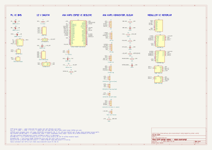
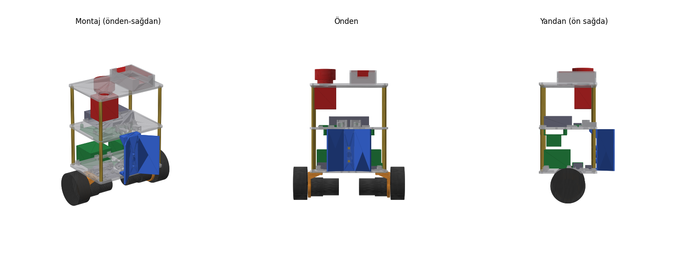
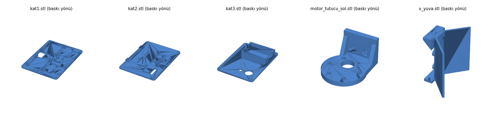

Denge robotu yapım dosyası
Yalnız robot: parçalar, güç ve sinyal şemaları, KiCad şeması, ana kart yerleşimi, kablo listesi, 3B baskı şasi, şarj teması, tüm firmware kodu ve testler. Eldiven, istasyon ve telefon uygulaması bu dosyada yok; robotun onlarla konuştuğu arayüzler var.
Robot parça listesi
Fiyatlar takım sitesinden (9–10 Ekim 2026, KDV dahil). "Yeni" işaretliler bu dosyanın eklemeleri. Kütleler tahmin; parça gelince tartıp tools/mass_budget.py'ye yazın.
| Parça | Adet | Birim TL | Satıcı | Not |
|---|---|---|---|---|
| Beyin ve sensörler | ||||
| ESP32 WROOM-32D geliştirme kartı (38 pin) | 1 | 455 | Robotistan | WROVER değil: GPIO16/17 kullanılıyor |
| MPU6050 GY-521 | 1 | 109 | Robotzade | Kat 1 üstü, teker ekseni hizasında, ortada |
| 38 kHz IR alıcı kartı (VS1838B) | 2 | 41 | Robotistan | TSOP1838 almayın: 3,3 V'ta çalışmaz |
| Hareket | ||||
| JGB37-520 12 V 530 RPM, Hall enkoderli | 2 | 639 | Direnc.net | 6 mm D mil |
| BTS7960 motor sürücü kartı | 2 | 162 | Robotzade | VCC → 3,3 V |
| Motor tutucu, 3B baskı yeni | 2 | — | Kendi baskınız | L braket yerine; cad/stl/motor_tutucu_*.stl |
| 65 mm lastik tekerlek | 2 | 175 | Robotistan | Göbek 6 mm D'ye uymalı |
| 6 mm kaplin (2'li) | 1 | 170 | Robotistan | Göbek mile doğrudan oturuyorsa alınmaz |
| Güç | ||||
| Orion 18650P 2450 mAh 12C | 3 | 201 | Direnc.net | Üçü aynı partiden |
| 18650 3'lü pil yuvası | 1 | 47 | Ulutaş | İçten seri |
| 3S 10 A BMS (HX-3S-01) | 1 | 102 | Motorobit | Şartname gereği zorunlu |
| LM2596 5 V 3 A regülatör | 1 | 161 | Robotistan | Ayarlıysa önce 5,0 V'a ayarlayın |
| Bıçak sigorta yuvası + 5 A (yedek 7,5 A) | 1 | 40 | Motorobit | Zorunlu |
| Acil stop Chint NP2-BE102, NC, 10 A | 1 | 300 | Motorobit | Zorunlu, kat 3'te |
| WAGO 221-415 (5'li) | 2 | 30 | Robotistan | WAGO-12V ve WAGO-GND |
| XT60 takımı | 2 | 26 | Direnc.net | |
| SR5100 Schottky diyot | 3 | 6 | Motorobit | Şarj girişi |
| 1000 µF 25 V düşük ESR elektrolitik yeni | 1 | ~20 | Karaköy | Motor hattı (C5) |
| 18 AWG silikon kablo kırmızı / siyah, 1 m | 2+2 | 35 | Motorobit | |
| Ana kart ve bağlantı | ||||
| 5×10 cm delikli plaket | 1 | 16 | Direnc.net | |
| Dişi + erkek pin header 1×40 | 1 | 45 | Robotistan | ESP32 sokete takılır |
| Dirençler: 100k ×3, 27k ×2, 33k ×1 33k yeni, 10k ×1 | — | ~30 | Robotistan | ¼ W |
| Kondansatör: 100 µF 16 V ×1, 100 nF ×3 | — | ~15 | Robotistan | |
| 2'li 5,08 mm PCB klemens | 3 | 8,72 | Direnc.net | J1, J9, J10 |
| Dişi-dişi jumper 20 cm (40'lı) | 1 | 59 | Direnc.net | Yalnız sinyal |
| Gövde, yük, şarj teması | ||||
| PLA ya da PETG filament, ~0,25 kg yeni | 1 | ~150 | — | 3 kat, V-yuva, 2 motor tutucu (bölüm 09). Pleksi artık yalnız istasyon için. |
| M3 30 mm + 50 mm dişi-dişi distans | 8+8 | 9,5 / 13,5 | Motorobit | Her köşede 30+50 = 80 mm |
| M3 10 mm vida (10'lu) | 4 | 7,5 | Motorobit | |
| M3 10 mm naylon distans + M3 somun (10'lu) yeni | 4 + 1 | ~5 / ~5 | Motorobit | Ana kart kat 2'nin altında; somunlar motor tutucu ve pil yuvası için |
| 5 mm pogo pin (10'lu) robot tarafında | 1 | 87 | Direnc.net | V-yuvada 2 adet, istasyonla paket ortak |
| Neodyum mıknatıs Ø10×3 mm N52 yeni | 2 | ~40 | Trendyol | V-yuvanın arka şeridine, pimlerin arasına; direkteki çelik şeride tutunur |
| Kapaklı ilaç kutusu | 1 | 60 | Eczane | |
Robot tarafının toplamı yaklaşık 5.640 TL (L braket ve pleksi çıktı, filament ve distans girdi; pogo paketi istasyonla paylaşılırsa ~5.550 TL).
Blok şema
Tek beyin ESP32. Çekirdek 1 denge döngüsünü 200 Hz koşturur; çekirdek 0 radyoları (eldivenden ESP-NOW, telefona BLE) ve seri konsolu yönetir.
Güç şeması
Her kutuda gerçek uç adları var. Sigorta, regülatörü ve acil stopu birlikte korur. Acil stop yalnız motor hattını keser; ESP32 açık kalır. Şarj girişi sigortayı atlar, çünkü şarj kartı akımı zaten sınırlar.
Gerilimler ve akımlar
- Paket: 9,9 V boş, 11,1 V nominal, 12,6 V dolu. Şartname sınırı 24 V.
- Motor hattı tepe: iki motor kilitli ~5 A, normal dengede 0,3–1,5 A
- 5 V hattı: ~0,6 A tepe (radyo), LM2596'nın 3 A'inin beşte biri
- 3,3 V: ESP32 kartındaki AMS1117, ~0,31 A, 0,5 W ısı
- Şarj: ~1 A, diyot 0,4 V düşürür, paket ~12,2 V'ta (%90) durur
Bölücüler
- R1/R2 = 100k/27k: 12,6 V → 2,68 V (GPIO35, ADC1, 11 dB)
- R3/R4 = 100k/27k: şarj pimi → GPIO34. 9 V üstü = şarj var.
- R6/R7 = 100k/33k: acil stop sonrası 12,6 V → 3,13 V, 9,9 V → 2,46 V (GPIO23, dijital)
- Her ölçüm pinine GND'ye 100 nF (C2, C3, C4)
Sinyal şeması: ESP32 pinleri
Kullanılmayan pinler: 0, 2, 5, 12, 15 açılış ayar pinleri (2 yalnız karttaki LED); 6–11 flash belleğe ait. 34–39 yalnız giriş, iç pull-up yok.
| Pin | Görev | Yapılandırma |
|---|---|---|
| 19 | MPU6050 INT | Yükselen kenar kesmesi, 200 Hz, denge döngüsünü tetikler |
| 21 / 22 | I2C SDA / SCL | 400 kHz; GY-521 üstünde 4,7k pull-up var |
| 27, 14 / 16, 17 | Sol / sağ RPWM, LPWM | LEDC kanal 0–3, 20 kHz, 10 bit. GPIO14 açılışta kısa darbe verir; EN kapalıyken zararsız. |
| 4 | EN (iki kart) | Çıkış; 10k GND'ye: açılışta ve ESP32 sıfırlanırken motorlar kapalı |
| 32, 33 / 25, 26 | Enkoder A, B | PCNT dörtlü sayım (4x), 1,25 µs süzgeç, iç pull-up |
| 36 / 39 | IR göz sol / sağ | PCNT düşen kenar, 12,8 µs süzgeç (errata 3.11'deki 80 ns darbeleri sayılmaz) |
| 35 / 34 | Pil / şarj pimi gerilimi | ADC1, 11 dB, 50 Hz, analogReadMilliVolts |
| 23 | Acil stop sonrası motor hattı | Dijital giriş; 0 ise robot BEKLE moduna geçer |
| 2 | Karttaki LED | Dengede sabit, beklerken yanıp söner. Şarj göstergesi değil. |
KiCad şeması
Robotun bütün devresi tek sayfa bir KiCad 10 projesidir: elektronik/cdtp_robot.kicad_pro. Bağlantılar etiketle yapılır: aynı adlı etiketler aynı hattır. ESP32, BTS7960, MPU6050, LM2596, BMS, motor, IR gözü, XT60, WAGO ve acil stop sembolleri elektronik/cdtp.kicad_sym kütüphanesindedir. Direnç, kondansatör, diyot, sigorta, pil hücresi ve konnektörler KiCad'in kendi kütüphanesinden gelir.


elektronik/cdtp_robot.pdf.Şema denetimi
| Kontrol | Sonuc | Ayrinti |
|---|---|---|
| KiCad ERC | geçti | 0 hata, 0 uyari |
| ESP32 pinleri = firmware/robot/src/pins.h | geçti | 17 pin sabiti, her biri ESP32 + ana kart konnektoru + modul ucunda dogru |
| Guc ve kablo listesi (W1-W44) | geçti | 17 baglanti grubu dogru; acil stop, JP1, diyot ve XT60 hatlari ayri |
| Bolucu degerleri | geçti | R1/R2 orani 4.704 = firmware DIVIDER 4.704; 12,6 V -> 2.68 V (ADC 11 dB); R6/R7 -> 3.13 V < 3,3 V |
| Tek uclu hat yok | geçti | 57 hat |
Dosyalar
cdtp_robot.kicad_sch: şema.cdtp_robot.pdf/.svg: çıktı.cdtp.kicad_symvesym-lib-table: modül sembolleri; proje açılınca kendiliğinden yüklenir.netlist.xml,erc.json,sema_kontrol.md: denetim çıktıları.
Değiştirme
- Şemayı
tools/kicad_sema.pyüretir. Bir bağlantı değişirse oradaki listeyi düzeltippython tools/kicad_sema.pyçalıştırın: ERC ve pins.h karşılaştırması yeniden koşar. - KiCad'de elle düzenlerseniz betiği bir daha çalıştırmayın; üzerine yazar.
- Baskı devre kartı çizilmedi: ana kart delikli plakettir (bölüm 06). Sembollerin footprint alanı bu yüzden boş.
Ana kart yerleşimi (5×10 cm delikli plaket)
Üstten görünüş, 2,54 mm aralık, 20 × 38 delik. ESP32 iki sıra dişi header üstünde; arızada sökmeden değişir. Anten kart kenarından taşar, altından kablo geçirmeyin. Kalın çizgiler lehim tarafındaki kalaylı hatlar.
| Header | Pin sırası (beyaz kare = 1. pin) | Gittiği yer |
|---|---|---|
| J1 | +5V, GND | LM2596 OUT+ / OUT− (22 AWG) |
| JP1 | 2 pin + jumper | 5 V'u ESP32'ye verir. Kod yüklerken çıkarın (USB ve LM2596 çakışmasın). |
| J2 | 3V3, GND, G22, G21, G19 | MPU6050: VCC, GND, SCL, SDA, INT |
| J3 | G27, G14, G4, 3V3, GND | BTS sol: RPWM, LPWM, R_EN+L_EN (köprülü), VCC, GND. IS uçları boş. |
| J8 | G16, G17, G4, 3V3, GND | BTS sağ: aynı sıra |
| J4 | 3V3, GND, G32, G33 | Sol enkoder: VCC, GND, C1 (A), C2 (B) |
| J5 | 3V3, GND, G25, G26 | Sağ enkoder |
| J6 / J7 | 3V3, GND, G36 / G39 | Sol / sağ IR göz: VCC, GND, OUT |
| J9 | 1: pil, 2: şarj pimi | 1 → WAGO-12V (W19), 2 → üst şarj pimi (W23) |
| J10 | 1: motor hattı | Acil stop NC2 / BTS sol B+ (W43). GND J1'den. |
Kablo listesi
Takım sitesinin numaraları korunur. W20–W23 şarj teması değiştiği için yeniden yazıldı, W41–W44 yeni. Her kablonun iki ucuna numarasını kâğıt bantla yazın. Güç hattında jumper kullanmayın; her lehime makaron.
| No | Nereden | Nereye | Taşıdığı | Kablo | Bağlantı |
|---|---|---|---|---|---|
| Pil ve BMS (bağlama sırası için bölüm 08) | |||||
| W1 | Hücre 1 − | BMS B− | Pil − | 18 AWG siyah | Lehim |
| W2 | Hücre 1+/2− köprüsü | BMS B1 | 3,7 V denge | 22–26 AWG | Lehim (yuvanın köprüsüne) |
| W3 | Hücre 2+/3− köprüsü | BMS B2 | 7,4 V denge | 22–26 AWG | Lehim |
| W4 | Hücre 3 + | BMS B+ | 12,6 V | 18 AWG kırmızı | Lehim |
| W5 | BMS B+ (= P+) | XT60 dişi + | Paket çıkışı | 18 AWG kırmızı | Lehim + makaron |
| W6 | BMS P− | XT60 dişi − | Paket çıkışı | 18 AWG siyah | Lehim + makaron |
| 12 V dağıtım | |||||
| W7 | XT60 erkek + | Sigorta girişi | 12,6 V | 18 AWG kırmızı | Lehim |
| W8 | Sigorta çıkışı | WAGO-12V | Sigortalı 12 V | 18 AWG kırmızı | Klemens |
| W9 | WAGO-12V | Acil stop NC1 | 12 V | 18 AWG kırmızı | Vidalı |
| W10 | Acil stop NC2 | BTS sol B+ | Motor beslemesi | 18 AWG kırmızı | Vidalı |
| W11 | BTS sol B+ | BTS sağ B+ | Motor beslemesi | 18 AWG kırmızı | Zincirleme |
| W12 | WAGO-12V | LM2596 IN+ | 12 V, stoptan önce | 18 AWG kırmızı | Lehim |
| W13 | XT60 erkek − | WAGO-GND | GND | 18 AWG siyah | Klemens |
| W14 | WAGO-GND | BTS sol B− ve sağ B− | GND | 18 AWG siyah ×2 | Vidalı |
| W15 | WAGO-GND | LM2596 IN− | GND | 18 AWG siyah | Lehim |
| W16 | BTS sol M+ / M− | Sol motor M1 / M2 | Motor | Motorun kablosu, bükülü | Vidalı |
| W17 | BTS sağ M+ / M− | Sağ motor M1 / M2 | Motor | Motorun kablosu, bükülü | Vidalı |
| W18 | LM2596 OUT+ / OUT− | Ana kart J1 | 5 V | 22 AWG | Klemens |
| W19 | WAGO-12V | J9-1 | Pil ölçümü | 26 AWG | Klemens |
| Şarj teması (değişti) | |||||
| W20 | Üst pogo pim (+) | SR5100 anot | Şarj + | 18 AWG kırmızı | Lehim |
| W21 | SR5100 katot (çizgili) | XT60 erkek + hattı (W7 başı) | Şarj +, sigortadan önce | 18 AWG kırmızı | Lehim + makaron |
| W22 | Alt pogo pim (−) | WAGO-GND | Şarj − | 18 AWG siyah | Klemens |
| W23 | Üst pogo pim (+) | J9-2 | Şarj algılama | 26 AWG | Klemens |
| Sinyal (dişi-dişi jumper) | |||||
| W24 | J2 | MPU6050 | I2C + INT | 5 jumper | Header, AD0 → GND |
| W25 | J3 | BTS sol | PWM + EN | 5 jumper | Header |
| W26 | J8 | BTS sağ | PWM + EN | 5 jumper | Header |
| W27 | J4 | Sol enkoder | Enkoder | 4 jumper | Motor soketi |
| W28 | J5 | Sağ enkoder | Enkoder | 4 jumper | Motor soketi |
| W29 | J6 | Sol IR göz | IR | 3 jumper | Header |
| W30 | J7 | Sağ IR göz | IR | 3 jumper | Header |
| Yeni | |||||
| W41 | BTS sol B+ | C5 + (1000 µF) | Motor hattı | Kısa, 18 AWG | Vidalı, kutup dikkat |
| W42 | C5 − | BTS sol B− | GND | Kısa, 18 AWG | Vidalı |
| W43 | BTS sol B+ | J10-1 | Motor hattı algılama | 26 AWG | Klemens |
| W44 | Ana kart GND rayı | WAGO-GND | Sinyal GND referansı | 22 AWG | J1 üzerinden |
Motor kablolarını iki teli birbirine sararak götürün; enkoder ve I2C kablolarından en az 2 cm uzak tutun. Jumper uçlarını ilk denemeden sonra ESP32 tarafında sıcak silikonla sabitleyin; denge titreşimi gevşetir.
Pil ve BMS bağlama
Sıra
- Hücreleri tek tek ölçün: 3,0–4,2 V, aralarında ≤ 0,05 V fark.
- B− (W1), sonra B1 (W2), B2 (W3), en son B+ (W4). Sökerken tersi.
- B1 ve B2'yi yuvanın hücre arası metal köprülerine lehimleyin, hücreye değil.
- B−→B1, B1→B2, B2→B+ her biri 3,0–4,2 V olmalı.
- P− ile B+ arası 0 V görünürse BMS uykudadır; bir kez şarj gerilimi verince uyanır.
Kurallar
- Hiçbir yükü doğrudan B−'ye bağlamayın: BMS devre dışı kalır.
- Yük ve şarj aynı uçtan: B+ (=P+) ile P−.
- Bu BMS dengeleme yapmaz; ayda bir hücreleri ölçün.
- Pil yuvası kat 2'de ortada, cırt bantla değil M3 vidayla sabit.
- Robotu kullanmadığınızda XT60'ı çıkarın: ESP32 ve LM2596 sürekli ~0,3 A çeker.
Şasi: 3B baskı parçaları
Gövde altı baskı parçasıdır: üç kat, V-yuva ve iki motor tutucu. Her modülün kendi cebi var; köşe duvarları modülü yerinde tutar, kenarlar kablolar için açıktır. Bütün ölçüler tek dosyada: cad/olcu.py. python cad/robot_cad.py STL'leri baskı yönünde üretir, 38 parçalık montajı kurar ve aşağıdaki denetimleri yapar. Ölçüler mm; z teker ekseninden yukarı, zemin z = −32,5.


3B montaj denetimi ve parçalar
| Kontrol | Sonuc | Ayrinti |
|---|---|---|
| Carpisma (tum parcalar ikili) | geçti | 38 parca, 703 cift; hic biri birbirine girmiyor |
| Zemin payi (+-30 derece egim) | geçti | en alcak nokta zeminden 4.5 mm ([baski] motor_tutucu_sol) |
| Direk yanasmasi (O40, seride temas) | geçti | yalniz pogo pimler direge giriyor (yay payi 3 mm) |
| V kanatlari direge degmiyor | geçti | kanat ic yuzu ile direk arasi 1.2 mm |
| Pim, miknatis ve goz yukseklikleri | geçti | + pim 102.0, - pim 77.0, miknatis 89.5 (celik serit 85-94), IR goz 147.0 mm (zeminden) |
| IR gorus hatti | geçti | iki gozun onu 25 cm acik |
| MPU6050 teker ekseni ustunde, ortada | geçti | x=0, y=0 mm, z=27 mm |
| Kutle butcesi 3B modelle uyumlu | geçti | en buyuk fark 6.0 mm (2x BTS7960: dz +0, MPU6050 (kat 1 ustu, ortada): dz +0, 3x18650 + yuva + BMS: dz +0, Ana kart + ESP32: dz -1, Kat 3 baski: dz +0, Ilac kutusu: dz +0, Acil stop: dz +0, Kutu yuvasi: dz +0) |
| Kutle merkezi teker ekseni ustunde (x) | geçti | x = -0.1 mm (one +); robot dik dururken dengede |
| Baski tablasina sigma (180x180) | geçti | hepsi sigiyor |
| Parca | Boyut (mm, baski yonu) | Hacim cm3 | Kutle g (%60 dolu PLA) |
|---|---|---|---|
| kat1 | 110.0 x 150.0 x 12.0 | 67.9 | 51 |
| kat2 | 110.0 x 150.0 x 18.0 | 68.3 | 51 |
| kat3 | 110.0 x 150.0 x 29.0 | 77.4 | 58 |
| motor_tutucu_sol | 42.0 x 50.0 x 28.0 | 11.8 | 9 |
| motor_tutucu_sag | 42.0 x 50.0 x 28.0 | 11.8 | 9 |
| v_yuva | 47.7 x 83.6 x 80.0 | 36.5 | 27 |
Katlara yerleşim
- Kat 1 altı: iki motor tutucu. JGB37'nin mili eksantrik; motor gövdesi milin 7 mm altında kalır. Tutucu başına 2 × M3 vida, somun tutucunun cebinde.
- Kat 1 üstü (z 26): BTS7960 ×2 arkada (4 ayak, M3 vida), MPU6050 tam ortada (köpük bant, uzun kenar ileri), önde LM2596, sigorta, WAGO ×2 ve C5 beşiği. Arkada 20 × 26 mm kablo penceresi.
- Kat 1–2 arası, önde: V-yuva. Alt flanş kat 1'e, üst kama kat 2'ye ikişer M3 ile.
- Kat 2 altı: ana kart, 10 mm naylon distansla ters asılı; ESP32 aşağı bakar, USB arkadan erişilir.
- Kat 2 üstü (z 110): 3×18650 yuvası (orta hatta 2 × M3), BMS, XT60, ±15° IR göz tutucuları, 8 × 28 mm kablo penceresi.
- Kat 3 üstü (z 194): ilaç kutusu cebi solda (iç 72 × 47, duvar 25 mm, iki parmak oyuğu), acil stop sağda (Ø22,3 delik + dönme kilidi çentiği). İkisi de öne kaydırıldı; böylece kütle merkezi tam teker ekseninin üstünde.
Baskı
- PLA ya da PETG, 0,4 mm nozul, 0,2 mm katman, 3 duvar, %30 dolgu (gyroid). Tabla en az 180 × 180 mm.
- Destek gerekmez: katlar düz, V-yuva dik (üst kaması 45°), motor tutucunun teker tarafı tablada.
- M3 vidalar plastiğe doğrudan girer (Ø2,8 kılavuz delik). Sık sökülecekse
KILAVUZ_D'yi 4,0 yapıp ısıyla gömme somun kullanın. - Mıknatıs cebi V-yuvanın arkasından açılır; önde 0,8 mm plastik kalır. İki mıknatısı üst üste bastırın, arkasına bir damla yapıştırıcı sürün.
- Pogo pimler Ø5,2 deliğe arkadan girer. Uç şeritten 3 mm dışarıda kalacak şekilde sıcak silikonla sabitleyin.
Basmadan önce ölçün
- Satıcıya göre değişen ölçüler
olcu.py'de(OLC)işaretli. En önemlileri: BTS7960 delik aralığı (43 mm), motor ön yüzündeki 6 deliğin açısı ve mil burcu çapı (12,5 mm), pogo pim çapı, ana kart delikleri (94 × 44 mm), pil yuvası (78 × 60 mm). - Ölçü farklıysa
olcu.py'yi düzeltip betiği yeniden çalıştırın. Denetimlerin hepsi yine geçmeli. - İz genişliği 190 mm. Teker göbeği mile farklı oturursa
IZile birliktecdtp_config.h > TRACK_WIDTH_M'yi de değiştirin.
Kütle bütçesi
- Motorlar + tutucular 380 g (z −6)
- Kat 1 ve üstü 255 g (z 24–49)
- Kat 2, pil ve ana kart 330 g (z 87–121)
- Kat 3, acil stop, kutu cebi 160 g (z 192–205)
- Distans, vida, kablo 120 g
- Toplam 1,245 kg, KM 70 mm; kutuyla 1,305 kg, 76 mm
Konumlar 3B modelden alınır ve denetlenir. Pil kat 2'nin altına asıldığında KM 68 mm'ye iniyordu; o zaman belirsizlik testinde 40 rastgele robottan biri 1 m sonra 5,6 cm kaydı. Pil üstte, ana kart altta iken 40/40.
Şarj teması: V-yuva ve direk
Robot önündeki V-yuvayla istasyonun yuvarlak direğine yaslanır. Direk yuvarlak olduğu için hangi açıdan gelirse gelsin temas aynıdır; V-yuva yanal ±3 cm hatayı kendisi ortalar. Pimler robotta, halkalar direkte. Pimler SR5100 diyotun arkasında olduğu için robotta açıkta pil gerilimi yoktur.
Motorlar kesilince tekerler serbest kalır ve robot yuvarlak direkten geri yuvarlanır. Dijital ikizde eğim 11,6°'ye çıktı ve pim temastan ayrıldı. Bu yüzden V-yuvanın arka şeridinde iki neodyum mıknatıs, direkte halkaların arasında çelik şerit var. Şartname manyetik sabitlemeye izin veriyor. Mıknatıs ~10 N tutar; elle çekmek ve motorla geri gitmek (en fazla ~35 N) bunu rahat yener.
Robot tarafı
- Pogo pimler V-yuvanın arka şeridine geçirilir, arkasından lehimlenip sıcak silikonla sabitlenir; uçlar şeritten 3 mm dışarıda.
- Üst pim → SR5100 → XT60 + hattı (W20, W21) ve J9-2 (W23). Alt pim → WAGO-GND (W22).
- Robot dengede ±2° sallanır; pim yüksekliği ±0,5 mm değişir, halka 16 mm.
- Arka şerit 20 mm geniş olmalı: Ø40 direk önce şeride (pimlere) değer, kanatlar yalnız yanal hatayı düzeltir. Sivri V'de direk pimlere 8 mm kala kanatlara takılır (ikizde görüldü).
- İki Ø10×3 mm mıknatıs üst üste, iki pimin tam ortasında (zeminden 89,5 mm). Direkteki çelik şerit 85–94 mm'de olduğu için mıknatıs bu hizada olmalı. 3B denetim, eski "üstüne ve altına" yerleşimindeki mıknatısların şeride değmeyeceğini gösterdi.
Direk tarafı (Elektrik ekibine)
- Ø40 mm PVC boru, 200 mm, ağır taban (robot 6° yaslanır).
- Halkalar bakır banttan, aralarında 9 mm boşluk. Şarj kartı OUT+ → 1,1 A PTC → üst halka, OUT− → alt halka.
- IR LED'ler 147 mm'de, ±20° açılı, robot gözleriyle aynı yükseklikte.
- Robot bölgesine bakan yarım çevrede halkalar; arka yarım bant olmadan bırakılabilir.
- Halkaların arasına (85–94 mm) ince galvaniz çelik şerit sarılır; robotun mıknatısı her açıdan buna tutunur.
Montaj ve tezgâh testleri
- Baskı: altı parçayı basın (bölüm 09). Modülleri ceplerine kuru deneyin; sıkıysa
BOSLUK'u 0,1 artırıp yeniden basın. - Pil: bölüm 08'deki sıra. B+ ile P− arası paket gerilimi.
- Regülatör yüksüz: LM2596'yı sigortadan besleyin, çıkışı 5,0–5,1 V'a ayarlayın. ESP32 takılı değil.
- Ana kart: ESP32 takılı değilken J1'e 5 V verin, soketteki 5V ve 3V3 noktalarını ölçün (3V3 boş: ESP32 regülatörü takılınca gelir). GPIO4 ile GND arası 10k.
- ESP32 tak, JP1 çıkık, USB ile yükle (bölüm 12). Seri monitörde MPU6050 ve
Robot MACgörünmeli. - Ölçümler:
statve telemetridevdeğerini multimetreyle karşılaştırın; fark %3'ten büyüksevscale=. - Motor hattı: EN kablosu takılmadan acil stopa basıp bırakın; J10 gerilimi 0 ↔ ~3,1 V olmalı.
- Motorlar havada: robotu tekerler boşta kalacak şekilde destekleyin, EN'i takın,
mtest: önce sol, sonra sağ teker 1 s ileri. - Kilit akımı: tekeri elle 1 s tutun, sürücü girişinde akım 2,5 A'i geçmiyorsa 5 A sigorta yeter.
- Enkoder: tekeri elle 10 tur ileri;
x≈ 2,04 m. - IMU: robotu öne eğin
tiltartar; sola çevirinyawartar.
Firmware
Yükleme
- VS Code + PlatformIO eklentisi.
firmware/robotklasörünü açın.platformio.iniESP32 platform 6.9.0 (Arduino 2.0.17) ve NimBLE 1.4.3'ü kendisi indirir.- JP1'i çıkarın, USB'yi takın, Upload.
- Seri monitör 115200. Açılışta robot kıpırdamasın: jiroskop 2 s kalibre olur.
Derleme: flash %80, RAM %17, uyarı yok.
Çalışma
- MPU6050 her 5 ms'de INT verir → kesme → çekirdek 1'deki görev uyanır.
- IMU, enkoder (PCNT), IR sayaçları, ADC (50 Hz), eldiven paketi okunur.
RobotLogic::step()çıkışı: EN ve iki PWM oranı.- Her 200 adımda bir telemetri JSON'u üretilir; çekirdek 0 BLE ile yollar.
- IMU 3 kez üst üste okunamazsa motorlar kapanır.
- Eldivenden 0,3 s paket gelmezse süren adım yumuşakça kesilir, robot durur.
- Enkoder tekerin gövdeye göre dönüşünü sayar; yere göre yol için r·θ eklenir.
- Robot yerinde dururken denge açısını yavaşça öğrenir (en fazla ±3°). Kütle merkezi tam eksen üstünde değilse durduktan sonraki kaymayı bu giderir.
| Mod | Ne yapar | Geçiş |
|---|---|---|
| BEKLE | Motorlar kapalı | Elle ±3° içinde 0,5 s tutulunca DENGE. Şarj gerilimi varsa ŞARJ. |
| DENGE | LQR denge; eldiven adımları | Görev uygunsa ve işaret görülürse YANAŞMA. |θ| > 40° → DÜŞTÜ. Acil stop → BEKLE. |
| YANAŞMA | ARA → HİZALAN → YAKLAŞ → YERLEŞ | Pimde 9 V'tan fazla 0,1 s → 4° öne eğilip motorları keser → ŞARJ. 60 s'de bitmezse DENGE. |
| ŞARJ | Motorlar kapalı, mıknatısla direğe yaslı | Eldivenle "geri" → DENGE + 0,5 m geri; sonraki 10 s yeniden yanaşmaz. Şarj 2 s kesilirse BEKLE. |
| DÜŞTÜ | Motorlar kapalı | |θ| < 20° olunca BEKLE. |
| Seri / BLE komutu | Etki |
|---|---|
| stat | Döngü süresi, IMU hata, eldiven paket/kayıp sayısı |
| mtest | BEKLE'deyken sol, sonra sağ teker 1 s %15 ileri |
| task=0..3 | Statik / yönlendirme / şarj / bütünleşik (NVS'e kaydedilir) |
| glove=step | cont | Adım modu (0,5 m / 90°) ya da sürekli sürüş |
| cal | Şu anki eğimi denge noktası kabul et (NVS) |
| vscale=1.000 | Pil ölçüm katsayısı |
Ölçülecek ve ayarlanacaklar
| Parametre | Dosya | Şu an | Nasıl bulunur |
|---|---|---|---|
| Gövde kütlesi, KM, atalet | tools/mass_budget.py | 1,245 kg, 70 mm | Parçaları tartın; KM için robotu ipe iki noktadan asın |
| Enkoder sayım/tur | cdtp_config.h | 836 | Tekeri 10 tur çevirip sayımı okuyun |
| İz genişliği | cdtp_config.h + lqr_design.py | 0,190 m | Teker temas noktaları arası; yerinde 10 tur dönüp enkoder farkından |
| Motor yönleri, enkoder yönleri | cdtp_config.h | sağ ters | mtest ve elle çevirme |
| IMU eksenleri | imu_filter.h AxisMap | X ileri, Z yukarı, jiroskop Y + | MPU6050'yi X ileri, bileşenler yukarı bakacak yapıştırın. Öne eğince tilt artmalı; hızlı öne eğerken jiroskop Y pozitif okunur. Farklı montajda AxisMap işaretlerini değiştirin. |
| Olu bölge gerilimi | cdtp_config.h | 0,45 V | Teker havada; PWM'i yavaş artırıp dönmeye başladığı gerilim |
| Denge noktası ofseti | NVS (cal) | 0 | Robotu en rahat durduğu açıda tutup cal |
| Motor Ke, R | lqr_design.py | 0,216, 4,5 Ω | Ke = 12 V / boşta hız (rad/s); R = 12 V / kilit akımı |
Bir değer değişince: python tools/lqr_design.py → bash tools/run_sim.sh (hepsi geçmeli) → firmware'i yükleyin. Final öncesi main.cpp'de FREEZE = true.
Testler: C++ simülasyonu ve MuJoCo dijital ikizi
C++ simülasyonu: 20/20
| Test | Ölçülen | Sonuç |
|---|---|---|
| ON Enerjisiz +-10 deg'den dik kalmamali | 40 deg'yi gecme suresi en fazla 0.30 s (sinir: 5 s icinde dusmeli) | geçti |
| C1.1 30 s statik denge (kutulu) | en buyuk egim 0.70 deg, en buyuk kayma 1.6 cm | geçti |
| C1.2 1 m ileri + 3 s dur | yol 0.993 m, 3 s durmada en buyuk kayma 10.1 mm (hiz tepe 0.052 m/s), en buyuk egim 5.3 deg | geçti |
| C1.3 1 m geri + 3 s dur | yol 1.005 m, 3 s durmada en buyuk kayma 9.7 mm (hiz tepe 0.049 m/s), en buyuk egim 5.0 deg | geçti |
| C1.4 +10 ve -10 deg'den 10 s icinde toparlanma | +10: 1.44 s (yol 14 cm), -10: 1.48 s (yol 13 cm) | geçti |
| GUV.2 Acil stop: denge birakilir, motorlar kapanir | stop sonrasi mod BEKLE, bekleme dogru | geçti |
| C2.1 Eldiven: ileri ~0,5 m | tepki 0.75 s, yol 0.500 m | geçti |
| C2.2 Eldiven: geri ~0,5 m | tepki 0.78 s, yol -0.492 m | geçti |
| C2.3 Eldiven: sola ~90 deg | tepki 0.29 s, donus 90.0 deg | geçti |
| C2.4 Eldiven: saga ~90 deg | tepki 0.29 s, donus -90.0 deg | geçti |
| C2.5 Dur: tum komutlardan sonra yerinde kalir | son 3 s kayma 12.4 mm, donme 0.43 deg | geçti |
| GUV.1 Eldiven sustu (0,3 s): adim kesilir, robot durur | durdugu yol 0.305 m (tam adim 0,5 m) | geçti |
| C3.1-2 IR ile bul, hizalan, yerles (63 baslangic, 30 cm/90 deg) | 63/63 basarili, en uzun 14.8 s | geçti |
| C3.3 Temastan sonra sarj + motor durur <= 5 s | temas -> SARJ modu en fazla 0.50 s | geçti |
| C3.x Istasyon gorus disindayken arayip bulma | 3/3 basarili (90, -90, 180 deg ters bakis) | geçti |
| C5.1 Butunlesik gorev, tekrar 1 | hedefte bekleme 5.6 s, erken yanasma yok, sarj basladi, temas->sarj 0.50 s | geçti |
| C5.2 Butunlesik gorev, tekrar 2 | hedefte bekleme 5.6 s, erken yanasma yok, sarj basladi, temas->sarj 0.50 s | geçti |
| C5.3 Butunlesik gorev, tekrar 3 | hedefte bekleme 5.6 s, erken yanasma yok, sarj basladi, temas->sarj 0.50 s | geçti |
| C5.4 Butunlesik gorev, tekrar 4 | hedefte bekleme 5.6 s, erken yanasma yok, sarj basladi, temas->sarj 0.50 s | geçti |
| SAG Belirsizlik: kutle +-25%, KM -25/+60%, ... | statik 40/40, toparlanma 40/40 (en uzun 1.7 s), 1 m: +-5 cm durmada 40/40, +-3 cm durmada 37/40 | geçti |
MuJoCo dijital ikizi: 11/11
| Test | Ölçülen | Sonuç |
|---|---|---|
| ON Enerjisiz +-10 deg'den dik kalmamali | 40 deg'ye en gec 0.30 s'de dustu | geçti |
| C1.1 30 s statik denge (kutulu) | en buyuk egim 0.45 deg, kayma 0.8 cm, kutu yerinde | geçti |
| C1.2 1 m ileri + 3 s dur | yol 1.005 m, 3 s durmada kayma 7.8 mm, egim tepe 5.0 deg, kutu yerinde | geçti |
| C1.3 1 m geri + 3 s dur | yol 0.996 m, 3 s durmada kayma 13.1 mm, egim tepe 5.3 deg, kutu yerinde | geçti |
| C1.4 +10 ve -10 deg'den 10 s icinde toparlanma | +10: 1.45 s, -10: 1.46 s | geçti |
| C2.3-4 Eldiven: sola / saga ~90 deg | sol +89.7 deg, sag -89.7 deg | geçti |
| GUV.2 Acil stop: denge birakilir, motorlar kapanir | mod=BEKLE | geçti |
| REF GitHub referans LQI kazanclari ikizde dengeliyor | baslangic 0 deg: dengede (son -0.1 deg), baslangic 8 deg: dengede (son -0.0 deg) | geçti |
| C3 IR ile yanasma, V-yuva + direk (30 baslangic) | 30/30 basarili, en uzun temas 5.8 s, temas->sarj modu 0.50 s | geçti |
| C3.5 Eldivenle 'geri': miknatistan kopup istasyondan ayrilir | once SARJ, sonra mod DENGE, direge uzaklik 52 cm | geçti |
| C5 Butunlesik gorev (kutu, eldiven, yanasma) | son mod SARJ, erken yanasma yok, kutu yerinde | geçti |


Simülasyon gerçek robotun yerini tutmaz. Gerçek robotta ilk denge denemesini kutusuz, iki el yakında yapın.
Robotun bütün kodları
Robotta çalışan her dosya. Ortak çekirdek (common/cdtp_core) robot firmware'inin parçasıdır; protocol.h ve gesture.h eldivenle paylaşılır. Her dosya açılır ve kopyalanır.
23 dosya, 3613 satır
firmware/robot/platformio.iniPlatformIO ayarlari · 23 satır
; Robot ESP32 (ESP32-WROOM-32D gelistirme karti) ; VS Code + PlatformIO eklentisiyle bu klasoru acip "Upload" deyin. ; Kod yuklerken ana karttaki JP1 koprusunu cikarin (USB ve LM2596 5 V'u cakismasin). [platformio] default_envs = robot [env:robot] platform = espressif32@6.9.0 ; Arduino-ESP32 2.0.17 board = esp32dev framework = arduino monitor_speed = 115200 upload_speed = 921600 lib_extra_dirs = ../../common lib_deps = h2zero/NimBLE-Arduino@1.4.3 build_unflags = -std=gnu++11 build_flags = -std=gnu++17 -O2 -DCORE_DEBUG_LEVEL=1 -DCONFIG_BT_NIMBLE_MAX_CONNECTIONS=1
firmware/robot/src/main.cppAna program: 200 Hz gorev, radyolar, komutlar · 219 satır
// CDTP iki tekerlekli hasta destek robotu: robot ESP32 firmware'i.
// Cekirdek 1: 200 Hz denge dongusu (MPU6050 veri-hazir kesmesiyle tetiklenir).
// Cekirdek 0: ESP-NOW (eldiven), BLE (telefon), seri konsol.
// Tum karar mantigi common/cdtp_core/RobotLogic'tedir; PC simulasyonu ayni kodu test eder.
#include <Arduino.h>
#include <Preferences.h>
#include "hw.h"
#include "links.h"
#include "robot_logic.h"
using namespace cdtp;
// ---- Finalde true yapin: BLE/seri uzerinden ayar degisikligi kapanir (sartname: finalde parametre degismez) ----
static bool FREEZE = false;
static Mpu6050 imu;
static PcntCounter encL, encR, irL, irR;
static Motors motors;
static RobotLogic logic;
static Preferences prefs;
static SemaphoreHandle_t imuSem;
static portMUX_TYPE telemMux = portMUX_INITIALIZER_UNLOCKED;
static char telemJson[2][320];
static volatile int telemIdx = 0;
static volatile uint32_t loopMaxUs = 0, imuErrors = 0, overruns = 0;
static volatile int pendingTask = -1, pendingGlove = -1;
static volatile float pendingOffset = NAN;
static volatile int motorTestTicks = 0; // mtest: once sol, sonra sag teker 1'er s ileri
static float vbatScale = 1.0f;
static void IRAM_ATTR onImuInt() {
BaseType_t woke = pdFALSE;
xSemaphoreGiveFromISR(imuSem, &woke);
if (woke) portYIELD_FROM_ISR();
}
static void controlTask(void*) {
RobotInputs in;
uint32_t tick = 0, seq = 0;
float vbat = 11.1f, vchg = 0;
int failStreak = 0;
const uint32_t t0 = micros();
for (;;) {
// veri-hazir kesmesi 5 ms'de bir gelir; 10 ms'de gelmezse yine de oku
if (xSemaphoreTake(imuSem, pdMS_TO_TICKS(10)) != pdTRUE) overruns = overruns + 1;
const uint32_t ts = micros();
if (imu.read(in.imu)) {
failStreak = 0;
} else {
imuErrors = imuErrors + 1;
if (++failStreak >= 3) { // IMU yok: guvenli taraf
motors.set(false, 0, 0);
continue;
}
}
in.t = (ts - t0) * 1e-6f;
in.encL = encL.read();
in.encR = encR.read();
in.irL = irL.read();
in.irR = irR.read();
if (tick % 4 == 0) { // ADC 50 Hz
vbat = readVolts(PIN_VBAT, vbatScale);
vchg = readVolts(PIN_VCHG, vbatScale);
}
in.vbat = vbat;
in.vcharge = vchg;
in.motorPower = !HAS_MOTOR_SENSE || digitalRead(PIN_MOTOR_SENSE);
in.gloveNew = gloverx::poll(in.glove);
if (pendingTask >= 0) { logic.setTask((Task)pendingTask); pendingTask = -1; }
if (pendingGlove >= 0) { logic.setGloveMode((GloveMode)pendingGlove); pendingGlove = -1; }
if (!isnan(pendingOffset)) { logic.setPitchOffset(pendingOffset); pendingOffset = NAN; }
RobotOutputs out = logic.step(in);
if (motorTestTicks > 0) {
// yalniz BEKLE modunda ve tekerler havadayken; %15 ileri, ters takilma bayraklari uygulanmis
if (logic.mode() == Mode::STANDBY) {
const float d = 0.15f;
const bool left = motorTestTicks > 200;
out.motorEnable = true;
out.dutyL = left ? (cfg::MOTOR_LEFT_INVERT ? -d : d) : 0;
out.dutyR = left ? 0 : (cfg::MOTOR_RIGHT_INVERT ? -d : d);
}
motorTestTicks = motorTestTicks - 1;
}
motors.set(out.motorEnable, out.dutyL, out.dutyR);
// 1 Hz telemetri: JSON'u burada uret, radyo gorevi kopyalar
if (++tick % 200 == 0) {
int w = telemIdx ^ 1;
logic.telemetryJson(telemJson[w], sizeof(telemJson[w]), seq++);
portENTER_CRITICAL(&telemMux);
telemIdx = w;
portEXIT_CRITICAL(&telemMux);
}
digitalWrite(PIN_LED, logic.mode() == Mode::BALANCE || logic.mode() == Mode::DOCK ? HIGH : ((tick / 50) & 1));
uint32_t dt = micros() - ts;
if (dt > loopMaxUs) loopMaxUs = dt;
}
}
// Seri ve BLE icin ortak metin komutlari
static void handleCommand(const char* c, Print& out) {
if (!strncmp(c, "task=", 5)) {
int t = atoi(c + 5);
if (t >= 0 && t <= 3) {
pendingTask = t;
prefs.putUChar("task", t);
out.printf("ok gorev=%s\n", taskName((Task)t));
}
return;
}
if (!strcmp(c, "mtest")) {
motorTestTicks = 400;
out.println("motor testi: sol 1 s, sag 1 s ileri (tekerler havada olsun)");
return;
}
if (!strcmp(c, "stat")) {
out.printf("dongu max %lu us, IMU hata %lu, gecikme %lu, eldiven paket %lu (kayip %lu, bozuk %lu), MPU=0x%02X\n",
(unsigned long)loopMaxUs, (unsigned long)imuErrors, (unsigned long)overruns,
(unsigned long)gloverx::count, (unsigned long)gloverx::lost, (unsigned long)gloverx::bad, imu.whoAmI);
loopMaxUs = 0;
return;
}
if (FREEZE) {
out.println("FREEZE: ayar degisikligi kapali");
return;
}
if (!strncmp(c, "glove=", 6)) {
int m = !strcmp(c + 6, "cont") ? 1 : 0;
pendingGlove = m;
prefs.putUChar("glove", m);
out.printf("ok eldiven modu=%s\n", m ? "surekli" : "adim");
} else if (!strcmp(c, "cal")) {
// Robotu elle denge noktasinda (en az caba ile durdugu acida) tutun, sonra "cal" yazin.
float raw = logic.thetaDeg() + prefs.getFloat("ofs", 0);
pendingOffset = raw * DEG;
prefs.putFloat("ofs", raw);
out.printf("ok egim ofseti=%.2f deg\n", raw);
} else if (!strncmp(c, "vscale=", 7)) {
vbatScale = atof(c + 7);
prefs.putFloat("vscale", vbatScale);
out.printf("ok pil olcek=%.4f\n", vbatScale);
} else {
out.println("komutlar: stat | mtest | task=0..3 | glove=step|cont | cal | vscale=1.000");
}
}
void setup() {
Serial.begin(115200);
pinMode(PIN_LED, OUTPUT);
if (HAS_MOTOR_SENSE) pinMode(PIN_MOTOR_SENSE, INPUT);
motors.begin(); // once motorlari kapali konuma al
analogSetPinAttenuation(PIN_VBAT, ADC_11db);
analogSetPinAttenuation(PIN_VCHG, ADC_11db);
prefs.begin("cdtp", false);
logic.setTask((Task)prefs.getUChar("task", (uint8_t)Task::INTEGRATED));
logic.setGloveMode((GloveMode)prefs.getUChar("glove", 0));
logic.setPitchOffset(prefs.getFloat("ofs", cfg::PITCH_OFFSET_DEG_DEFAULT) * DEG);
vbatScale = prefs.getFloat("vscale", 1.0f);
if (!imu.begin()) {
Serial.println("HATA: MPU6050 bulunamadi (SDA=21, SCL=22, AD0=GND?)");
for (;;) { digitalWrite(PIN_LED, !digitalRead(PIN_LED)); delay(100); }
}
Serial.println("Jiroskop kalibrasyonu: robotu kipirdatmayin...");
while (!imu.calibrateGyro()) Serial.println(" hareket algilandi, tekrar");
Serial.printf(" bias: %.4f %.4f %.4f rad/s\n", imu.bias[0], imu.bias[1], imu.bias[2]);
encL.beginQuadrature(PCNT_UNIT_0, PIN_ENC_L_A, PIN_ENC_L_B, 100);
encR.beginQuadrature(PCNT_UNIT_1, PIN_ENC_R_A, PIN_ENC_R_B, 100);
irL.beginFallingEdges(PCNT_UNIT_2, PIN_IR_L, 1023);
irR.beginFallingEdges(PCNT_UNIT_3, PIN_IR_R, 1023);
if (!gloverx::begin()) Serial.println("HATA: ESP-NOW baslatilamadi");
Serial.printf("Robot MAC (eldiven firmware'ine yazin): %s, kanal %d\n", WiFi.macAddress().c_str(), ESPNOW_CHANNEL);
ble::begin("CDTP-Robot");
snprintf(telemJson[0], sizeof telemJson[0], "{}");
imuSem = xSemaphoreCreateBinary();
pinMode(PIN_IMU_INT, INPUT);
attachInterrupt(PIN_IMU_INT, onImuInt, RISING);
xTaskCreatePinnedToCore(controlTask, "ctl", 6144, nullptr, configMAX_PRIORITIES - 1, nullptr, 1);
Serial.println("Hazir. Robotu elle dik tutun: 0,5 s sonra dengeye girer.");
}
void loop() {
static uint32_t lastTel = 0;
static char line[64];
static int n = 0;
// 1 Hz: BLE bildirimi + seri kopya
if (millis() - lastTel >= 1000) {
lastTel = millis();
char buf[320];
portENTER_CRITICAL(&telemMux);
memcpy(buf, telemJson[telemIdx], sizeof buf);
portEXIT_CRITICAL(&telemMux);
ble::publish(buf);
Serial.println(buf);
}
if (ble::cmdReady) {
handleCommand(ble::cmdBuf, Serial);
ble::cmdReady = false;
}
while (Serial.available()) {
char ch = Serial.read();
if (ch == '\n' || ch == '\r') {
if (n) { line[n] = 0; handleCommand(line, Serial); n = 0; }
} else if (n < (int)sizeof(line) - 1) {
line[n++] = ch;
}
}
delay(5);
}
firmware/robot/src/pins.hPin haritasi · 38 satır
// Robot ESP32 pin haritasi. Sitedeki (cdtp-robot.netlify.app > Sema > Robot pinleri) ile aynidir. #pragma once // IMU (MPU6050, I2C 400 kHz, adres 0x68: AD0 -> GND) constexpr int PIN_SDA = 21; constexpr int PIN_SCL = 22; constexpr int PIN_IMU_INT = 19; // BTS7960 x 2. R_EN ve L_EN iki kartta da GPIO4'e bagli; GPIO4 -> 10 kOhm -> GND constexpr int PIN_L_RPWM = 27; // sol motor ileri constexpr int PIN_L_LPWM = 14; // sol motor geri (acilista kisa darbe verir; EN kapaliyken zararsiz) constexpr int PIN_R_RPWM = 16; // sag motor ileri (WROVER kartta 16/17 PSRAM'e gider: WROOM kullanin) constexpr int PIN_R_LPWM = 17; // sag motor geri constexpr int PIN_MOTOR_EN = 4; // Enkoderler (Hall, 3,3 V ile beslenir) constexpr int PIN_ENC_L_A = 32; constexpr int PIN_ENC_L_B = 33; constexpr int PIN_ENC_R_A = 25; constexpr int PIN_ENC_R_B = 26; // IR gozleri (VS1838B; TSOP1838 4,5 V ister, 3,3 V'ta calismaz). Yalniz-giris pinleri. // ESP32 hatasi (errata 3.11): ADC/Wi-Fi acikken GPIO36/39'da ~80 ns'lik dusuk darbeler olur. // Kesme yerine PCNT + 12,8 us cam filtresi kullanildigi icin bu darbeler sayilmaz. constexpr int PIN_IR_L = 36; constexpr int PIN_IR_R = 39; // Olcumler (ADC1; Wi-Fi/BLE acikken calisir). 100k / 27k bolucu: 12,6 V -> 2,68 V constexpr int PIN_VBAT = 35; constexpr int PIN_VCHG = 34; constexpr float DIVIDER = (100.0f + 27.0f) / 27.0f; // Acil stop sonrasi motor hatti: 100k/33k bolucu -> GPIO23 (12,6 V -> 3,1 V). Takili degilse false yapin. constexpr bool HAS_MOTOR_SENSE = false; constexpr int PIN_MOTOR_SENSE = 23; constexpr int PIN_LED = 2; // kart uzerindeki mavi LED (yalniz durum gosterir; sarj gostergesi DEGIL)
firmware/robot/src/hw.hMPU6050, PCNT, BTS7960, ADC suruculeri · 212 satır
// Robot donanim katmani: MPU6050, PCNT sayaclari, BTS7960 PWM, ADC.
#pragma once
#include <Arduino.h>
#include <Wire.h>
#include <driver/pcnt.h>
#include "imu_filter.h"
#include "pins.h"
// ---------------- MPU6050 ----------------
class Mpu6050 {
public:
bool begin() {
Wire.begin(PIN_SDA, PIN_SCL, 400000);
uint8_t who = read8(0x75);
// Orijinali 0x68 doner; bazi klon cipler 0x70/0x72/0x98 doner, yine de calisir
if (who == 0x00 || who == 0xFF) return false;
whoAmI = who;
write8(0x6B, 0x80); // sifirla
delay(100);
write8(0x6B, 0x01); // saat: PLL (jiroskop X)
write8(0x1A, 0x03); // DLPF ~42 Hz
write8(0x19, 4); // 1 kHz / (1+4) = 200 Hz
write8(0x1B, 0x08); // +-500 deg/s -> 65,5 LSB/(deg/s)
write8(0x1C, 0x08); // +-4 g -> 8192 LSB/g
write8(0x37, 0x10); // INT: aktif yuksek, okuyunca temizlenir
write8(0x38, 0x01); // veri hazir kesmesi
return true;
}
// ham olcumu robot birimlerine cevirir (m/s^2, rad/s)
bool read(cdtp::ImuSample& s) {
uint8_t b[14];
Wire.beginTransmission(ADDR);
Wire.write(0x3B);
if (Wire.endTransmission(false) != 0) return false;
if (Wire.requestFrom((int)ADDR, 14) != 14) return false;
for (int i = 0; i < 14; ++i) b[i] = Wire.read();
auto w = [&](int i) { return (int16_t)((b[i] << 8) | b[i + 1]); };
const float ka = 9.80665f / 8192.0f, kg = (3.14159265f / 180.0f) / 65.5f;
for (int i = 0; i < 3; ++i) {
s.acc[i] = w(i * 2) * ka;
s.gyro[i] = w(8 + i * 2) * kg - bias[i];
}
return true;
}
// Acilista robot hareketsizken jiroskop sapmasini olcer (yatik da olabilir)
bool calibrateGyro(int n = 400) {
double sum[3] = {0, 0, 0}, sq[3] = {0, 0, 0};
for (int i = 0; i < 3; ++i) bias[i] = 0;
cdtp::ImuSample s;
for (int k = 0; k < n; ++k) {
if (!read(s)) return false;
for (int i = 0; i < 3; ++i) {
sum[i] += s.gyro[i];
sq[i] += s.gyro[i] * s.gyro[i];
}
delay(5);
}
for (int i = 0; i < 3; ++i) {
double m = sum[i] / n, var = sq[i] / n - m * m;
if (var > 0.0004) return false; // ~1,1 deg/s std: robot kipirdadi, tekrar
bias[i] = (float)m;
}
return true;
}
float bias[3] = {0, 0, 0};
uint8_t whoAmI = 0;
private:
static constexpr uint8_t ADDR = 0x68;
void write8(uint8_t r, uint8_t v) {
Wire.beginTransmission(ADDR);
Wire.write(r);
Wire.write(v);
Wire.endTransmission();
}
uint8_t read8(uint8_t r) {
Wire.beginTransmission(ADDR);
Wire.write(r);
Wire.endTransmission(false);
Wire.requestFrom((int)ADDR, 1);
return Wire.available() ? Wire.read() : 0xFF;
}
};
// ---------------- PCNT: enkoder (4x) ve IR darbe sayaci ----------------
// 16 bitlik donanim sayacini yazilimda 32 bite genisletir. Her 5 ms okunmasi yeterli.
class PcntCounter {
public:
void beginQuadrature(pcnt_unit_t u, int a, int b, uint16_t filter) {
unit_ = u;
pcnt_config_t c = {};
c.unit = u;
c.counter_h_lim = LIM;
c.counter_l_lim = -LIM;
// kanal 0: A kenarlari, yon B'den
c.channel = PCNT_CHANNEL_0;
c.pulse_gpio_num = a;
c.ctrl_gpio_num = b;
c.pos_mode = PCNT_COUNT_DEC;
c.neg_mode = PCNT_COUNT_INC;
c.lctrl_mode = PCNT_MODE_REVERSE;
c.hctrl_mode = PCNT_MODE_KEEP;
pcnt_unit_config(&c);
// kanal 1: B kenarlari, yon A'dan
c.channel = PCNT_CHANNEL_1;
c.pulse_gpio_num = b;
c.ctrl_gpio_num = a;
c.pos_mode = PCNT_COUNT_INC;
c.neg_mode = PCNT_COUNT_DEC;
pcnt_unit_config(&c);
gpio_pullup_en((gpio_num_t)a);
gpio_pullup_en((gpio_num_t)b);
finish(filter);
}
void beginFallingEdges(pcnt_unit_t u, int pin, uint16_t filter) {
unit_ = u;
pcnt_config_t c = {};
c.unit = u;
c.channel = PCNT_CHANNEL_0;
c.pulse_gpio_num = pin;
c.ctrl_gpio_num = PCNT_PIN_NOT_USED;
c.pos_mode = PCNT_COUNT_DIS;
c.neg_mode = PCNT_COUNT_INC; // alici cikisi patlama sirasinda dusuk
c.lctrl_mode = PCNT_MODE_KEEP;
c.hctrl_mode = PCNT_MODE_KEEP;
c.counter_h_lim = LIM;
c.counter_l_lim = -LIM;
pcnt_unit_config(&c);
finish(filter);
}
int32_t read() {
int16_t v = 0;
pcnt_get_counter_value(unit_, &v);
int32_t d = (int32_t)v - last_;
if (d > LIM / 2) d -= LIM; // sayac +-LIM'e ulasinca 0'a doner
if (d < -LIM / 2) d += LIM;
last_ = v;
acc_ += d;
return acc_;
}
private:
static constexpr int16_t LIM = 30000;
void finish(uint16_t filter) {
pcnt_set_filter_value(unit_, filter); // APB 80 MHz cevrimi; 1023 = 12,8 us
pcnt_filter_enable(unit_);
pcnt_counter_pause(unit_);
pcnt_counter_clear(unit_);
pcnt_counter_resume(unit_);
}
pcnt_unit_t unit_ = PCNT_UNIT_0;
int16_t last_ = 0;
int32_t acc_ = 0;
};
// ---------------- BTS7960 x 2 ----------------
class Motors {
public:
void begin() {
pinMode(PIN_MOTOR_EN, OUTPUT);
digitalWrite(PIN_MOTOR_EN, LOW);
const int pins[4] = {PIN_L_RPWM, PIN_L_LPWM, PIN_R_RPWM, PIN_R_LPWM};
for (int i = 0; i < 4; ++i) {
#if ESP_ARDUINO_VERSION_MAJOR >= 3
ledcAttach(pins[i], FREQ, BITS);
#else
ledcSetup(i, FREQ, BITS);
ledcAttachPin(pins[i], i);
#endif
write(i, 0);
}
}
// duty: -1..1. enable=false: iki surucu de yuksek empedans (motor serbest)
void set(bool enable, float dl, float dr) {
if (!enable) {
digitalWrite(PIN_MOTOR_EN, LOW);
for (int i = 0; i < 4; ++i) write(i, 0);
return;
}
side(0, dl);
side(2, dr);
digitalWrite(PIN_MOTOR_EN, HIGH);
}
private:
static constexpr int FREQ = 20000, BITS = 10, MAXD = (1 << BITS) - 1;
void side(int ch, float d) {
int v = (int)(fabsf(d) * MAXD + 0.5f);
if (v > MAXD) v = MAXD;
// asla iki yari kopru ayni anda surulmez
if (d >= 0) {
write(ch + 1, 0);
write(ch, v);
} else {
write(ch, 0);
write(ch + 1, v);
}
}
void write(int ch, int v) {
#if ESP_ARDUINO_VERSION_MAJOR >= 3
const int pins[4] = {PIN_L_RPWM, PIN_L_LPWM, PIN_R_RPWM, PIN_R_LPWM};
ledcWrite(pins[ch], v);
#else
ledcWrite(ch, v);
#endif
}
};
// ---------------- ADC ----------------
inline float readVolts(int pin, float scale) { return analogReadMilliVolts(pin) * 0.001f * DIVIDER * scale; }
firmware/robot/src/links.hESP-NOW alici, BLE sunucu · 114 satır
// Kablosuz baglantilar: eldivenden ESP-NOW, telefona BLE.
#pragma once
#include <Arduino.h>
#include <NimBLEDevice.h>
#include <WiFi.h>
#include <esp_now.h>
#include <esp_wifi.h>
#include "protocol.h"
constexpr uint8_t ESPNOW_CHANNEL = 1; // eldivenle ayni olmali
// ---------------- ESP-NOW alici ----------------
namespace gloverx {
static portMUX_TYPE mux = portMUX_INITIALIZER_UNLOCKED;
static cdtp::GlovePacket last;
static volatile uint32_t count = 0, bad = 0, lost = 0;
static uint32_t seenCount = 0;
static uint16_t lastSeq = 0;
static void onPacket(const uint8_t* data, int len) {
cdtp::GlovePacket p;
if (!cdtp::checkPacket(data, len, p)) {
bad = bad + 1;
return;
}
portENTER_CRITICAL(&mux);
if (count > 0) lost = lost + (uint16_t)(p.seq - lastSeq - 1);
lastSeq = p.seq;
last = p;
count = count + 1;
portEXIT_CRITICAL(&mux);
}
#if ESP_ARDUINO_VERSION_MAJOR >= 3
static void cb(const esp_now_recv_info_t*, const uint8_t* d, int n) { onPacket(d, n); }
#else
static void cb(const uint8_t*, const uint8_t* d, int n) { onPacket(d, n); }
#endif
inline bool begin() {
WiFi.mode(WIFI_STA);
WiFi.disconnect();
esp_wifi_set_channel(ESPNOW_CHANNEL, WIFI_SECOND_CHAN_NONE);
if (esp_now_init() != ESP_OK) return false;
esp_now_register_recv_cb(cb);
return true;
}
// Kontrol dongusu cagirir: yeni paket varsa true
inline bool poll(cdtp::GlovePacket& out) {
bool fresh = false;
portENTER_CRITICAL(&mux);
if (count != seenCount) {
seenCount = count;
out = last;
fresh = true;
}
portEXIT_CRITICAL(&mux);
return fresh;
}
} // namespace gloverx
// ---------------- BLE: telefon uygulamasi ----------------
// Servis ve karakteristik UUID'leri uygulama ekibiyle paylasilir (docs/BLE_PROTOKOL.md).
#define CDTP_SVC_UUID "6e400001-cd7b-4e3a-9a40-2026cd7b0001"
#define CDTP_TELEM_UUID "6e400002-cd7b-4e3a-9a40-2026cd7b0001" // notify + read, JSON, 1 Hz
#define CDTP_CMD_UUID "6e400003-cd7b-4e3a-9a40-2026cd7b0001" // write, metin komut
namespace ble {
static NimBLECharacteristic* telem = nullptr;
static volatile bool connected = false;
static char cmdBuf[64];
static volatile bool cmdReady = false;
class ServerCb : public NimBLEServerCallbacks {
void onConnect(NimBLEServer*) override { connected = true; }
void onDisconnect(NimBLEServer*) override {
connected = false;
NimBLEDevice::startAdvertising();
}
};
class CmdCb : public NimBLECharacteristicCallbacks {
void onWrite(NimBLECharacteristic* c) override {
std::string v = c->getValue();
if (cmdReady) return; // onceki komut islenmedi
size_t n = v.size() < sizeof(cmdBuf) - 1 ? v.size() : sizeof(cmdBuf) - 1;
memcpy(cmdBuf, v.data(), n);
cmdBuf[n] = 0;
cmdReady = true;
}
};
inline void begin(const char* name) {
NimBLEDevice::init(name);
NimBLEDevice::setMTU(247);
NimBLEDevice::setPower(ESP_PWR_LVL_P9);
NimBLEServer* s = NimBLEDevice::createServer();
s->setCallbacks(new ServerCb());
NimBLEService* svc = s->createService(CDTP_SVC_UUID);
telem = svc->createCharacteristic(CDTP_TELEM_UUID, NIMBLE_PROPERTY::READ | NIMBLE_PROPERTY::NOTIFY);
NimBLECharacteristic* cmd = svc->createCharacteristic(CDTP_CMD_UUID, NIMBLE_PROPERTY::WRITE | NIMBLE_PROPERTY::WRITE_NR);
cmd->setCallbacks(new CmdCb());
svc->start();
NimBLEAdvertising* adv = NimBLEDevice::getAdvertising();
adv->addServiceUUID(CDTP_SVC_UUID);
adv->setScanResponse(true);
adv->start();
}
inline void publish(const char* json) {
if (!telem) return;
telem->setValue((const uint8_t*)json, strlen(json));
if (connected) telem->notify();
}
} // namespace ble
common/cdtp_core/src/cdtp_config.hTum ayar sabitleri · 80 satır
// Robot parametreleri. "OLC" yazanlar parca gelince olculup guncellenecek.
// Bu dosya hem firmware'de hem simulasyonda ayni degerlerle kullanilir.
#pragma once
namespace cdtp {
namespace cfg {
// ---- Mekanik (OLC) ----
constexpr float WHEEL_RADIUS_M = 0.0325f; // 65 mm teker
constexpr float TRACK_WIDTH_M = 0.190f; // iki teker temas noktasi arasi (sasi cizimi; OLC)
constexpr float ENC_COUNTS_PER_REV = 836.0f; // 11 darbe x ~19 disli x 4 kenar (OLC: tekeri 10 tur cevir)
constexpr bool ENC_LEFT_INVERT = false;
constexpr bool ENC_RIGHT_INVERT = true; // sag motor ayna takili
constexpr bool MOTOR_LEFT_INVERT = false;
constexpr bool MOTOR_RIGHT_INVERT = true;
// ---- Dongu ----
constexpr float LOOP_HZ = 200.0f;
constexpr float DT = 1.0f / LOOP_HZ;
// ---- IMU filtresi ----
constexpr float COMP_ALPHA = 0.98f; // tumleyen filtre: 0.98 jiroskop, 0.02 ivme
constexpr float PITCH_OFFSET_DEG_DEFAULT = 0.0f; // denge noktasi ofseti (NVS'ten yuklenir)
// ---- Motor / guc ----
constexpr float VBAT_NOMINAL = 11.1f;
constexpr float VBAT_EMPTY = 9.9f; // 3.3 V/hucre
constexpr float VBAT_FULL = 12.6f;
constexpr float DUTY_MAX = 0.95f;
constexpr float MOTOR_DEADBAND_V = 0.45f; // kucuk gerilimde dislinin donmemesi (OLC)
constexpr float MOTOR_KE = 0.216f; // V/(rad/s), cikis milinde: 12 V / 55.5 rad/s (530 RPM)
// ---- Kontrol ----
constexpr float TRIM_RATE = 0.1f; // rad/(m s): dururken denge acisi ogrenme hizi
constexpr float TRIM_MAX_DEG = 3.0f; // ogrenilen aci siniri
constexpr float REF_SHAPING_W = 5.0f; // rad/s, konum referansi suzgeci
constexpr float TH_FF_GAIN = 1.0f; // ivme -> egim on-beslemesinin ne kadari kullanilsin (sim ile secildi)
// ---- Guvenlik ----
constexpr float FALL_ANGLE_DEG = 40.0f; // bunun ustunde motorlar kapanir
constexpr float FALL_HOLD_S = 0.05f;
constexpr float ARM_ANGLE_DEG = 3.0f; // elle dik tutulunca bu acida dengeye girer
constexpr float ARM_HOLD_S = 0.5f;
constexpr float GLOVE_TIMEOUT_S = 0.30f; // bu sure paket yoksa dur
// ---- Hareket ----
constexpr float STEP_DIST_M = 0.50f; // ileri/geri komutu basina yol
constexpr float STEP_VMAX = 0.25f; // m/s
constexpr float STEP_ACCEL = 0.40f; // m/s^2
constexpr float TURN_ANGLE_DEG = 90.0f;
constexpr float TURN_RATE_DEG = 90.0f; // deg/s
constexpr float TURN_ACCEL_DEG = 240.0f; // deg/s^2
constexpr float CONT_V = 0.20f; // surekli modda hiz
constexpr float CONT_YAW_DEG = 60.0f; // surekli modda donus hizi
// ---- Yanasma ----
constexpr float DOCK_SEARCH_YAW_DEG = 30.0f;
constexpr float DOCK_ALIGN_K_DEG = 40.0f; // e=1 icin deg/s
constexpr float DOCK_ALIGN_TOL = 0.25f;
constexpr float DOCK_APPROACH_V = 0.08f;
constexpr int DOCK_MIN_COUNT = 6; // bir gozun "gordu" sayilmasi icin cerceve basina darbe
constexpr float DOCK_TRIGGER_S = 1.0f; // gozlerden biri isareti bu kadar gorurse yanasmaya gec
constexpr float DOCK_IDLE_S = 6.0f; // eldiven bu kadar "dur"daysa yanasma serbest (hedefte 5 s bekleme bozulmasin)
constexpr float DOCK_LOST_S = 1.0f;
constexpr float DOCK_TIMEOUT_S = 60.0f;
constexpr float UNDOCK_HOLD_S = 10.0f; // eldivenle istasyondan ayrilinca bu sure yeniden yanasmaz
constexpr float CHARGE_DETECT_V = 9.0f; // plakada bu gerilim varsa sarj var
constexpr float CHARGE_CONFIRM_S = 0.10f;
constexpr float DOCK_LEAN_DEG = 4.0f; // motor kesmeden once sirta dogru egilme
// ---- Eldiven jest ----
constexpr float GEST_ENTER_DEG = 25.0f;
constexpr float GEST_EXIT_DEG = 15.0f;
constexpr float GEST_NEUTRAL_DEG = 12.0f;
constexpr float GEST_HOLD_S = 0.15f; // komuta girmek icin bekleme
constexpr float GEST_NEUTRAL_S = 0.20f;
} // namespace cfg
} // namespace cdtp
common/cdtp_core/src/gains.hLQR kazanclari (uretilir) · 17 satır
// OTOMATIK URETILDI: tools/lqr_design.py. Elle degistirmeyin; modeli guncelleyip yeniden calistirin.
// Durum: [x (m), v (m/s), theta (rad), omega (rad/s)], cikis: her motora gerilim (V).
// u = -K (s - s_ref)
#pragma once
namespace cdtp {
namespace gains {
constexpr float K_X = -53.04604f;
constexpr float K_V = -65.55542f;
constexpr float K_TH = -108.55007f;
constexpr float K_OM = -13.48660f;
constexpr float YAW_KP = 2.73684f;
constexpr float YAW_KD = 0.61579f;
// a_ref -> egim on-besleme (rad / (m/s^2))
constexpr float TH_PER_ACC = 0.15425f;
} // namespace gains
} // namespace cdtp
common/cdtp_core/src/robot_logic.hMod makinesi arayuzu · 119 satır
// Robotun tum karar mantigi: mod makinesi, denge (LQR), hareket, yanasma.
// Donanimdan bagimsizdir: firmware her 5 ms'de bir step() cagirir, simulasyon da ayni sinifi kullanir.
#pragma once
#include <stdint.h>
#include "battery.h"
#include "cdtp_config.h"
#include "core_math.h"
#include "dock_fsm.h"
#include "imu_filter.h"
#include "ir_frame.h"
#include "protocol.h"
namespace cdtp {
enum class Mode : uint8_t { STANDBY, BALANCE, DOCK, CHARGING, FALLEN };
enum class Task : uint8_t { STATIC = 0, GUIDANCE = 1, CHARGING = 2, INTEGRATED = 3 };
enum class GloveMode : uint8_t { STEP = 0, CONTINUOUS = 1 };
enum class MotionState : uint8_t { STATIC, MOVING, TURNING, RECOVERY };
const char* modeName(Mode m);
const char* taskName(Task t);
const char* motionName(MotionState m);
struct RobotInputs {
float t = 0; // s
ImuSample imu{}; // ham eksen, gyro bias cikarilmis
int32_t encL = 0, encR = 0; // kumulatif sayim (ham)
float vbat = 11.1f; // V
float vcharge = 0; // plaka gerilimi, V
int32_t irL = 0, irR = 0; // IR dusen kenar sayaclari (kumulatif)
bool motorPower = true; // acil stop sonrasi 12 V var mi (olculmuyorsa hep true)
bool gloveNew = false; // bu adimda yeni paket geldi mi
GlovePacket glove{};
};
struct RobotOutputs {
bool motorEnable = false;
float dutyL = 0, dutyR = 0; // -1..1, + = ileri (yon cevirme dahil edilmis)
};
class RobotLogic {
public:
RobotLogic();
void setAxisMap(const AxisMap& m) { axes_ = m; }
void setPitchOffset(float rad) { tilt_.setOffset(rad); }
void setTask(Task t) { task_ = t; }
void setGloveMode(GloveMode m) { gloveMode_ = m; }
RobotOutputs step(const RobotInputs& in);
// Telemetri / izleme
Mode mode() const { return mode_; }
Task task() const { return task_; }
MotionState motion() const { return motion_; }
const char* direction() const { return dir_; }
DockState dockState() const { return dock_.state(); }
float thetaDeg() const { return tilt_.theta() / DEG; }
float trimDeg() const { return thTrim_ / DEG; }
float x() const { return x_; }
float v() const { return v_; }
float psiDeg() const { return psi_ / DEG; }
bool charging() const { return charging_; }
int batteryPct() const { return bat_.percent(); }
float batteryV() const { return bat_.volts(); }
int irNL() const { return irL_.n(); }
int irNR() const { return irR_.n(); }
Cmd lastGloveCmd() const { return gloveCmd_; }
bool gloveAlive() const { return gloveAlive_; }
int telemetryJson(char* buf, int len, uint32_t seq) const;
private:
void enterBalance();
void handleGlove(const RobotInputs& in);
void startStep(Cmd c);
bool dockAllowed() const;
RobotOutputs balanceControl(float vbat, float leanRad);
void updateMotionState();
AxisMap axes_;
TiltFilter tilt_;
BatteryMonitor bat_;
IrFrameCounter irL_, irR_;
DockFsm dock_;
Mode mode_ = Mode::STANDBY;
Task task_ = Task::INTEGRATED;
GloveMode gloveMode_ = GloveMode::STEP;
MotionState motion_ = MotionState::STATIC;
const char* dir_ = "-";
float t_ = 0, modeT_ = 0, armT_ = 0, fallT_ = 0;
// olcumler
int32_t encL0_ = 0, encR0_ = 0;
bool encInit_ = false;
float x_ = 0, v_ = 0, psi_ = 0;
float xHist_[4] = {0, 0, 0, 0};
int histIdx_ = 0;
// referanslar
float xRaw_ = 0, vRaw_ = 0; // bicimlendirme oncesi referans
float thTrim_ = 0; // ogrenilen denge acisi (rad); acilista sifir, cal komutu kalici ofseti verir
float xRef_ = 0, vRef_ = 0, aRef_ = 0, psiRef_ = 0, rRef_ = 0;
float xStart_ = 0, psiStart_ = 0;
Trapezoid lin_, rot_;
bool linActive_ = false, rotActive_ = false;
float vCmd_ = 0, rCmd_ = 0; // hiz modu hedefleri (surekli mod / yanasma)
// eldiven
Cmd gloveCmd_ = Cmd::STOP, prevGloveCmd_ = Cmd::STOP;
float gloveLastT_ = -10, gloveIdleT_ = 0;
bool gloveAlive_ = false;
bool pendingBack_ = false;
// yanasma tetik
float beaconT_ = 0;
float undockHoldT_ = 0; // eldivenle ayrildiktan sonra otomatik yanasma beklemesi
bool charging_ = false;
float chargeLostT_ = 0;
};
} // namespace cdtp
common/cdtp_core/src/robot_logic.cppMod makinesi, LQR, hareket, telemetri · 325 satır
#include "robot_logic.h"
#include <stdio.h>
#include "gains.h"
namespace cdtp {
const char* modeName(Mode m) {
switch (m) {
case Mode::STANDBY: return "BEKLE";
case Mode::BALANCE: return "DENGE";
case Mode::DOCK: return "YANASMA";
case Mode::CHARGING: return "SARJ";
case Mode::FALLEN: return "DUSTU";
}
return "?";
}
const char* taskName(Task t) {
switch (t) {
case Task::STATIC: return "statik";
case Task::GUIDANCE: return "yonlendirme";
case Task::CHARGING: return "sarj";
case Task::INTEGRATED: return "butunlesik";
}
return "?";
}
const char* motionName(MotionState m) {
switch (m) {
case MotionState::STATIC: return "statik";
case MotionState::MOVING: return "ilerliyor";
case MotionState::TURNING: return "donuyor";
case MotionState::RECOVERY: return "toparlaniyor";
}
return "?";
}
RobotLogic::RobotLogic() { tilt_.setOffset(cfg::PITCH_OFFSET_DEG_DEFAULT * DEG); }
void RobotLogic::enterBalance() {
mode_ = Mode::BALANCE;
modeT_ = 0;
xRef_ = xRaw_ = x_;
vRef_ = aRef_ = vRaw_ = 0;
psiRef_ = psi_;
rRef_ = 0;
linActive_ = rotActive_ = false;
vCmd_ = rCmd_ = 0;
dock_.abort();
armT_ = beaconT_ = 0;
}
bool RobotLogic::dockAllowed() const { return task_ == Task::CHARGING || task_ == Task::INTEGRATED; }
void RobotLogic::startStep(Cmd c) {
if (c == Cmd::FWD || c == Cmd::BACK) {
xStart_ = xRaw_;
lin_.start(c == Cmd::FWD ? cfg::STEP_DIST_M : -cfg::STEP_DIST_M, cfg::STEP_VMAX, cfg::STEP_ACCEL);
linActive_ = true;
} else if (c == Cmd::LEFT || c == Cmd::RIGHT) {
psiStart_ = psiRef_;
float a = cfg::TURN_ANGLE_DEG * DEG;
rot_.start(c == Cmd::LEFT ? a : -a, cfg::TURN_RATE_DEG * DEG, cfg::TURN_ACCEL_DEG * DEG);
rotActive_ = true;
}
}
void RobotLogic::handleGlove(const RobotInputs& in) {
const float dt = cfg::DT;
Cmd cmd = gloveCmd_;
if (in.gloveNew) {
gloveLastT_ = in.t;
cmd = (Cmd)in.glove.cmd;
}
const bool wasAlive = gloveAlive_;
gloveAlive_ = (in.t - gloveLastT_) < cfg::GLOVE_TIMEOUT_S;
if (!gloveAlive_) cmd = Cmd::STOP;
const bool edge = cmd != prevGloveCmd_;
prevGloveCmd_ = cmd;
gloveCmd_ = cmd;
const bool motionCmd = cmd == Cmd::FWD || cmd == Cmd::BACK || cmd == Cmd::LEFT || cmd == Cmd::RIGHT;
gloveIdleT_ = motionCmd ? 0 : gloveIdleT_ + dt;
if (mode_ == Mode::CHARGING) {
// istasyondan eldivenle ayrilma: "geri" komutu
if (edge && cmd == Cmd::BACK) {
enterBalance();
pendingBack_ = true;
undockHoldT_ = cfg::UNDOCK_HOLD_S; // kullanici ayirdi: hemen geri yanasma
}
return;
}
if (mode_ != Mode::BALANCE || task_ == Task::STATIC) return;
if (gloveMode_ == GloveMode::CONTINUOUS) {
vCmd_ = cmd == Cmd::FWD ? cfg::CONT_V : (cmd == Cmd::BACK ? -cfg::CONT_V : 0.0f);
rCmd_ = cmd == Cmd::LEFT ? cfg::CONT_YAW_DEG * DEG : (cmd == Cmd::RIGHT ? -cfg::CONT_YAW_DEG * DEG : 0.0f);
return;
}
// Adim modu: her hareket jesti bir adim (0,5 m ya da 90 deg). Notr el ("dur") adimi kesmez, robot adimi bitirip durur.
// Adim surerken farkli bir hareket jesti ya da baglanti kopmasi adimi yumusakca keser.
if (wasAlive && !gloveAlive_ && (linActive_ || rotActive_)) {
lin_.stopSoft();
rot_.stopSoft();
}
if (edge && motionCmd) {
if (linActive_ || rotActive_) {
lin_.stopSoft();
rot_.stopSoft();
} else {
startStep(cmd);
}
}
}
RobotOutputs RobotLogic::balanceControl(float vbat, float leanRad) {
using namespace gains;
const float r = cfg::WHEEL_RADIUS_M;
const float thRef = cfg::TH_FF_GAIN * TH_PER_ACC * aRef_ + leanRad;
const float ex = clampf(x_ - xRef_, -0.25f, 0.25f);
// Denge noktasi ogrenme: kutle merkezi eksenin tam ustunde degilse robot egik dengede durur ve LQR bunu
// kalici konum hatasiyla karsilar (dururken yavas kayma). Robot yerinde dururken egim hedefi yavasca
// bu hatayi sifirlayacak yone kaydirilir. Hareket, donus ve yanasmada donmus kalir.
const bool still = !linActive_ && !rotActive_ && fabsf(vRef_) < 0.01f && fabsf(rRef_) < 0.05f && mode_ == Mode::BALANCE;
if (still) thTrim_ = clampf(thTrim_ - cfg::TRIM_RATE * ex * cfg::DT, -cfg::TRIM_MAX_DEG * DEG, cfg::TRIM_MAX_DEG * DEG);
float u = -(K_X * ex + K_V * (v_ - vRef_) + K_TH * (tilt_.theta() - thRef - thTrim_) + K_OM * tilt_.pitchRate());
u += cfg::MOTOR_KE * vRef_ / r; // zit-EMK on-beslemesi
float ud = YAW_KP * wrapPi(psiRef_ - psi_) + YAW_KD * (rRef_ - tilt_.yawRate());
ud += cfg::MOTOR_KE * (rRef_ * cfg::TRACK_WIDTH_M * 0.5f) / r;
vbat = fmaxf(vbat, 9.0f);
const float vmax = cfg::DUTY_MAX * vbat;
u = clampf(u, -vmax, vmax);
const float udMax = fmaxf(0.0f, vmax - fabsf(u)); // denge onceliklidir, donus payi kalandan
ud = clampf(ud, -udMax, udMax);
float vl = u - ud, vr = u + ud;
// olu bolge telafisi (yumusak)
vl += cfg::MOTOR_DEADBAND_V * clampf(vl / 0.3f, -1, 1);
vr += cfg::MOTOR_DEADBAND_V * clampf(vr / 0.3f, -1, 1);
RobotOutputs o;
o.motorEnable = true;
o.dutyL = clampf(vl / vbat, -cfg::DUTY_MAX, cfg::DUTY_MAX);
o.dutyR = clampf(vr / vbat, -cfg::DUTY_MAX, cfg::DUTY_MAX);
if (cfg::MOTOR_LEFT_INVERT) o.dutyL = -o.dutyL;
if (cfg::MOTOR_RIGHT_INVERT) o.dutyR = -o.dutyR;
return o;
}
void RobotLogic::updateMotionState() {
const float th = fabsf(tilt_.theta()), om = fabsf(tilt_.pitchRate());
if (mode_ != Mode::BALANCE && mode_ != Mode::DOCK) {
motion_ = MotionState::STATIC;
dir_ = "-";
return;
}
if (th > 5 * DEG || om > 40 * DEG) motion_ = MotionState::RECOVERY;
else if (rotActive_ || fabsf(rRef_) > 0.1f) motion_ = MotionState::TURNING;
else if (linActive_ || fabsf(vRef_) > 0.02f) motion_ = MotionState::MOVING;
else motion_ = MotionState::STATIC;
if (motion_ == MotionState::TURNING) dir_ = rRef_ > 0 ? "sol" : "sag";
else if (motion_ == MotionState::MOVING) dir_ = vRef_ > 0 ? "ileri" : "geri";
else dir_ = "-";
}
RobotOutputs RobotLogic::step(const RobotInputs& in) {
const float dt = cfg::DT;
t_ = in.t;
modeT_ += dt;
tilt_.update(in.imu, axes_, dt);
bat_.update(in.vbat, dt);
irL_.sample(in.irL, in.t);
irR_.sample(in.irR, in.t);
charging_ = in.vcharge > cfg::CHARGE_DETECT_V;
if (!encInit_) {
encL0_ = in.encL;
encR0_ = in.encR;
encInit_ = true;
}
const float mPerCount = 2 * PI_F * cfg::WHEEL_RADIUS_M / cfg::ENC_COUNTS_PER_REV;
const float xl = (cfg::ENC_LEFT_INVERT ? -1 : 1) * (float)(in.encL - encL0_) * mPerCount;
const float xr = (cfg::ENC_RIGHT_INVERT ? -1 : 1) * (float)(in.encR - encR0_) * mPerCount;
// Enkoder tekerin govdeye gore donusunu sayar; yere gore teker yolu icin govde egimi eklenir: x = r*(phi_bagil + theta)
x_ = 0.5f * (xl + xr) + cfg::WHEEL_RADIUS_M * tilt_.theta();
// hiz: 4 ornek (20 ms) uzerinden fark; tek sayim kuantalamasini 4 kat azaltir
const float xOld = xHist_[histIdx_];
xHist_[histIdx_] = x_;
histIdx_ = (histIdx_ + 1) & 3;
v_ = (x_ - xOld) / (4 * dt);
psi_ += tilt_.yawRate() * dt;
handleGlove(in);
const float th = tilt_.theta();
RobotOutputs out; // varsayilan: motorlar kapali
if (mode_ == Mode::BALANCE || mode_ == Mode::DOCK) {
fallT_ = fabsf(th) > cfg::FALL_ANGLE_DEG * DEG ? fallT_ + dt : 0;
if (fallT_ > cfg::FALL_HOLD_S) {
mode_ = Mode::FALLEN;
modeT_ = 0;
dock_.abort();
linActive_ = rotActive_ = false;
pendingBack_ = false;
}
}
// Acil stop basili: motorlara guc yok. Denge birakilir; stop acilinca robot yeniden dik tutulup baslatilir,
// boylece birikmis hata ile motorlar aniden donmez.
if (!in.motorPower && (mode_ == Mode::BALANCE || mode_ == Mode::DOCK)) {
mode_ = Mode::STANDBY;
modeT_ = 0;
armT_ = 0;
dock_.abort();
linActive_ = rotActive_ = false;
pendingBack_ = false;
}
switch (mode_) {
case Mode::STANDBY:
armT_ = (in.motorPower && fabsf(th) < cfg::ARM_ANGLE_DEG * DEG) ? armT_ + dt : 0;
if (armT_ > cfg::ARM_HOLD_S) enterBalance();
else if (charging_) { mode_ = Mode::CHARGING; modeT_ = 0; chargeLostT_ = 0; }
break;
case Mode::FALLEN:
if (fabsf(th) < 20 * DEG) { mode_ = Mode::STANDBY; modeT_ = 0; armT_ = 0; }
break;
case Mode::CHARGING:
chargeLostT_ = charging_ ? 0 : chargeLostT_ + dt;
if (chargeLostT_ > 2.0f) { mode_ = Mode::STANDBY; modeT_ = 0; armT_ = 0; }
break;
case Mode::BALANCE:
case Mode::DOCK: {
float lean = 0;
if (mode_ == Mode::DOCK) {
DockCmd dc = dock_.step(irL_.n(), irR_.n(), charging_, dt);
if (dock_.state() == DockState::DONE) {
mode_ = Mode::CHARGING;
modeT_ = 0;
chargeLostT_ = 0;
break;
}
if (dock_.state() == DockState::FAIL) {
enterBalance();
} else {
vCmd_ = dc.v;
rCmd_ = dc.yawRate;
lean = dc.leanRad;
}
} else {
if (pendingBack_ && modeT_ > 1.0f && fabsf(th) < 3 * DEG) {
pendingBack_ = false;
startStep(Cmd::BACK);
}
const bool idle = !linActive_ && !rotActive_ && fabsf(vCmd_) < 1e-3f && fabsf(rCmd_) < 1e-3f;
const bool seen = irL_.n() >= cfg::DOCK_MIN_COUNT || irR_.n() >= cfg::DOCK_MIN_COUNT;
// Butunlesik gorevde hedefte 5 s bekleme bozulmasin diye eldiven uzun sure bos kalmali; sarj testinde 1 s yeter
const float idleNeed = task_ == Task::INTEGRATED ? cfg::DOCK_IDLE_S : 1.0f;
// Sarj gorevinde robot istasyon bolgesine konur: isareti gormese de 1 s sonra aramaya baslar
const bool look = seen || task_ == Task::CHARGING;
undockHoldT_ = fmaxf(0.0f, undockHoldT_ - dt);
beaconT_ = (dockAllowed() && idle && gloveIdleT_ > idleNeed && look && !pendingBack_ && undockHoldT_ <= 0)
? beaconT_ + dt
: 0;
if (beaconT_ > cfg::DOCK_TRIGGER_S) {
mode_ = Mode::DOCK;
modeT_ = 0;
dock_.start();
}
}
// --- referans uretimi ---
if (linActive_) {
lin_.step(dt);
xRaw_ = xStart_ + lin_.pos();
if (!lin_.active()) linActive_ = false;
} else {
vRaw_ += clampf(vCmd_ - vRaw_, -cfg::STEP_ACCEL * dt, cfg::STEP_ACCEL * dt);
xRaw_ += vRaw_ * dt;
xRaw_ = clampf(xRaw_, x_ - 0.15f, x_ + 0.15f); // takilirsa referans kacmasin
}
{
// referans bicimlendirme: kritik sonumlu 2. derece suzgec. Ivme referansi surekli olur,
// egim on-beslemesi basamak yapmaz; model hatasinda durmadaki salinim azalir.
const float w = cfg::REF_SHAPING_W;
aRef_ = w * w * (xRaw_ - xRef_) - 2 * w * vRef_;
vRef_ += aRef_ * dt;
xRef_ += vRef_ * dt;
}
if (rotActive_) {
rot_.step(dt);
psiRef_ = psiStart_ + rot_.pos();
rRef_ = rot_.vel();
if (!rot_.active()) { rotActive_ = false; rRef_ = 0; }
} else {
const float dr = clampf(rCmd_ - rRef_, -cfg::TURN_ACCEL_DEG * DEG * dt, cfg::TURN_ACCEL_DEG * DEG * dt);
rRef_ += dr;
psiRef_ += rRef_ * dt;
}
out = balanceControl(in.vbat, lean);
break;
}
}
updateMotionState();
return out;
}
int RobotLogic::telemetryJson(char* buf, int len, uint32_t seq) const {
return snprintf(buf, len,
"{\"seq\":%lu,\"t\":%lu,\"bat\":%d,\"v\":%.2f,\"tilt\":%.1f,\"chg\":%d,\"mode\":\"%s\","
"\"mot\":\"%s\",\"dir\":\"%s\",\"task\":\"%s\",\"dock\":\"%s\",\"x\":%.3f,\"yaw\":%.0f,"
"\"glove\":\"%s\",\"ir\":[%d,%d]}",
(unsigned long)seq, (unsigned long)(t_ * 1000.0f), batteryPct(), batteryV(), thetaDeg(),
charging_ ? 1 : 0, modeName(mode_), motionName(motion_), dir_, taskName(task_),
dockName(dock_.state()), x_, psiDeg(), gloveAlive_ ? cmdName(gloveCmd_) : "yok", irL_.n(),
irR_.n());
}
} // namespace cdtp
common/cdtp_core/src/imu_filter.hTumleyen filtre, eksen eslemesi · 66 satır
// MPU6050 eksen eslemesi + tumleyen filtre.
#pragma once
#include "cdtp_config.h"
#include "core_math.h"
namespace cdtp {
// Ham IMU eksenlerini robot eksenlerine esleme. idx: 0=X 1=Y 2=Z, sign: +1/-1.
// Robot ekseni: ileri (on), yukari (govde boyunca), yunuslama hizi (one egilme +), sapma hizi (sola donus +).
// Varsayilan: MPU6050 X ileri, Z yukari (Y sola). Bu montajda one dusus jiroskop Y'de POZITIF okunur
// (sag el kurali; MuJoCo dijital ikiziyle dogrulandi).
struct AxisMap {
int fwdIdx = 0; int fwdSign = 1;
int upIdx = 2; int upSign = 1;
int pitchIdx = 1; int pitchSign = 1;
int yawIdx = 2; int yawSign = 1;
};
struct ImuSample {
float acc[3]; // m/s^2 (ham eksen)
float gyro[3]; // rad/s (ham eksen, bias cikarilmis)
};
class TiltFilter {
public:
void setOffset(float offsetRad) { offset_ = offsetRad; }
float offset() const { return offset_; }
void reset(const ImuSample& s, const AxisMap& m) {
theta_ = accAngle(s, m);
initialized_ = true;
}
// Donus: govde egimi (rad), one egik +.
void update(const ImuSample& s, const AxisMap& m, float dt) {
pitchRate_ = m.pitchSign * s.gyro[m.pitchIdx];
yawRate_ = m.yawSign * s.gyro[m.yawIdx];
float thAcc = accAngle(s, m);
if (!initialized_) {
theta_ = thAcc;
initialized_ = true;
}
// ivme olcer, hizlanma sirasinda yanilir; buyuklugu 1 g'den cok sapinca ona daha az guven
float an = sqrtf(s.acc[0] * s.acc[0] + s.acc[1] * s.acc[1] + s.acc[2] * s.acc[2]);
float trust = fabsf(an - 9.81f) < 2.0f ? (1.0f - cfg::COMP_ALPHA) : 0.002f;
theta_ = (1.0f - trust) * (theta_ + pitchRate_ * dt) + trust * thAcc;
}
float theta() const { return theta_ - offset_; }
float thetaRaw() const { return theta_; }
float pitchRate() const { return pitchRate_; }
float yawRate() const { return yawRate_; }
private:
static float accAngle(const ImuSample& s, const AxisMap& m) {
float fwd = m.fwdSign * s.acc[m.fwdIdx];
float up = m.upSign * s.acc[m.upIdx];
// one egilince yercekiminin govde-ileri bileseni negatif okunur
return atan2f(-fwd, up);
}
float theta_ = 0, pitchRate_ = 0, yawRate_ = 0, offset_ = 0;
bool initialized_ = false;
};
} // namespace cdtp
common/cdtp_core/src/dock_fsm.hOtonom yanasma durum makinesi · 112 satır
// Otonom yanasma durum makinesi. Istasyonda yazilim yok; robot iki IR gozunun sayimiyla yon bulur.
#pragma once
#include "cdtp_config.h"
#include "core_math.h"
namespace cdtp {
enum class DockState { IDLE, SEARCH, ALIGN, APPROACH, CONTACT, DONE, FAIL };
inline const char* dockName(DockState s) {
switch (s) {
case DockState::SEARCH: return "ARA";
case DockState::ALIGN: return "HIZALAN";
case DockState::APPROACH: return "YAKLAS";
case DockState::CONTACT: return "YERLES";
case DockState::DONE: return "SARJ";
case DockState::FAIL: return "BASARISIZ";
default: return "-";
}
}
struct DockCmd {
float v = 0; // m/s
float yawRate = 0; // rad/s, sola +
float leanRad = 0; // ek egim hedefi
bool motorsOff = false;
};
class DockFsm {
public:
void start() {
state_ = DockState::SEARCH;
t_ = 0;
stateT_ = 0;
alignedT_ = 0;
lostT_ = 0;
chargeT_ = 0;
}
void abort() { state_ = DockState::IDLE; }
DockState state() const { return state_; }
bool active() const { return state_ != DockState::IDLE && state_ != DockState::DONE && state_ != DockState::FAIL; }
DockCmd step(int nL, int nR, bool charge, float dt) {
DockCmd c;
t_ += dt;
stateT_ += dt;
const bool seeL = nL >= cfg::DOCK_MIN_COUNT, seeR = nR >= cfg::DOCK_MIN_COUNT;
const float sum = (float)(nL + nR);
const float e = (seeL || seeR) ? (nL - nR) / fmaxf(sum, 1.0f) : 0.0f;
if (seeL || seeR) lastSide_ = e >= 0 ? 1.0f : -1.0f;
chargeT_ = charge ? chargeT_ + dt : 0;
const float kAlign = cfg::DOCK_ALIGN_K_DEG * DEG;
if (active() && t_ > cfg::DOCK_TIMEOUT_S) go(DockState::FAIL);
switch (state_) {
case DockState::SEARCH:
c.yawRate = lastSide_ * cfg::DOCK_SEARCH_YAW_DEG * DEG;
if (seeL || seeR) go(DockState::ALIGN);
else if (stateT_ > 15.0f) go(DockState::FAIL); // ~1,2 tur dondu, isaret yok
break;
case DockState::ALIGN:
c.yawRate = kAlign * e;
alignedT_ = (seeL && seeR && fabsf(e) < cfg::DOCK_ALIGN_TOL) ? alignedT_ + dt : 0;
lostT_ = (seeL || seeR) ? 0 : lostT_ + dt;
if (alignedT_ > 0.3f) go(DockState::APPROACH);
else if (lostT_ > cfg::DOCK_LOST_S) go(DockState::SEARCH);
break;
case DockState::APPROACH:
if (seeL && seeR) {
c.v = cfg::DOCK_APPROACH_V;
c.yawRate = kAlign * e;
} else if (seeL || seeR) {
c.v = 0.4f * cfg::DOCK_APPROACH_V; // tek goz: yavasla, don
c.yawRate = kAlign * e;
} else {
c.v = 0.5f * cfg::DOCK_APPROACH_V; // cok yakinda gozler isareti kaybedebilir: duz devam
}
lostT_ = (seeL || seeR) ? 0 : lostT_ + dt;
if (chargeT_ >= cfg::CHARGE_CONFIRM_S) go(DockState::CONTACT);
else if (lostT_ > cfg::DOCK_LOST_S) go(DockState::SEARCH);
break;
case DockState::CONTACT: {
// sirta dogru yavasca egil, sonra motorlari kes
float k = clampf(stateT_ / 0.3f, 0, 1);
c.leanRad = k * cfg::DOCK_LEAN_DEG * DEG;
if (!charge && stateT_ > 0.05f) go(DockState::APPROACH);
else if (stateT_ > 0.4f) go(DockState::DONE);
break;
}
case DockState::DONE:
c.motorsOff = true;
break;
default:
break;
}
return c;
}
private:
void go(DockState s) {
state_ = s;
stateT_ = 0;
alignedT_ = 0;
lostT_ = 0;
}
DockState state_ = DockState::IDLE;
float t_ = 0, stateT_ = 0, alignedT_ = 0, lostT_ = 0, chargeT_ = 0, lastSide_ = 1;
};
} // namespace cdtp
common/cdtp_core/src/ir_frame.hIR cerceve sayaci · 40 satır
// IR gozu cerceve sayaci.
// Istasyon 45 ms boyunca ~1 kHz patlama yollar, 33 ms susar. Donanim sayaci (PCNT) dusen kenarlari sayar.
// Bu sinif sayaci periyodik okur; 10 ms'den uzun sessizlik = cerceve sonu, o cercevedeki darbe sayisi n.
#pragma once
#include <stdint.h>
namespace cdtp {
class IrFrameCounter {
public:
// count: PCNT'nin kumulatif degeri, t: saniye
void sample(int32_t count, float t) {
if (count != lastCount_) {
if (!inFrame_) {
inFrame_ = true;
frameStart_ = lastCount_;
}
lastCount_ = count;
lastEdgeT_ = t;
} else if (inFrame_ && t - lastEdgeT_ > GAP_S) {
inFrame_ = false;
n_ = count - frameStart_;
frameT_ = t;
}
if (t - frameT_ > STALE_S) n_ = 0; // isaret kayboldu
}
int n() const { return n_; }
float lastFrameT() const { return frameT_; }
private:
static constexpr float GAP_S = 0.018f; // isaret 33 ms susar; zayif isarette tek tuk kacan patlama cerceveyi bolmesin
static constexpr float STALE_S = 0.25f;
int32_t lastCount_ = 0, frameStart_ = 0;
float lastEdgeT_ = -1, frameT_ = -1;
bool inFrame_ = false;
int n_ = 0;
};
} // namespace cdtp
common/cdtp_core/src/core_math.hYardimcilar, trapez profil · 65 satır
#pragma once
#include <math.h>
namespace cdtp {
constexpr float PI_F = 3.14159265358979f;
constexpr float DEG = PI_F / 180.0f;
inline float clampf(float x, float lo, float hi) { return x < lo ? lo : (x > hi ? hi : x); }
inline float signf(float x) { return x > 0 ? 1.0f : (x < 0 ? -1.0f : 0.0f); }
inline float wrapPi(float a) {
while (a > PI_F) a -= 2 * PI_F;
while (a < -PI_F) a += 2 * PI_F;
return a;
}
// Tek eksenli trapez hiz profili: 0'dan hedef mesafeye, dur.
class Trapezoid {
public:
void start(float dist, float vmax, float amax) {
dist_ = fabsf(dist);
dir_ = dist >= 0 ? 1.0f : -1.0f;
vmax_ = vmax;
amax_ = amax;
t_ = 0;
pos_ = 0;
vel_ = 0;
active_ = dist_ > 1e-6f;
stopping_ = false;
}
// Yumusak durdurma: kalan yolu fren mesafesine indir.
void stopSoft() {
if (!active_) return;
float brake = vel_ * vel_ / (2 * amax_);
dist_ = pos_ + brake;
stopping_ = true;
}
void step(float dt) {
if (!active_) return;
float remaining = dist_ - pos_;
float vBrake = sqrtf(fmaxf(0.0f, 2 * amax_ * remaining));
float vTarget = fminf(vmax_, vBrake);
float v0 = vel_;
if (vel_ < vTarget) vel_ = fminf(vTarget, vel_ + amax_ * dt);
else vel_ = fmaxf(vTarget, vel_ - amax_ * dt);
acc_ = (vel_ - v0) / dt;
pos_ += vel_ * dt;
if (remaining <= 1e-4f || (vel_ <= 1e-4f && remaining < 2e-3f)) {
pos_ = dist_;
vel_ = 0;
active_ = false;
}
}
bool active() const { return active_; }
float pos() const { return dir_ * pos_; }
float vel() const { return dir_ * vel_; }
float acc() const { return dir_ * acc_; }
private:
float dist_ = 0, dir_ = 1, vmax_ = 0, amax_ = 1, t_ = 0, pos_ = 0, vel_ = 0, acc_ = 0;
bool active_ = false, stopping_ = false;
};
} // namespace cdtp
common/cdtp_core/src/battery.hPil yuzdesi · 33 satır
// 3S Li-ion: gerilimden yaklasik doluluk yuzdesi.
#pragma once
#include "core_math.h"
namespace cdtp {
inline float socFromCellV(float v) {
// dinlenme egrisi (18650, yaklasik)
static const float V[] = {3.30f, 3.50f, 3.60f, 3.70f, 3.75f, 3.80f, 3.90f, 4.00f, 4.10f, 4.20f};
static const float S[] = {0, 5, 10, 25, 40, 50, 65, 78, 90, 100};
if (v <= V[0]) return 0;
for (int i = 1; i < 10; ++i)
if (v <= V[i]) return S[i - 1] + (S[i] - S[i - 1]) * (v - V[i - 1]) / (V[i] - V[i - 1]);
return 100;
}
class BatteryMonitor {
public:
void update(float vbat, float dt) {
if (v_ <= 0) v_ = vbat;
float a = dt / (TAU + dt);
v_ += a * (vbat - v_);
}
float volts() const { return v_; }
int percent() const { return (int)(socFromCellV(v_ / 3.0f) + 0.5f); }
private:
static constexpr float TAU = 3.0f; // motor akimindaki dalgalanmayi suzer
float v_ = 0;
};
} // namespace cdtp
common/cdtp_core/src/protocol.hEldiven paketi (eldivenle ortak) · 65 satır
// Eldiven -> robot ESP-NOW paketi ve ortak tipler.
#pragma once
#include <stdint.h>
#include <string.h>
namespace cdtp {
enum class Cmd : uint8_t { NONE = 0, FWD = 1, BACK = 2, LEFT = 3, RIGHT = 4, STOP = 5 };
inline const char* cmdName(Cmd c) {
switch (c) {
case Cmd::FWD: return "ileri";
case Cmd::BACK: return "geri";
case Cmd::LEFT: return "sol";
case Cmd::RIGHT: return "sag";
case Cmd::STOP: return "dur";
default: return "yok";
}
}
// Ayni sinifta baska takimlarin eldiveni de ESP-NOW yayini yapar.
// Robot yalniz bu anahtari tasiyan paketi kabul eder. Takim icin degistirin.
constexpr uint32_t TEAM_KEY = 0xCD7B0001u;
constexpr uint8_t PROTO_VERSION = 1;
#pragma pack(push, 1)
struct GlovePacket {
uint32_t key; // TEAM_KEY
uint8_t version; // PROTO_VERSION
uint8_t cmd; // Cmd
uint16_t seq; // her pakette +1
int8_t pitchDeg; // hata ayiklama icin
int8_t rollDeg;
uint8_t batPct; // eldiven pili
uint8_t crc; // onceki baytlarin CRC-8'i
};
#pragma pack(pop)
static_assert(sizeof(GlovePacket) == 12, "paket boyutu degismemeli");
inline uint8_t crc8(const uint8_t* d, size_t n) {
uint8_t c = 0;
for (size_t i = 0; i < n; ++i) {
c ^= d[i];
for (int b = 0; b < 8; ++b) c = (c & 0x80) ? (uint8_t)((c << 1) ^ 0x07) : (uint8_t)(c << 1);
}
return c;
}
inline void sealPacket(GlovePacket& p) {
p.key = TEAM_KEY;
p.version = PROTO_VERSION;
p.crc = crc8(reinterpret_cast<const uint8_t*>(&p), sizeof(p) - 1);
}
inline bool checkPacket(const uint8_t* data, int len, GlovePacket& out) {
if (len != (int)sizeof(GlovePacket)) return false;
memcpy(&out, data, sizeof(out));
if (out.key != TEAM_KEY || out.version != PROTO_VERSION) return false;
if (out.crc != crc8(data, sizeof(out) - 1)) return false;
return out.cmd <= (uint8_t)Cmd::STOP;
}
} // namespace cdtp
common/cdtp_core/library.jsonKutuphane tanimi · 8 satır
{
"name": "cdtp_core",
"version": "1.0.0",
"description": "CDTP denge robotu: donanimdan bagimsiz kontrol, gorev ve protokol kodu. Hem ESP32 firmware'i hem PC simulasyonu bunu kullanir.",
"frameworks": "*",
"platforms": "*"
}
tools/mass_budget.pyKutle butcesi · 30 satır
"""Robot govdesinin kutle butcesi: kutle merkezi yuksekligi ve ataleti (teker ekseni z=0).
Parca agirliklari tahmindir (OLC): parca gelince terazide tartip guncelleyin."""
# (ad, kutle kg, z m (eksenden yukseklik), x m (one +), boyut z m (atalet icin))
# Konumlar 3B modelden (cad/robot_cad.py YER ve kat yukseklikleri). Pil kat 2'nin ustunde, ana kart kat 2'nin altinda asili.
PARTS = [
("2x JGB37-520 motor + tutucu", 0.380, -0.006, 0.0, 0.037),
("Kat 1 baski 150x110x4", 0.060, 0.024, 0.0, 0.004),
("2x BTS7960", 0.130, 0.0485, -0.021, 0.035),
("LM2596 + sigorta + 2 WAGO", 0.060, 0.033, 0.03, 0.020),
("MPU6050 (kat 1 ustu, ortada)", 0.005, 0.0285, 0.0, 0.003),
("Kat 2 baski", 0.060, 0.108, 0.0, 0.004),
("3x18650 + yuva + BMS", 0.190, 0.1205, -0.017, 0.022),
("Ana kart + ESP32", 0.045, 0.087, -0.028, 0.015),
("IR gozleri + V-yuva + pimler", 0.035, 0.070, 0.055, 0.080),
("Kat 3 baski", 0.060, 0.192, 0.0, 0.004),
("Acil stop", 0.070, 0.195, 0.028, 0.060),
("Kutu yuvasi", 0.030, 0.205, 0.016, 0.025),
("16x distans + vida + kablo", 0.120, 0.106, 0.0, 0.160),
]
BOX = ("Ilac kutusu", 0.060, 0.2065) # cep merkezi x=+16 mm, y=+27 mm (cad/robot_cad.py)
m = sum(p[1] for p in PARTS)
l = sum(p[1] * p[2] for p in PARTS) / m
I = sum(p[1] * ((p[2] - l) ** 2 + (p[4] ** 2 + 0.11 ** 2) / 12) for p in PARTS)
if __name__ == "__main__":
for p in PARTS:
print(f"{p[0]:32s} {p[1]*1000:5.0f} g z={p[2]*1000:4.0f} mm")
print(f"govde (kutusuz): {m:.3f} kg, KM eksenin {l*1000:.0f} mm ustunde, I={I:.4f} kg m^2")
mt = m + BOX[1]; lt = (m * l + BOX[1] * BOX[2]) / mt
print(f"kutulu: {mt:.3f} kg, KM {lt*1000:.0f} mm")
tools/lqr_design.pyModel ve LQR tasarimi · 173 satır
"""Denge robotu modeli ve LQR kazanc tasarimi.
Calistir: python tools/lqr_design.py
Uretir: common/cdtp_core/src/gains.h (firmware + simulasyon kazanclari)
sim/plant_nominal.h (simulasyonun nominal fiziksel modeli)
Parca gelince "OLC" yazan degerleri tartip olcup bu dosyada guncelleyin, yeniden calistirin.
"""
import math
import pathlib
import numpy as np
from scipy.linalg import expm, solve_discrete_are
import mass_budget
ROOT = pathlib.Path(__file__).resolve().parents[1]
# ---- Fiziksel model (OLC) ----
P = dict(
# govde degerleri tools/mass_budget.py'deki parca listesinden (kutu haric; kutuyu simulasyon ekler)
m_body=round(mass_budget.m, 3), # kg, tekerler haric her sey (motor govdeleri dahil)
l_com=round(mass_budget.l, 4), # m, teker ekseninden govde kutle merkezine
I_body=round(mass_budget.I, 5), # kg m^2, kutle merkezi etrafinda yunuslama ataleti
m_wheel=0.045, # kg, tek teker + gobek
r=0.0325, # m
J_rotor=5.0e-7, # kg m^2, motor rotoru (disli oncesi)
gear=19.0, # JGB37-520 530 RPM ~ 1:19
Ke=0.216, # V s/rad (cikis mili) = Kt (N m/A)
R=4.5, # ohm, sargi + surucu
b_visc=0.002, # N m s/rad, disli viskoz surtunme (motor basina)
tau_coulomb=0.02, # N m, disli kuru surtunme (motor basina)
track=0.19, # m, teker merkezleri arasi (sasi cizimi; OLC)
I_yaw=0.012, # kg m^2
vbat=11.1,
)
DT = 1.0 / 200.0
def linear_model(p):
"""Durum s = [x, v, theta, omega], giris u = her motora ayni gerilim (V)."""
r, mb, l = p["r"], p["m_body"], p["l_com"]
Iw = 2 * 0.5 * p["m_wheel"] * r**2
Jm = 2 * p["J_rotor"] * p["gear"] ** 2
a = 2 * p["m_wheel"] * r**2 + Iw + mb * r**2 + Jm
b = mb * r * l - Jm
c = mb * l**2 + p["I_body"] + Jm
M = np.array([[a, b], [b, c]])
Minv = np.linalg.inv(M)
k = 2 * p["Ke"] / p["R"] # iki motor, tork/gerilim
d = 2 * (p["Ke"] ** 2 / p["R"] + p["b_visc"]) # iki motor, tork/(bagil hiz)
g = 9.81
# q = [phi, theta]; tork tau = k u - d (phi_dot - theta_dot), tekerlege +tau, govdeye -tau
# M qdd = [tau, -tau + mb g l theta]
# phi = x / r
A = np.zeros((4, 4))
B = np.zeros((4, 1))
# qdd = Minv @ (F_u * u + F_phid * phid + F_thd * thd + F_th * th)
F_u = np.array([k, -k])
F_phid = np.array([-d, d])
F_thd = np.array([d, -d])
F_th = np.array([0.0, mb * g * l])
acc_u = Minv @ F_u
acc_phid = Minv @ F_phid
acc_thd = Minv @ F_thd
acc_th = Minv @ F_th
# x' = v ; v' = r phidd ; phid = v / r
A[0, 1] = 1
A[1, 1] = r * acc_phid[0] / r
A[1, 2] = r * acc_th[0]
A[1, 3] = r * acc_thd[0]
B[1, 0] = r * acc_u[0]
A[2, 3] = 1
A[3, 1] = acc_phid[1] / r
A[3, 2] = acc_th[1]
A[3, 3] = acc_thd[1]
B[3, 0] = acc_u[1]
return A, B
def discretize(A, B, dt):
n, m = A.shape[0], B.shape[1]
big = np.zeros((n + m, n + m))
big[:n, :n] = A
big[:n, n:] = B
e = expm(big * dt)
return e[:n, :n], e[:n, n:]
def dlqr(Ad, Bd, Q, R):
X = solve_discrete_are(Ad, Bd, Q, R)
return np.linalg.solve(Bd.T @ X @ Bd + R, Bd.T @ X @ Ad)
# Agirliklar: izin verilen en buyuk hata (Bryson kurali, agirlik = 1/hata^2)
W = dict(x=0.06, v=0.08, th_deg=4.0, om_dps=60.0, u_volt=5.0) # sim ile secildi (sim/sim_main.cpp SAG testi)
def design(p, w=None):
w = w or W
A, B = linear_model(p)
Ad, Bd = discretize(A, B, DT)
Q = np.diag([1 / w["x"] ** 2, 1 / w["v"] ** 2, 1 / math.radians(w["th_deg"]) ** 2, 1 / math.radians(w["om_dps"]) ** 2])
R = np.array([[1 / w["u_volt"] ** 2]])
K = dlqr(Ad, Bd, Q, R)
cl = np.linalg.eigvals(Ad - Bd @ K)
return A, B, K.flatten(), cl
def yaw_gains(p):
# yaw: I psi_dd = (track/2r) * 2*(Ke/R) * u_d - damping ; PD ile ~6 rad/s bant
r, tr = p["r"], p["track"]
kyaw = (tr / (2 * r)) * 2 * p["Ke"] / p["R"]
wn, zeta = 8.0, 0.9
kp = p["I_yaw"] * wn**2 / kyaw
kd = p["I_yaw"] * 2 * zeta * wn / kyaw
return kp, kd
def main():
import sys
for arg in sys.argv[1:]: # ornek: x=0.05 v=0.1
k, v = arg.split("=")
W[k] = float(v)
A, B, K, cl = design(P)
print("agirliklar:", W)
kp_y, kd_y = yaw_gains(P)
print("A =\n", np.round(A, 3))
print("B =", np.round(B.flatten(), 3))
print("acik dongu kutuplar:", np.round(np.linalg.eigvals(A), 2))
print("K [x, v, theta, omega] =", np.round(K, 3))
print("kapali dongu |z|:", np.round(np.abs(cl), 4))
print(f"yaw Kp={kp_y:.3f} V/rad Kd={kd_y:.3f} V/(rad/s)")
gains = f"""// OTOMATIK URETILDI: tools/lqr_design.py. Elle degistirmeyin; modeli guncelleyip yeniden calistirin.
// Durum: [x (m), v (m/s), theta (rad), omega (rad/s)], cikis: her motora gerilim (V).
// u = -K (s - s_ref)
#pragma once
namespace cdtp {{
namespace gains {{
constexpr float K_X = {K[0]:.5f}f;
constexpr float K_V = {K[1]:.5f}f;
constexpr float K_TH = {K[2]:.5f}f;
constexpr float K_OM = {K[3]:.5f}f;
constexpr float YAW_KP = {kp_y:.5f}f;
constexpr float YAW_KD = {kd_y:.5f}f;
// a_ref -> egim on-besleme (rad / (m/s^2))
constexpr float TH_PER_ACC = {th_per_acc(P):.5f}f;
}} // namespace gains
}} // namespace cdtp
"""
(ROOT / "common/cdtp_core/src/gains.h").write_text(gains, encoding="utf-8")
plant = "// OTOMATIK URETILDI: tools/lqr_design.py\n#pragma once\nstruct PlantNominal {\n"
for k, v in P.items():
plant += f" static constexpr double {k} = {v!r};\n"
plant += "};\n"
(ROOT / "sim/plant_nominal.h").write_text(plant, encoding="utf-8")
print("yazildi: gains.h, plant_nominal.h")
def th_per_acc(p):
# sabit ivme a icin dengedeki egim: sin(th) = a (mb l + J/r) / (mb g l)
r, mb, l = p["r"], p["m_body"], p["l_com"]
Iw = 2 * 0.5 * p["m_wheel"] * r**2
J = 2 * p["m_wheel"] * r**2 + Iw + mb * r**2
return (mb * l + J / r) / (mb * 9.81 * l)
if __name__ == "__main__":
main()
twin/twin.pyMuJoCo dijital ikizi · 637 satır
"""MuJoCo dijital ikizi.
C++ simulasyonundan (sim/plant.h) bagimsiz ikinci bir model:
* Govde tools/mass_budget.py'deki her parcadan ayri kutu olarak kurulur (kutle, konum, atalet MuJoCo hesaplar).
* Teker-zemin temasi, kayma, ilac kutusunun cepte durmasi, V-yuvanin direge oturmasi gercek temasla cozulur.
* Sensorler fiziksel kurallarla uretilir: MPU6050 (X ileri, Y sol, Z yukari) MuJoCo'nun ivme/jiroskop
sensorunden; enkoder teker ile govde arasindaki BAGIL acidan (gercek enkoder gibi).
* Karar mantigi: robot firmware'indeki RobotLogic, build/twin_bridge.exe uzerinden (ayni C++ kodu).
Calistir: <venv>/python twin/twin.py -> twin/results/*.csv ve summary.tsv
"""
import math
import pathlib
import subprocess
import sys
import mujoco
import numpy as np
ROOT = pathlib.Path(__file__).resolve().parents[1]
sys.path.insert(0, str(ROOT / "tools"))
import mass_budget # noqa: E402
OUT = ROOT / "twin/results"
OUT.mkdir(parents=True, exist_ok=True)
BRIDGE = ROOT / "build/twin_bridge.exe"
# ---- fiziksel parametreler (lqr_design.py ile ayni kaynaklar; motor degerleri veri sayfasi tahmini) ----
R_WHEEL, TRACK = 0.0325, 0.19
KE, RA = 0.216, 4.5
J_ROTOR, GEAR = 5.0e-7, 19.0
B_VISC, TAU_C = 0.002, 0.02
CPR = 836
VOC, RINT = 12.0, 0.15
MAGNET_N, MAGNET_RANGE = 10.0, 0.006 # V-yuvadaki miknatis ile direkteki celik serit: temasta ~10 N, 6 mm'de sifir
KX, KY = 0.016, 0.027 # ilac kutusu cebinin konumu (on, sol)
PHYS_DT, CTRL_EVERY = 0.0005, 10 # 2 kHz fizik, 200 Hz kontrol
TASKS = {"statik": 0, "yonlendirme": 1, "sarj": 2, "butunlesik": 3}
CMD = {"yok": 0, "ileri": 1, "geri": 2, "sol": 3, "sag": 4, "dur": 5}
# parca boyutlari (yari olcu, m) mass_budget isimlerine gore
SIZES = {
"Kat": (0.055, 0.075, 0.002),
"BTS": (0.025, 0.030, 0.015),
"3x18650": (0.035, 0.040, 0.012),
"Ana kart": (0.025, 0.050, 0.008),
"Acil": (0.020, 0.020, 0.020),
"Kutu yuvasi": (0.038, 0.025, 0.003),
"LM2596": (0.020, 0.030, 0.010),
"MPU": (0.010, 0.010, 0.002),
"IR": (0.008, 0.020, 0.010),
"16x": (0.050, 0.070, 0.004),
}
def size_for(name):
for k, v in SIZES.items():
if name.startswith(k):
return v
return (0.02, 0.02, 0.02)
def build_xml(post_xy=None, box=True):
geoms = []
for name, m, z, x, _ in mass_budget.PARTS:
if name.startswith("2x JGB37"):
# iki motor teker ekseninde, y boyunca
for s in (1, -1):
geoms.append(f'<geom type="cylinder" size="0.0185 0.035" pos="0 {s*0.045} -0.007" euler="90 0 0" mass="{m/2}" rgba=".3 .5 .5 1"/>')
continue
sx, sy, sz = size_for(name)
# yalniz katlar carpisir (yere dusme, direk); diger parcalar kutle/atalet tasir, kutu cebine girmez
coll = "" if name.startswith("Kat") else ' contype="0" conaffinity="0"'
geoms.append(f'<geom type="box" size="{sx} {sy} {sz}" pos="{x} 0 {z}" mass="{m}" rgba=".6 .7 .8 1"{coll}/>')
# kutu cebi (kat 3 ustunde, 4 duvar, kutle kutu yuvasi parcasinda sayildi)
pocket = []
# cad/robot_cad.py ile ayni: kat 3 ustu z=0.194, cep ici 72x47 mm, merkez y=+0.027 (sagda acil stop)
zc = 0.194 + 0.0125
for px, py, hx, hy in ((KX + 0.0372, KY, 0.0012, 0.0259), (KX - 0.0372, KY, 0.0012, 0.0259),
(KX, KY + 0.0247, 0.0384, 0.0012), (KX, KY - 0.0247, 0.0384, 0.0012)):
pocket.append(f'<geom type="box" size="{hx} {hy} 0.0125" pos="{px} {py} {zc}" mass="0.0001" rgba=".8 .8 .9 .5"/>')
# V-yuva (belgedeki gibi): arkada 20 mm genis dikey serit (pimler burada, x=0.058), iki yanda 45 derece kanat
vee = ['<geom type="box" size="0.0015 0.010 0.025" pos="0.0575 0 0.06" mass="0.0001" rgba=".2 .3 .9 1"/>']
for s_ in (1, -1):
# kanat (0.058, +-0.010) noktasindan 45 derece disa, 42 mm
cx, cy = 0.058 + 0.0148, s_ * (0.010 + 0.0148)
vee.append(f'<geom type="box" size="0.021 0.0015 0.025" pos="{cx} {cy} 0.06" euler="0 0 {s_*45}" mass="0.0001" rgba=".2 .3 .9 1"/>')
post = ""
if post_xy is not None:
post = (f'<body name="post" pos="{post_xy[0]} {post_xy[1]} 0.1"><geom type="cylinder" size="0.02 0.1" '
f'rgba=".5 .5 .5 1"/></body>')
box_body = ""
if box:
box_body = (f'<body name="pillbox" pos="{KX} {KY} {R_WHEEL + zc + 0.001}"><freejoint/>'
f'<geom type="box" size="0.035 0.0225 0.0125" mass="0.06" rgba=".9 .3 .3 1" friction="0.6 0.005 0.0001"/></body>')
arm = J_ROTOR * GEAR**2
xml = f"""
<mujoco model="cdtp_twin">
<option timestep="{PHYS_DT}" gravity="0 0 -9.81" integrator="implicitfast"/>
<default><geom friction="1.0 0.01 0.001" condim="3"/></default>
<worldbody>
<geom name="floor" type="plane" size="5 5 0.1" rgba=".9 .9 .9 1"/>
{post}
<body name="chassis" pos="0 0 {R_WHEEL}">
<freejoint name="root"/>
{''.join(geoms)}
{''.join(pocket)}
{''.join(vee)}
<site name="imu" pos="0 0 0.030"/>
<site name="pin" pos="0.062 0 0.07"/>
<body name="wheel_L" pos="0 {TRACK/2} 0">
<joint name="wl" type="hinge" axis="0 1 0" armature="{arm}" damping="{B_VISC}" frictionloss="{TAU_C}"/>
<geom type="cylinder" size="{R_WHEEL} 0.013" euler="90 0 0" mass="0.045" rgba=".1 .1 .1 1"/>
</body>
<body name="wheel_R" pos="0 {-TRACK/2} 0">
<joint name="wr" type="hinge" axis="0 1 0" armature="{arm}" damping="{B_VISC}" frictionloss="{TAU_C}"/>
<geom type="cylinder" size="{R_WHEEL} 0.013" euler="90 0 0" mass="0.045" rgba=".1 .1 .1 1"/>
</body>
</body>
{box_body}
</worldbody>
<actuator>
<motor name="ml" joint="wl" gear="1" ctrllimited="false"/>
<motor name="mr" joint="wr" gear="1" ctrllimited="false"/>
</actuator>
<sensor>
<accelerometer name="acc" site="imu"/>
<gyro name="gyro" site="imu"/>
</sensor>
</mujoco>"""
return xml
class Twin:
def __init__(self, x=0.0, y=0.0, yaw=0.0, post=None, task="statik", seed=1, box=True, bridge=True):
self.m = mujoco.MjModel.from_xml_string(build_xml(post, box))
self.d = mujoco.MjData(self.m)
self.rng = np.random.default_rng(seed)
self.post = post
self.task = TASKS[task]
q = self.d.qpos
q[0:3] = [x, y, R_WHEEL]
q[3:7] = [math.cos(yaw / 2), 0, 0, math.sin(yaw / 2)]
if box:
bj = self.m.joint(self.m.body("pillbox").jntadr[0])
a = bj.qposadr[0]
q[a:a + 3] = [x + KX * math.cos(yaw) - KY * math.sin(yaw), y + KX * math.sin(yaw) + KY * math.cos(yaw), q[a + 2]]
q[a + 3:a + 7] = q[3:7]
self.box_adr = a
self.has_box = box
self.jl, self.jr = self.m.joint("wl"), self.m.joint("wr")
mujoco.mj_forward(self.m, self.d)
self.t = 0.0
self.duty = (0.0, 0.0)
self.en = False
self.mode, self.dock, self.theta_logic = 0, 0, 0.0
self.filt = None
self.ir = [0, 0]
self.frame, self.burst = 0, 0
self.glove = [] # [(t, cmd)]
self.glove_next = 0.0
self.motor_power = True
self.hold = True # elle dik tutuluyor
self.magnet = True # V-yuva miknatisi
self.vbat = VOC
self.trace = []
self.proc = subprocess.Popen([str(BRIDGE)], stdin=subprocess.PIPE, stdout=subprocess.PIPE, text=True,
bufsize=1) if bridge else None
# ---- durum ----
def rot(self):
return self.d.xmat[self.m.body("chassis").id].reshape(3, 3)
def pitch(self):
R = self.rot()
zb, xb = R[:, 2], R[:, 0]
h = np.array([xb[0], xb[1], 0.0])
h /= np.linalg.norm(h) + 1e-12
return math.atan2(zb @ h, zb[2])
def yaw(self):
R = self.rot()
return math.atan2(R[1, 0], R[0, 0])
def pos(self):
return self.d.qpos[0], self.d.qpos[1]
def fwd_dist(self, x0, y0, yaw0):
x, y = self.pos()
return (x - x0) * math.cos(yaw0) + (y - y0) * math.sin(yaw0)
def charging(self):
if self.post is None:
return False
p = self.d.site("pin").xpos
dist = math.hypot(p[0] - self.post[0], p[1] - self.post[1])
return dist < 0.02 + 0.0015 # pim ucu seritten 3 mm disarida, yay yolu ~1,5 mm
def box_ok(self):
if not self.has_box:
return True
bp = self.d.qpos[self.box_adr:self.box_adr + 3]
cid = self.m.body("chassis").id
local = self.rot().T @ (bp - self.d.xpos[cid])
return abs(local[0] - KX) < 0.03 and abs(local[1] - KY) < 0.03 and local[2] > 0.18
# ---- sensorler ----
def sensors(self):
acc = self.d.sensor("acc").data.copy()
gyro = self.d.sensor("gyro").data.copy()
i_mot = abs(self.cur[0]) + abs(self.cur[1]) if hasattr(self, "cur") else 0
vib = 0.3 * (0.3 + i_mot / 2) if self.en else 0
acc += self.rng.normal(0, 0.03 + vib, 3)
gyro += self.rng.normal(0, math.radians(0.05), 3)
a = 1 - math.exp(-2 * math.pi * 42 / 200) # MPU6050 DLPF
raw = np.concatenate([acc, gyro])
self.filt = raw if self.filt is None else self.filt + a * (raw - self.filt)
return self.filt
def enc(self):
# gercek enkoder: teker ile govde (motor) arasindaki bagil aci
mpc = 2 * math.pi / CPR
cl = math.floor(self.d.qpos[self.jl.qposadr[0]] / mpc)
cr = math.floor(self.d.qpos[self.jr.qposadr[0]] / mpc)
return cl, -cr # sag enkoder ayna takili
def eye_gain(self, eye):
if self.post is None:
return 0.0
R = self.rot()
cid = self.m.body("chassis").id
front = self.d.xpos[cid] + R @ np.array([0.06, 0, 0])
dx, dy = self.post[0] - front[0], self.post[1] - front[1]
dist = math.hypot(dx, dy)
if dist > 1.2 or dist < 0.01:
return 0.0
gamma = math.atan2(-dy, -dx) # direk normaline (+X) gore robotun acisi
emit = max(0.0, 1 - (gamma / math.radians(70)) ** 2)
bearing = math.atan2(dy, dx) - self.yaw()
bearing = (bearing + math.pi) % (2 * math.pi) - math.pi
axis = math.radians(15 if eye == 0 else -15)
acc = max(0.0, 1 - ((bearing - axis) / math.radians(30)) ** 2)
g = emit * acc
return 0.0 if g < 0.12 else min(1.0, 1.4 * g)
def beacon(self):
# 78 ms cerceve: ilk 45 ms'de 1,012 ms arayla 44 patlama, sonra 33 ms sessizlik (tamsayi sayacla)
while True:
tb = self.frame * 0.078 + self.burst * 0.0010122
if tb > self.t:
return
for e in (0, 1):
if self.rng.random() < self.eye_gain(e):
self.ir[e] += 1
self.burst += 1
if self.burst >= 44:
self.burst = 0
self.frame += 1
def glove_cmd(self):
c = "dur"
for t, cmd in self.glove:
if t <= self.t:
c = cmd
return CMD[c]
# ---- adim ----
def control(self):
s = self.sensors()
el, er = self.enc()
gnew = 0
if self.glove and self.t >= self.glove_next:
self.glove_next = self.t + 0.05
gnew = 1 if self.rng.random() > 0.05 else 0
vchg = 12.4 if self.charging() else 0.0
line = (f"{self.t:.4f} {s[0]:.5f} {s[1]:.5f} {s[2]:.5f} {s[3]:.6f} {s[4]:.6f} {s[5]:.6f} {el} {er} "
f"{self.vbat:.3f} {vchg:.2f} {self.ir[0]} {self.ir[1]} {int(self.motor_power)} {gnew} {self.glove_cmd()} {self.task}\n")
self.proc.stdin.write(line)
out = self.proc.stdout.readline().split()
self.en = out[0] == "1"
dl, dr = float(out[1]), float(out[2])
self.duty = (round(dl * 1023) / 1023, -round(dr * 1023) / 1023) # sag motor ayna
self.mode, self.dock, self.theta_logic = int(out[3]), int(out[4]), float(out[5])
def physics(self):
# DC motor: tork = Ke*(V - Ke*w)/R ; kuru/viskoz surtunme eklem parametrelerinde
wl = self.d.qvel[self.jl.dofadr[0]]
wr = self.d.qvel[self.jr.dofadr[0]]
on = self.en and self.motor_power
il = (self.duty[0] * self.vbat - KE * wl) / RA if on else 0.0
ir = (self.duty[1] * self.vbat - KE * wr) / RA if on else 0.0
self.cur = (il, ir)
self.vbat = VOC - RINT * (abs(il) + abs(ir))
self.d.ctrl[0] = KE * il
self.d.ctrl[1] = KE * ir
self.d.qfrc_applied[:] = 0
if self.post is not None and self.magnet:
p = self.d.site("pin").xpos
dx, dy = self.post[0] - p[0], self.post[1] - p[1]
dist = math.hypot(dx, dy)
gap = dist - 0.02
if gap < MAGNET_RANGE and dist > 1e-6:
f = MAGNET_N * (1 - max(gap, 0) / MAGNET_RANGE)
force = np.array([dx / dist * f, dy / dist * f, 0.0])
mujoco.mj_applyFT(self.m, self.d, force, np.zeros(3), p, self.m.body("chassis").id, self.d.qfrc_applied)
if self.hold: # elle dik tutma: govdeyi dik ve hareketsiz tut
yaw = self.yaw()
self.d.qpos[3:7] = [math.cos(yaw / 2), 0, 0, math.sin(yaw / 2)]
self.d.qvel[0:6] = 0
mujoco.mj_step(self.m, self.d)
self.t += PHYS_DT
self.beacon()
def run(self, dur, each=None):
n = int(round(dur / PHYS_DT))
for i in range(n):
if i % CTRL_EVERY == 0:
self.control()
if self.hold and self.mode == 1: # DENGE'ye girdi: birak
self.hold = False
x, y = self.pos()
self.trace.append((self.t, x, y, math.degrees(self.pitch()), math.degrees(self.yaw()), self.duty[0],
self.duty[1], self.mode, self.dock))
if each:
each(self)
self.physics()
def arm(self):
self.run(1.0)
def tilt(self, deg):
# govdeyi teker ekseni etrafinda egerek birak (elle egip birakma)
R = self.rot()
yb = R[:, 1]
q = np.zeros(4)
mujoco.mju_axisAngle2Quat(q, yb, math.radians(deg))
q0 = self.d.qpos[3:7].copy()
qn = np.zeros(4)
mujoco.mju_mulQuat(qn, q, q0)
cid = self.m.body("chassis").id
axle = self.d.xpos[cid].copy()
if self.has_box: # kutu govdeyle birlikte egilir (elde tutulan robot)
a = self.box_adr
Rq = np.zeros(9)
mujoco.mju_quat2Mat(Rq, q)
rel = self.d.qpos[a:a + 3] - axle
self.d.qpos[a:a + 3] = axle + Rq.reshape(3, 3) @ rel
qb = np.zeros(4)
mujoco.mju_mulQuat(qb, q, self.d.qpos[a + 3:a + 7].copy())
self.d.qpos[a + 3:a + 7] = qb
self.d.qvel[6:12] = 0
self.d.qpos[3:7] = qn
self.d.qpos[0:3] = axle
self.d.qvel[0:6] = 0
mujoco.mj_forward(self.m, self.d)
def lying(self):
return abs(self.pitch()) > math.radians(40) # govde ~45-50 derecede plakayla yere degiyor
def close(self):
if self.proc:
self.proc.stdin.write("quit\n")
self.proc.stdin.close()
self.proc.wait()
def csv(self, name):
with open(OUT / name, "w", encoding="utf-8") as f:
f.write("t,x,y,theta_deg,yaw_deg,dutyL,dutyR,mode,dock\n")
for r in self.trace:
f.write(",".join(f"{v:.5f}" if isinstance(v, float) else str(v) for v in r) + "\n")
# ======================= senaryolar =======================
RESULTS = []
def report(tid, name, ok, detail):
RESULTS.append((tid, name, "GECTI" if ok else "KALDI", detail))
print(f"[{'GECTI' if ok else 'KALDI'}] {tid:7s} {name:44s} {detail}", flush=True)
class Watch:
def __init__(self):
self.max_th, self.fell, self.box = 0.0, False, True
def __call__(self, tw):
if not tw.hold:
self.max_th = max(self.max_th, abs(tw.pitch()))
self.fell |= tw.lying() or tw.mode == 4
self.box &= tw.box_ok()
def t_passive():
worst = 0.0
ok = True
for deg in (10, -10):
tw = Twin(bridge=False)
tw.hold = False
tw.tilt(deg)
t = 0.0
while t < 5 and not tw.lying():
mujoco.mj_step(tw.m, tw.d)
t += PHYS_DT
ok &= t < 5
worst = max(worst, t)
report("ON", "Enerjisiz +-10 deg'den dik kalmamali", ok, f"40 deg'ye en gec {worst:.2f} s'de dustu")
def t_static():
tw = Twin(task="statik", seed=1)
tw.arm()
w = Watch()
x0, y0 = tw.pos()
maxd = [0.0]
def each(t):
w(t)
maxd[0] = max(maxd[0], math.hypot(t.pos()[0] - x0, t.pos()[1] - y0))
tw.run(30, each)
tw.csv("ikiz_statik.csv")
tw.close()
ok = not w.fell and w.box and w.max_th < math.radians(5) and maxd[0] < 0.15
report("C1.1", "30 s statik denge (kutulu)", ok,
f"en buyuk egim {math.degrees(w.max_th):.2f} deg, kayma {maxd[0]*100:.1f} cm, kutu {'yerinde' if w.box else 'DUSTU'}")
def t_move(forward=True):
c = "ileri" if forward else "geri"
tw = Twin(task="yonlendirme", seed=2 if forward else 3)
tw.glove = [(0, "dur"), (6.0, c), (6.4, "dur"), (9.5, c), (9.9, "dur")]
tw.arm()
w = Watch()
tw.run(4.9, w) # 5 s dengede bekleme
yaw0 = tw.yaw()
x0, y0 = tw.pos()
tw.run(8.1, w) # C++ testiyle ayni: durma penceresi t=14 s'de baslar
d0 = tw.fwd_dist(x0, y0, yaw0)
maxdx = [0.0]
def each(t):
w(t)
maxdx[0] = max(maxdx[0], abs(t.fwd_dist(x0, y0, yaw0) - d0))
tw.run(3.0, each)
d = abs(tw.fwd_dist(x0, y0, yaw0))
tw.csv("ikiz_ileri.csv" if forward else "ikiz_geri.csv")
tw.close()
ok = not w.fell and w.box and 0.9 < d < 1.1 and maxdx[0] < 0.03
report("C1.2" if forward else "C1.3", f"1 m {c} + 3 s dur", ok,
f"yol {d:.3f} m, 3 s durmada kayma {maxdx[0]*1000:.1f} mm, egim tepe {math.degrees(w.max_th):.1f} deg, kutu {'yerinde' if w.box else 'DUSTU'}")
def t_recovery():
res = []
for deg in (10, -10):
tw = Twin(task="statik", seed=4)
tw.arm()
tw.tilt(deg)
t0 = tw.t
rec = [None]
after = [0.0]
w = Watch()
# toparlanma: |theta| < 3 deg ve |v| < 0,1 m/s'ye ilk varis; sonrasinda egim 5 deg'yi hic asmamali (C++ testiyle ayni olcut)
def each(t):
w(t)
th = abs(t.pitch())
v = np.linalg.norm(t.d.qvel[0:2])
if rec[0] is None and th < math.radians(3) and v < 0.1:
rec[0] = t.t - t0
if rec[0] is not None:
after[0] = max(after[0], th)
tw.run(10, each)
if after[0] > math.radians(5):
rec[0] = None
tw.close()
res.append((deg, rec[0], w.fell, w.box))
ok = all(r[1] is not None and r[1] < 10 and not r[2] and r[3] for r in res)
report("C1.4", "+10 ve -10 deg'den 10 s icinde toparlanma", ok,
", ".join(f"{r[0]:+d}: {r[1]:.2f} s" if r[1] is not None else f"{r[0]:+d}: TOPARLANMADI" for r in res))
def t_turn():
out = []
for c, sgn in (("sol", 1), ("sag", -1)):
tw = Twin(task="yonlendirme", seed=5)
tw.glove = [(0, "dur"), (1.5, c), (1.9, "dur")]
tw.arm()
y0 = tw.yaw()
w = Watch()
tw.run(5, w)
dy = math.degrees((tw.yaw() - y0 + math.pi) % (2 * math.pi) - math.pi)
tw.close()
out.append((c, dy, not w.fell and w.box and abs(dy - 90 * sgn) < 15))
report("C2.3-4", "Eldiven: sola / saga ~90 deg", all(o[2] for o in out),
", ".join(f"{o[0]} {o[1]:+.1f} deg" for o in out))
def t_estop():
tw = Twin(task="statik", seed=6)
tw.arm()
tw.motor_power = False
tw.run(0.05)
ok = tw.mode == 0 and not tw.en
tw.close()
report("GUV.2", "Acil stop: denge birakilir, motorlar kapanir", ok, f"mod={['BEKLE','DENGE','YANASMA','SARJ','DUSTU'][tw.mode]}")
def dock_once(rho, alpha_deg, head_deg, seed, record=False):
# direk dunya orijininde; yaklasma bolgesi direk normali (+X) etrafinda
a = math.radians(alpha_deg)
x, y = rho * math.cos(a), rho * math.sin(a)
yaw = math.atan2(-y, -x) + math.radians(head_deg)
tw = Twin(x=x, y=y, yaw=yaw, post=(0.0, 0.0), task="sarj", seed=seed)
tw.arm()
t0 = tw.t
w = Watch()
st = {"contact": None, "charge": None}
def each(t):
w(t)
if st["contact"] is None and t.charging():
st["contact"] = t.t
if st["charge"] is None and t.mode == 3:
st["charge"] = t.t
tw.run(45, each)
if record:
tw.csv("ikiz_yanasma.csv")
tw.close()
ok = st["charge"] is not None and tw.charging() and not w.box is False
return ok, (st["contact"] - t0) if st["contact"] else None, (st["charge"] - st["contact"]) if st["charge"] and st["contact"] else None
def t_dock():
cases = [(r, a, h) for r in (0.18, 0.30) for a in (-45, -20, 0, 20, 45) for h in (-25, 0, 25)]
good, worst, wc = 0, 0.0, 0.0
fails = []
for i, (r, a, h) in enumerate(cases):
ok, tc, tchg = dock_once(r, a, h, 100 + i, record=(i == len(cases) - 2))
if ok:
good += 1
worst = max(worst, tc)
wc = max(wc, tchg)
else:
fails.append(f"({r:.2f} m, {a} deg, bakis {h:+d})")
report("C3", f"IR ile yanasma, V-yuva + direk ({len(cases)} baslangic)", good == len(cases),
f"{good}/{len(cases)} basarili, en uzun temas {worst:.1f} s, temas->sarj modu {wc:.2f} s " + " ".join(fails))
def t_undock():
"""Sarjdayken eldivenle 'geri': robot miknatistan kopup dengeye girer ve 0,5 m geri gider."""
tw = Twin(x=0.25, y=0.0, yaw=math.pi, post=(0.0, 0.0), task="sarj", seed=8)
tw.arm()
tw.run(15)
docked = tw.mode == 3 and tw.charging()
tw.glove = [(0, "dur"), (tw.t + 0.5, "geri"), (tw.t + 0.9, "dur")]
w = Watch()
tw.run(8, w)
p = tw.d.site("pin").xpos
gap = math.hypot(p[0], p[1]) - 0.02
ok = docked and tw.mode == 1 and gap > 0.25 and not w.fell
tw.close()
report("C3.5", "Eldivenle 'geri': miknatistan kopup istasyondan ayrilir", ok,
f"once {'SARJ' if docked else 'sarjda degil'}, sonra mod {['BEKLE','DENGE','YANASMA','SARJ','DUSTU'][tw.mode]}, direge uzaklik {gap*100:.0f} cm")
def t_integrated():
# direk (0,0); robot (0.27,-1.0)'dan +Y'ye bakarak baslar: 2 x ileri, 5 s bekle, sola don, otonom yanasma
tw = Twin(x=0.27, y=-1.0, yaw=math.pi / 2, post=(0.0, 0.0), task="butunlesik", seed=7)
tw.glove = [(0, "dur"), (5.0, "ileri"), (5.4, "dur"), (8.6, "ileri"), (9.0, "dur"), (17.0, "sol"), (17.4, "dur")]
tw.arm()
w = Watch()
early = [False]
def each(t):
w(t)
if t.t < 17 and t.mode == 2:
early[0] = True
tw.run(60, each)
tw.csv("ikiz_butunlesik.csv")
ok = tw.mode == 3 and tw.charging() and not early[0] and w.box
tw.close()
report("C5", "Butunlesik gorev (kutu, eldiven, yanasma)", ok,
f"son mod {['BEKLE','DENGE','YANASMA','SARJ','DUSTU'][tw.mode]}, erken yanasma {'VAR' if early[0] else 'yok'}, kutu {'yerinde' if w.box else 'DUSTU'}")
def t_reference_gains():
"""GitHub: suelioalencar/Two-Wheels-Inverted-Pendulum... gercek robotta calisan LQI kazanclari
(k1 = [-100.5, -69.9, -83.6, -9.31] V, 65 mm teker, enkoderli DC motor). Bu kazanclari ikizde, kendi
durum olcumleriyle (dogrudan fizikten) kosup modelin gercekci bir bolgede oldugunu kontrol eder."""
K = np.array([-100.493, -69.900, -83.636, -9.314])
res = []
for deg in (0, 8):
tw = Twin(task="statik", seed=9, bridge=False)
tw.hold = False
tw.en = True
if deg:
tw.tilt(deg)
x0 = tw.d.qpos[0]
ok = True
prev = tw.pitch()
for i in range(int(8 / PHYS_DT)):
if i % CTRL_EVERY == 0:
th = tw.pitch()
om = tw.d.sensor("gyro").data[1]
wl = tw.d.qpos[tw.jl.qposadr[0]]
wr = tw.d.qpos[tw.jr.qposadr[0]]
x = R_WHEEL * ((wl + wr) / 2 + th) - 0 # teker yolu
v = R_WHEEL * ((tw.d.qvel[tw.jl.dofadr[0]] + tw.d.qvel[tw.jr.dofadr[0]]) / 2 + om)
u = -(K @ np.array([x, v, th, om]))
u = max(-11.0, min(11.0, u))
tw.duty = (u / tw.vbat, u / tw.vbat)
tw.physics()
if tw.lying():
ok = False
break
res.append((deg, ok, math.degrees(tw.pitch())))
report("REF", "GitHub referans LQI kazanclari ikizde dengeliyor", all(r[1] for r in res),
", ".join(f"baslangic {r[0]} deg: {'dengede' if r[1] else 'DUSTU'} (son {r[2]:+.1f} deg)" for r in res))
if __name__ == "__main__":
which = sys.argv[1:] or ["passive", "static", "move", "recovery", "turn", "estop", "ref", "dock", "undock", "integrated"]
if "passive" in which: t_passive()
if "static" in which: t_static()
if "move" in which: t_move(True); t_move(False)
if "recovery" in which: t_recovery()
if "turn" in which: t_turn()
if "estop" in which: t_estop()
if "ref" in which: t_reference_gains()
if "dock" in which: t_dock()
if "undock" in which: t_undock()
if "integrated" in which: t_integrated()
with open(OUT / "summary.tsv", "w", encoding="utf-8") as f:
for r in RESULTS:
f.write("\t".join(r) + "\n")
n = sum(r[2] == "GECTI" for r in RESULTS)
print(f"\nIKIZ OZET: {n}/{len(RESULTS)} gecti")
twin/bridge.cppIkiz koprusu (RobotLogic <-> MuJoCo) · 52 satır
// Dijital ikiz koprusu: robot firmware'indeki RobotLogic'i stdin/stdout uzerinden MuJoCo ikizine baglar.
// Her satir bir 5 ms adimi:
// girdi : t ax ay az gx gy gz encL encR vbat vchg irL irR motorPower gloveNew gloveCmd task
// cikti : en dutyL dutyR mode dock thetaDeg
#include <cstdio>
#include <cstring>
#include "robot_logic.h"
int main() {
cdtp::RobotLogic logic;
char line[512];
uint16_t seq = 0;
int lastTask = -1;
while (std::fgets(line, sizeof line, stdin)) {
if (!std::strncmp(line, "quit", 4)) break;
cdtp::RobotInputs in;
int en_mp, gnew, gcmd, task;
long eL, eR, iL, iR;
int n = std::sscanf(line, "%f %f %f %f %f %f %f %ld %ld %f %f %ld %ld %d %d %d %d", &in.t, &in.imu.acc[0],
&in.imu.acc[1], &in.imu.acc[2], &in.imu.gyro[0], &in.imu.gyro[1], &in.imu.gyro[2], &eL, &eR,
&in.vbat, &in.vcharge, &iL, &iR, &en_mp, &gnew, &gcmd, &task);
if (n != 17) {
std::printf("ERR %d\n", n);
std::fflush(stdout);
continue;
}
if (task != lastTask) {
logic.setTask((cdtp::Task)task);
lastTask = task;
}
in.encL = eL;
in.encR = eR;
in.irL = iL;
in.irR = iR;
in.motorPower = en_mp != 0;
in.gloveNew = gnew != 0;
if (in.gloveNew) {
cdtp::GlovePacket p{};
p.cmd = (uint8_t)gcmd;
p.seq = seq++;
cdtp::sealPacket(p);
in.glove = p;
}
cdtp::RobotOutputs o = logic.step(in);
std::printf("%d %.5f %.5f %d %d %.3f\n", o.motorEnable ? 1 : 0, o.dutyL, o.dutyR, (int)logic.mode(),
(int)logic.dockState(), logic.thetaDeg());
std::fflush(stdout);
}
return 0;
}
cad/olcu.py3B parca olculeri · 74 satır
"""3B baski parcalarinin tum olculeri (mm). Eksenler: X ileri, Y sol, Z yukari; orijin teker ekseninin ortasi. Zemin z = -32.5. Parca gelince kumpasla olcun; (OLC) isaretlileri saticiya gore degisir. Degistirdikten sonra: python cad/robot_cad.py (STL'ler ve kontrol raporu yeniden uretilir).""" # --- Genel --- R_TEKER = 32.5 # 65 mm teker TEKER_EN = 26.0 # (OLC) lastik genisligi IZ = 190.0 # iz genisligi; degisirse cdtp_config.h TRACK_WIDTH_M de degismeli ZEMIN = -R_TEKER BOSLUK = 0.3 # yuva bosluk payi (her yanda), PLA 0,4 mm nozul icin DUVAR = 1.6 # yuva duvari kalinligi VIDA_D = 3.4 # M3 gecis deligi KILAVUZ_D = 2.8 # M3 vidanin plastige dogrudan girecegi pilot delik SOMUN_AA = 5.7 # M3 somun anahtar agzi + bosluk KELEPCE = (4.0, 2.2) # kablo bagi yuvasi (uzunluk, genislik); 3,6 mm bag icin # --- Katlar --- KAT_X, KAT_Y, KAT_T = 110.0, 150.0, 4.0 KAT_KOSE_R = 6.0 DISTANS_XY = (49.0, 69.0) # kose delikleri (kenardan 6 mm) DISTANS_AA = 5.5 # M3 disi-disi distans altigen KAT1_Z, KAT2_Z, KAT3_Z = 22.0, 106.0, 190.0 # alt yuzler; 30+50 = 80 mm distans + 4 mm kat # --- Motor: JGB37-520, eksantrik mil --- MOTOR_SANZ_D, MOTOR_SANZ_L = 37.0, 24.0 # sanziman MOTOR_GOVDE_D, MOTOR_GOVDE_L = 33.0, 31.0 # motor + enkoder kapagi (OLC: toplam ~55) MOTOR_MIL_KACIK = 7.0 # mil, motor ekseninin 7 mm ustunde (motor asagida) MOTOR_MIL_D, MOTOR_MIL_L = 6.0, 15.0 MOTOR_BURC_D = 12.5 # (OLC) mil burcu cikintisi icin delik MOTOR_DELIK_PCD, MOTOR_DELIK_ACI0 = 31.0, 0.0 # 6 x M3, 31 mm daire; (OLC) delik acisi MOTOR_YUZ_Y = 75.0 # sanziman on yuzu |Y| TUTUCU_T = 5.0 # motor tutucu on plaka kalinligi # --- Moduller (en, boy, yukseklik); delikler (OLC) --- BTS = (50.0, 50.0, 35.0) BTS_DELIK = 43.0 # (OLC) dort kose delik araligi BTS_AYAK = 5.0 # kart alti bosluk MPU = (21.0, 16.0, 3.0) # GY-521; uzun kenar X'e (ileri) MPU_DELIK = (15.2, 7.5) # (OLC) iki delik: aralik Y, uzun kenarin ucundan X LM2596 = (43.0, 21.0, 14.0) SIGORTA = (36.0, 18.0, 15.0) # (OLC) bicak sigorta yuvasi WAGO = (30.0, 18.8, 8.6) # 221-415 C5 = (13.0, 25.0) # 1000 uF 25 V (cap, boy) yatay PIL = (78.0, 60.0, 21.0) # 3x18650 yuva (Y, X, Z) BMS = (50.0, 16.0, 4.0) # HX-3S-01 XT60 = (16.0, 15.6, 8.2) ANAKART = (100.0, 50.0, 1.6) # 5x10 delikli plaket ANAKART_DELIK = (94.0, 44.0) # (OLC) kose delik araliklari ANAKART_YUK = 22.0 # header + ESP32 kart + modul yuksekligi ACIL_DELIK = 22.3 # 22 mm buton deligi ACIL_GOVDE = (32.0, 42.0, 45.0) # (OLC) kat 3 altindaki kontak blogu ACIL_MANTAR = (40.0, 28.0) # mantar cap, yukseklik KUTU = (70.0, 45.0, 25.0) # ilac kutusu (X, Y, Z) KUTU_PAY = 1.0 # her yanda KUTU_DUVAR = (2.4, 25.0) # kalinlik, yukseklik KUTU_Y = 27.0 # cep merkezi (sol); sag tarafta acil stop # --- Sarj temasi (istasyonla ortak; robot_src.html bolum 09) --- POGO_D, POGO_L, POGO_CIKIS = 5.0, 16.0, 3.0 # (OLC) PIM_UST_ZEMIN, PIM_ALT_ZEMIN = 102.0, 77.0 MIKNATIS = (10.0, 3.0) # N52, iki tane ust uste SERIT_ZEMIN = (85.0, 94.0) # direkteki celik serit V_SERIT_ON_X = 59.0 # arka seridin on yuzu (ikizle ayni) V_SERIT_Y = 20.0 V_KANAT_L, V_KANAT_T = 42.0, 3.0 DIREK_D = 40.0 # --- IR gozleri --- GOZ_ZEMIN = 147.0 GOZ_ACI = 15.0 GOZ_Y = 14.0 GOZ_PENCERE = (7.4, 7.4) # VS1838B basi GOZ_TUP_L = 15.0
cad/robot_cad.py3B baski parcalari ve montaj denetimi · 544 satır
"""Denge robotu 3B baski parcalari ve montaj kontrolu.
Calistir: python cad/robot_cad.py
Uretir: cad/stl/*.stl (baski yonunde), cad/montaj.glb, cad/kontrol.md, docs/img/cad_*.png
Olculer cad/olcu.py'de. Kontrol: parcalar ve moduller birbirine girmiyor mu, zemin, direk, pim yukseklikleri."""
import itertools
import json
import math
import pathlib
import sys
import numpy as np
import trimesh
from manifold3d import CrossSection, Manifold
sys.path.insert(0, str(pathlib.Path(__file__).resolve().parent))
import olcu as o # noqa: E402
ROOT = pathlib.Path(__file__).resolve().parents[1]
OUT = ROOT / "cad"
SEG = 48
# ---------------- temel cisimler ----------------
def kutu(x0, x1, y0, y1, z0, z1):
return Manifold.cube([x1 - x0, y1 - y0, z1 - z0]).translate([x0, y0, z0])
def kutu_m(cx, cy, sx, sy, z0, z1):
return kutu(cx - sx / 2, cx + sx / 2, cy - sy / 2, cy + sy / 2, z0, z1)
def sil_z(cx, cy, r, z0, z1, seg=SEG):
return Manifold.cylinder(z1 - z0, r, r, seg).translate([cx, cy, z0])
def sil_y(cx, cz, r, y0, y1, seg=SEG):
return Manifold.cylinder(y1 - y0, r, r, seg).rotate([-90, 0, 0]).translate([cx, y0, cz])
def sil_x(cy, cz, r, x0, x1, seg=SEG):
return Manifold.cylinder(x1 - x0, r, r, seg).rotate([0, 90, 0]).translate([x0, cy, cz])
def ccw(pts):
a = sum(x0 * y1 - x1 * y0 for (x0, y0), (x1, y1) in zip(pts, pts[1:] + pts[:1]))
return pts if a > 0 else pts[::-1]
def prizma_z(pts_xy, z0, z1):
return CrossSection([ccw(pts_xy)]).extrude(z1 - z0).translate([0, 0, z0])
def prizma_x(pts_yz, x0, x1):
"""(y, z) cokgeni X boyunca uzat."""
m = CrossSection([ccw(pts_yz)]).extrude(x1 - x0)
return m.transform([[0, 0, 1, x0], [1, 0, 0, 0], [0, 1, 0, 0]])
def prizma_y(pts_xz, y0, y1):
"""(x, z) cokgeni Y boyunca uzat."""
m = CrossSection([ccw(pts_xz)]).extrude(y1 - y0)
return m.rotate([90, 0, 0]).translate([0, y1, 0]) # (a, b, c) -> (a, -c, b)
def birlesim(parcalar):
parcalar = [p for p in parcalar if p is not None]
return Manifold.batch_boolean(parcalar, __import__("manifold3d").OpType.Add) if parcalar else Manifold()
def altigen_z(cx, cy, aa, z0, z1):
return sil_z(cx, cy, aa / math.sqrt(3), z0, z1, seg=6)
def yuvarlak_levha(sx, sy, r, z0, t):
c = [CrossSection.circle(r, SEG).translate([sgx * (sx / 2 - r), sgy * (sy / 2 - r)])
for sgx in (-1, 1) for sgy in (-1, 1)]
return CrossSection.batch_hull(c).extrude(t).translate([0, 0, z0])
# ---------------- yuva (modul cebi) ----------------
def yuva(cx, cy, ix, iy, z0, h=3.0, kelepce="x", kose=7.0):
"""Ic olcusu ix*iy olan modul icin dort kose L duvari (kablolar kenarlardan rahat cikar) ve
kablo bagi delikleri. kelepce='x': bag X yonunde sarar (delikler -x/+x tarafinda)."""
d = o.DUVAR
ex, ey = ix / 2, iy / 2
ekle = []
for sx, sy in itertools.product((-1, 1), (-1, 1)):
x_out, y_out = cx + sx * (ex + d / 2), cy + sy * (ey + d / 2)
kx = min(kose, ix / 2)
ky = min(kose, iy / 2)
ekle.append(kutu_m(x_out, cy + sy * (ey + d - ky / 2 - d / 2), d, ky + d, z0, z0 + h))
ekle.append(kutu_m(cx + sx * (ex + d - kx / 2 - d / 2), y_out, kx + d, d, z0, z0 + h))
kl, kg = o.KELEPCE
cik = []
if kelepce == "x":
for sx in (-1, 1):
cik.append(kutu_m(cx + sx * (ex + d + 1.5 + kg / 2), cy, kg, kl, z0 - 20, z0 + 1))
elif kelepce == "y":
for sy in (-1, 1):
cik.append(kutu_m(cx, cy + sy * (ey + d + 1.5 + kg / 2), kl, kg, z0 - 20, z0 + 1))
return ekle, cik
# ---------------- yerlesim ----------------
K1, K2, K3 = o.KAT1_Z, o.KAT2_Z, o.KAT3_Z
K1U, K2U, K3U = K1 + o.KAT_T, K2 + o.KAT_T, K3 + o.KAT_T
B = o.BOSLUK
Z_PIM_UST = o.PIM_UST_ZEMIN + o.ZEMIN
Z_PIM_ALT = o.PIM_ALT_ZEMIN + o.ZEMIN
Z_MIKNATIS = (sum(o.SERIT_ZEMIN) / 2) + o.ZEMIN
Z_GOZ = o.GOZ_ZEMIN + o.ZEMIN
SX = o.V_SERIT_ON_X # serit on yuzu
SB = SX - 4.0 # serit arka yuzu = kat on kenari
KAT_ON = o.KAT_X / 2
YER = dict(
bts=(-21.0, 38.0),
lm=(18.4, 43.4), wago12=(42.75, 41.0), sigorta=(18.4, -43.4), wagogn=(42.75, -41.0),
c5=(21.0, 0.0), mpu=(0.0, 0.0),
anakart=(-28.0, 0.0), bms=(18.9, -32.8), xt60=(18.0, 22.0),
pil=(-23.0, 0.0), acil=(28.0, -46.0), kutu=(16.0, o.KUTU_Y),
goz=(39.0, o.GOZ_Y),
)
KAT1_PENCERE = (-48, -28, -13, 13)
KAT2_PENCERE = (30, 38, -58, -30)
ANAKART_DISTANS = 10.0 # ana kart kat 2'nin altina asili (M3 naylon distans), ESP32 asagi bakar
MOTOR_TAB_DELIK = [(-5.0, 70.0), (9.0, 70.0)]
V_ALT_VIDA = [(47.0, 14.0), (47.0, -14.0)]
V_UST_VIDA = [(44.0, 0.0), (51.0, 0.0)]
def kat_temel(z0):
p = yuvarlak_levha(o.KAT_X, o.KAT_Y, o.KAT_KOSE_R, z0, o.KAT_T)
delik = [sil_z(sx * o.DISTANS_XY[0], sy * o.DISTANS_XY[1], o.VIDA_D / 2, z0 - 1, z0 + o.KAT_T + 1)
for sx in (-1, 1) for sy in (-1, 1)]
return p, delik
def kat1():
p, cik = kat_temel(K1)
ekle = []
x0, x1, y0, y1 = KAT1_PENCERE
cik.append(kutu(x0, x1, y0, y1, K1 - 1, K1U + 1))
for sy in (1, -1):
for x, y in MOTOR_TAB_DELIK:
cik.append(sil_z(x, sy * y, o.VIDA_D / 2, K1 - 1, K1U + 1))
# BTS7960: 4 ayak + pilot delik + kose duvarlari
bx, by = YER["bts"][0], sy * YER["bts"][1]
h = o.BTS_DELIK / 2
for dx, dy in itertools.product((-h, h), (-h, h)):
ekle.append(sil_z(bx + dx, by + dy, 4.0, K1U, K1U + o.BTS_AYAK))
cik.append(sil_z(bx + dx, by + dy, o.KILAVUZ_D / 2, K1U - 2, K1U + o.BTS_AYAK + 1))
e, c = yuva(bx, by, o.BTS[0] + 2 * B, o.BTS[1] + 2 * B, K1U, h=o.BTS_AYAK + 3, kelepce=None)
ekle += e
# on bant
for ad, (ix, iy), kel in (("lm", (o.LM2596[1], o.LM2596[0]), "x"), ("wago12", (o.WAGO[1], o.WAGO[0]), "x"),
("sigorta", (o.SIGORTA[1], o.SIGORTA[0]), "x"), ("wagogn", (o.WAGO[1], o.WAGO[0]), "x")):
cx, cy = YER[ad]
e, c = yuva(cx, cy, ix + 2 * B, iy + 2 * B, K1U, h=3.0, kelepce=kel)
ekle += e
cik += c
# MPU6050: kose duvarlari, kopuk bantla yapisir; eksenleri robotla hizali tutar
e, c = yuva(*YER["mpu"], o.MPU[0] + 2 * B, o.MPU[1] + 2 * B, K1U, h=2.5, kelepce="y", kose=5)
ekle += e
cik += c
# C5 beşik
cx, _ = YER["c5"]
eks = K1U + o.C5[0] / 2 + 0.5
for sy in (-1, 1):
ekle.append(kutu_m(cx, sy * 8.0, 15.0, 4.0, K1U, eks))
cik.append(sil_y(cx, eks, o.C5[0] / 2 + B, -20, 20))
for sx in (-1, 1):
cik.append(kutu_m(cx + sx * 9.5, 0, o.KELEPCE[1], o.KELEPCE[0], K1 - 1, K1U + 1))
for x, y in V_ALT_VIDA:
cik.append(sil_z(x, y, o.VIDA_D / 2, K1 - 1, K1U + 1))
return (p + birlesim(ekle)) - birlesim(cik)
def goz_tutucu(sag):
"""Tek IR goz tutucu (yerel: x ileri, pencere x=0..TUP_L; arka cep x<0)."""
w, h = o.GOZ_PENCERE
zc = Z_GOZ
d = o.DUVAR
tup = kutu(0, o.GOZ_TUP_L, -w / 2 - d, w / 2 + d, K2U, zc + h / 2 + d) - kutu(-1, o.GOZ_TUP_L + 1, -w / 2, w / 2, zc - h / 2, zc + h / 2)
cep_ic = (8.4, 16.0)
arka = kutu(-cep_ic[0] - d, 0, -cep_ic[1] / 2 - d, cep_ic[1] / 2 + d, K2U, K2U + 14) - \
kutu(-cep_ic[0], 0.01, -cep_ic[1] / 2, cep_ic[1] / 2, K2U + 0.8, K2U + 20)
# bag deligi (arka duvardan, modul kartini sarar)
arka = arka - kutu(-cep_ic[0] - d - 1, -cep_ic[0] + 1, -2, 2, K2U + 6, K2U + 8.2)
g = tup + arka
a = -o.GOZ_ACI if sag else o.GOZ_ACI
x, y = YER["goz"]
return g.rotate([0, 0, a]).translate([x, -y if sag else y, 0])
def kat2():
p, cik = kat_temel(K2)
ekle = []
x0, x1, y0, y1 = KAT2_PENCERE
cik.append(kutu(x0, x1, y0, y1, K2 - 1, K2U + 1))
# ana kart altta asili: 4 distans deligi
ax, ay = YER["anakart"]
for dx, dy in itertools.product((-1, 1), (-1, 1)):
x, y = ax + dx * o.ANAKART_DELIK[1] / 2, ay + dy * o.ANAKART_DELIK[0] / 2
cik.append(sil_z(x, y, o.VIDA_D / 2, K2 - 1, K2U + 1))
# 3x18650 yuvasi ustte: kose duvarlari + orta hatta iki vida kanali (yuvanin taban deligi icin, somun altta)
px, py = YER["pil"]
e, c = yuva(px, py, o.PIL[1] + 2 * B, o.PIL[0] + 2 * B, K2U, h=4.0, kelepce=None, kose=10)
ekle += e
for sy in (-1, 1):
cik.append(kutu(px - o.VIDA_D / 2, px + o.VIDA_D / 2, *sorted((sy * 8, sy * 32)), K2 - 1, K2U + 1))
e, c = yuva(*YER["bms"], o.BMS[1] + 2 * B, o.BMS[0] + 2 * B, K2U, h=3.0, kelepce="x")
ekle += e
cik += c
e, c = yuva(*YER["xt60"], o.XT60[0] + 2 * B, o.XT60[1] + 2 * B, K2U, h=4.0, kelepce="x", kose=5)
ekle += e
cik += c
for x, y in V_UST_VIDA:
cik.append(sil_z(x, y, o.VIDA_D / 2, K2 - 1, K2U + 1))
p = (p + birlesim(ekle)) - birlesim(cik)
return p + goz_tutucu(False) + goz_tutucu(True)
def kat3():
p, cik = kat_temel(K3)
ax, ay = YER["acil"]
r = o.ACIL_DELIK / 2
cik.append(sil_z(ax, ay, r, K3 - 1, K3U + 1, seg=72))
cik.append(kutu(ax + r - 1, ax + r + 2.0, ay - 1.6, ay + 1.6, K3 - 1, K3U + 1)) # donme kilidi
cik.append(sil_z(ax - 25, ay, 5.0, K3 - 1, K3U + 1)) # acil stop kablolari
kx, ky = YER["kutu"]
ix, iy = o.KUTU[0] + 2 * o.KUTU_PAY, o.KUTU[1] + 2 * o.KUTU_PAY
t, h = o.KUTU_DUVAR
cep = kutu_m(kx, ky, ix + 2 * t, iy + 2 * t, K3U, K3U + h) - kutu_m(kx, ky, ix, iy, K3U, K3U + h + 1)
for sx in (-1, 1): # parmak oyuklari
cep = cep - kutu_m(kx + sx * (ix / 2 + t / 2), ky, t + 2, 22, K3U + h - 12, K3U + h + 1)
return (p + cep) - birlesim(cik)
def motor_tutucu(sol=True):
y0 = o.MOTOR_YUZ_Y
y1 = y0 + o.TUTUCU_T
zm = -o.MOTOR_MIL_KACIK
xa, xb = -14.0, 20.0
plaka = sil_y(0, zm, 21.0, y0, y1) + kutu(xa, xb, y0, y1, zm, K1 - 5)
tab = kutu(xa, xb, 52.0, y1, K1 - 5, K1)
gus = [prizma_x([(y0, K1 - 5), (57.0, K1 - 5), (y0, K1 - 13)], x, x + 4) for x in (xa, xb - 4)]
m = plaka + tab + birlesim(gus)
cik = [sil_y(0, 0, o.MOTOR_BURC_D / 2, y0 - 1, y1 + 1)]
for k in range(6):
a = math.radians(o.MOTOR_DELIK_ACI0 + 60 * k)
x, z = o.MOTOR_DELIK_PCD / 2 * math.cos(a), zm + o.MOTOR_DELIK_PCD / 2 * math.sin(a)
cik.append(sil_y(x, z, o.VIDA_D / 2, y0 - 1, y1 + 1, seg=24))
cik.append(sil_y(x, z, 3.25, y1 - 2.5, y1 + 1, seg=24))
for x, y in MOTOR_TAB_DELIK:
cik.append(sil_z(x, y, o.VIDA_D / 2, K1 - 6, K1 + 1, seg=24))
cik.append(altigen_z(x, y, o.SOMUN_AA, K1 - 6, K1 - 5 + 2.6))
m = m - birlesim(cik)
return m if sol else m.mirror([0, 1, 0])
def v_yuva():
s = kutu(SB, SX, -o.V_SERIT_Y / 2, o.V_SERIT_Y / 2, K1U, K2)
kan = []
c = math.cos(math.radians(45))
L, t = o.V_KANAT_L, o.V_KANAT_T
for sy in (1, -1):
p0 = (SX, o.V_SERIT_Y / 2)
p1 = (SX + L * c, o.V_SERIT_Y / 2 + L * c)
p2 = (p1[0] - t * c, p1[1] + t * c)
p3 = (p0[0] - t * c, p0[1] + t * c)
pts = [p0, p1, p2, p3, (SB, p3[1]), (SB, p0[1])]
pts = [(x, sy * y) for x, y in pts]
kan.append(prizma_z(pts, K1U, K2))
alt = kutu(SB - 14, SB, -o.V_SERIT_Y, o.V_SERIT_Y, K1U, K1U + 4)
ust = prizma_y([(SB - 14, K2), (SB, K2), (SB, K2 - 18), (SB - 14, K2 - 4)], -o.V_SERIT_Y, o.V_SERIT_Y)
pim_ayak = [sil_x(0, z, 5.0, SB - 8, SB) for z in (Z_PIM_UST, Z_PIM_ALT)]
mik_ayak = sil_x(0, Z_MIKNATIS, 7.0, SX - 7.0, SB)
m = s + birlesim(kan) + alt + ust + birlesim(pim_ayak) + mik_ayak
cik = [sil_x(0, z, o.POGO_D / 2 + 0.1, SB - 10, SX + 1, seg=32) for z in (Z_PIM_UST, Z_PIM_ALT)]
cik.append(sil_x(0, Z_MIKNATIS, o.MIKNATIS[0] / 2 + 0.15, SX - 7.0 - 1, SX - 0.8, seg=48))
for x, y in V_ALT_VIDA:
cik.append(sil_z(x, y, o.KILAVUZ_D / 2, K1U - 1, K1U + 3.5, seg=24))
for x, y in V_UST_VIDA:
cik.append(sil_z(x, y, o.KILAVUZ_D / 2, K2 - 12, K2 + 1, seg=24))
return m - birlesim(cik)
# ---------------- satin alinan parcalar (zarf) ----------------
def bilesenler():
b = {}
for sy, ad in ((1, "sol"), (-1, "sag")):
y = o.MOTOR_YUZ_Y
zm = -o.MOTOR_MIL_KACIK
mot = sil_y(0, zm, o.MOTOR_SANZ_D / 2, y - o.MOTOR_SANZ_L, y) + \
sil_y(0, zm, o.MOTOR_GOVDE_D / 2, y - o.MOTOR_SANZ_L - o.MOTOR_GOVDE_L, y - o.MOTOR_SANZ_L) + \
sil_y(0, 0, o.MOTOR_MIL_D / 2, y, y + o.TUTUCU_T + 2) + sil_y(0, 0, 6.0, y, y + 3)
tek = sil_y(0, 0, o.R_TEKER, o.IZ / 2 - o.TEKER_EN / 2, o.IZ / 2 + o.TEKER_EN / 2, seg=72)
if sy < 0:
mot, tek = mot.mirror([0, 1, 0]), tek.mirror([0, 1, 0])
b[f"motor {ad}"] = mot
b[f"teker {ad}"] = tek
bx, by = YER["bts"][0], sy * YER["bts"][1]
b[f"BTS7960 {ad}"] = kutu_m(bx, by, o.BTS[0], o.BTS[1], K1U + o.BTS_AYAK, K1U + o.BTS_AYAK + o.BTS[2])
b["MPU6050"] = kutu_m(*YER["mpu"], o.MPU[0], o.MPU[1], K1U + 1, K1U + 1 + o.MPU[2])
b["LM2596"] = kutu_m(*YER["lm"], o.LM2596[1], o.LM2596[0], K1U, K1U + o.LM2596[2])
b["sigorta"] = kutu_m(*YER["sigorta"], o.SIGORTA[1], o.SIGORTA[0], K1U, K1U + o.SIGORTA[2])
b["WAGO-12V"] = kutu_m(*YER["wago12"], o.WAGO[1], o.WAGO[0], K1U, K1U + o.WAGO[2])
b["WAGO-GND"] = kutu_m(*YER["wagogn"], o.WAGO[1], o.WAGO[0], K1U, K1U + o.WAGO[2])
b["C5 1000uF"] = sil_y(YER["c5"][0], K1U + o.C5[0] / 2 + 0.5, o.C5[0] / 2, -o.C5[1] / 2, o.C5[1] / 2)
for z, ad in ((Z_PIM_UST, "+"), (Z_PIM_ALT, "-")):
b[f"pogo {ad}"] = sil_x(0, z, o.POGO_D / 2, SX + o.POGO_CIKIS - o.POGO_L, SX + o.POGO_CIKIS, seg=32)
b["miknatis x2"] = sil_x(0, Z_MIKNATIS, o.MIKNATIS[0] / 2, SX - 0.8 - 2 * o.MIKNATIS[1], SX - 0.8)
px, py = YER["pil"]
b["3x18650 yuva"] = kutu_m(px, py, o.PIL[1], o.PIL[0], K2U, K2U + o.PIL[2])
ax, ay = YER["anakart"]
za = K2 - ANAKART_DISTANS
b["ana kart"] = kutu_m(ax, ay, o.ANAKART[1], o.ANAKART[0], za - o.ANAKART[2], za)
b["ESP32 (soketli)"] = kutu_m(ax, ay, 28.0, 52.0, za - o.ANAKART[2] - o.ANAKART_YUK, za - o.ANAKART[2])
for dx, dy in itertools.product((-1, 1), (-1, 1)):
b[f"ana kart distansi {dx:+d}{dy:+d}"] = altigen_z(ax + dx * o.ANAKART_DELIK[1] / 2, ay + dy * o.ANAKART_DELIK[0] / 2, o.DISTANS_AA, za, K2)
b["BMS"] = kutu_m(*YER["bms"], o.BMS[1], o.BMS[0], K2U, K2U + o.BMS[2])
b["XT60"] = kutu_m(*YER["xt60"], o.XT60[0], o.XT60[1], K2U, K2U + o.XT60[2])
for sag in (False, True):
a = math.radians(-o.GOZ_ACI if sag else o.GOZ_ACI)
gx, gy = YER["goz"][0], (-1 if sag else 1) * YER["goz"][1]
bas = kutu(-5.6, -0.05, -3.2, 3.2, Z_GOZ - 3.7, Z_GOZ + 3.5).rotate([0, 0, math.degrees(a)]).translate([gx, gy, 0])
b[f"IR goz {'sag' if sag else 'sol'}"] = bas
cx, cy = YER["acil"]
b["acil stop"] = sil_z(cx, cy, 15.0, K3U, K3U + 8) + sil_z(cx, cy, o.ACIL_MANTAR[0] / 2, K3U + 8, K3U + o.ACIL_MANTAR[1]) + \
kutu_m(cx, cy, o.ACIL_GOVDE[0], o.ACIL_GOVDE[1], K3 - o.ACIL_GOVDE[2], K3)
kx, ky = YER["kutu"]
b["ilac kutusu"] = kutu_m(kx, ky, o.KUTU[0], o.KUTU[1], K3U, K3U + o.KUTU[2])
for sx, sy in itertools.product((-1, 1), (-1, 1)):
x, y = sx * o.DISTANS_XY[0], sy * o.DISTANS_XY[1]
b[f"distans {'+' if sx > 0 else '-'}{'+' if sy > 0 else '-'}"] = \
altigen_z(x, y, o.DISTANS_AA, K1U, K2) + altigen_z(x, y, o.DISTANS_AA, K2U, K3)
return b
# ---------------- kontroller ----------------
def tepe(m):
mesh = m.to_mesh()
return np.asarray(mesh.vert_properties)[:, :3]
def kontrol(basili, bil):
satir = []
ok_hepsi = True
def ekle(ad, ok, detay):
nonlocal ok_hepsi
ok_hepsi &= ok
satir.append((ad, "GECTI" if ok else "KALDI", detay))
hepsi = {**{f"[baski] {k}": v for k, v in basili.items()}, **bil}
adlar = list(hepsi)
cakis = []
for a, b_ in itertools.combinations(adlar, 2):
if (a.startswith("motor") and b_.startswith("teker")) or (b_.startswith("motor") and a.startswith("teker")):
continue # mil teker gobegine girer
v = (hepsi[a] ^ hepsi[b_]).volume()
if v > 0.5:
cakis.append((a, b_, v))
ekle("Carpisma (tum parcalar ikili)", not cakis,
f"{len(adlar)} parca, {len(adlar)*(len(adlar)-1)//2} cift; " +
("hic biri birbirine girmiyor" if not cakis else "; ".join(f"{a} x {b_}: {v:.0f} mm3" for a, b_, v in cakis)))
# zemin: teker disindaki her nokta +-30 derece egimde zeminden en az 3 mm yukarida
en_dusuk = 1e9
hangi = ""
for ad, m in hepsi.items():
if ad.startswith("teker"):
continue
v = tepe(m)
for th in np.radians(np.arange(-30, 31, 2)):
z = v[:, 2] * math.cos(th) + v[:, 0] * math.sin(th)
if z.min() < en_dusuk:
en_dusuk, hangi = z.min(), ad
ekle("Zemin payi (+-30 derece egim)", en_dusuk - o.ZEMIN >= 3.0,
f"en alcak nokta zeminden {en_dusuk - o.ZEMIN:.1f} mm ({hangi})")
# direk: yanasmis konumda direk seride degiyor, pimler 3 mm basiliyor, baska hicbir sey degmiyor
direk = sil_z(SX + o.DIREK_D / 2, 0, o.DIREK_D / 2, o.ZEMIN, o.ZEMIN + 200, seg=96)
deg = []
for ad, m in hepsi.items():
v = (m ^ direk).volume()
if v > 0.05 and not ad.startswith("pogo"):
deg.append(f"{ad} {v:.1f} mm3")
pim = [(bil[f"pogo {s}"] ^ direk).volume() for s in "+-"]
ekle("Direk yanasmasi (O40, seride temas)", not deg and all(p > 1 for p in pim),
("yalniz pogo pimler direge giriyor (yay payi " + f"{o.POGO_CIKIS:.0f} mm)") if not deg else "; ".join(deg))
# kanat ile direk arasi en kucuk bosluk
kan_bosluk = []
c = math.cos(math.radians(45))
for sy in (1, -1):
p0 = np.array([SX, sy * o.V_SERIT_Y / 2])
d = np.array([c, sy * c])
q = np.array([SX + o.DIREK_D / 2, 0.0]) - p0
kan_bosluk.append(abs(q[0] * d[1] - q[1] * d[0]) - o.DIREK_D / 2)
ekle("V kanatlari direge degmiyor", min(kan_bosluk) > 0.5, f"kanat ic yuzu ile direk arasi {min(kan_bosluk):.1f} mm")
# yukseklikler
zp = [Z_PIM_UST - o.ZEMIN, Z_PIM_ALT - o.ZEMIN, Z_GOZ - o.ZEMIN, Z_MIKNATIS - o.ZEMIN]
ekle("Pim, miknatis ve goz yukseklikleri", abs(zp[0] - 102) < 0.1 and abs(zp[1] - 77) < 0.1 and abs(zp[2] - 147) < 0.1,
f"+ pim {zp[0]:.1f}, - pim {zp[1]:.1f}, miknatis {zp[3]:.1f} (celik serit 85-94), IR goz {zp[2]:.1f} mm (zeminden)")
# IR gozleri direge bakiyor mu (30 cm onde), gorus hatti engelsiz mi
engel = []
for sag in (False, True):
a = math.radians(-o.GOZ_ACI if sag else o.GOZ_ACI)
gx, gy = YER["goz"][0], (-1 if sag else 1) * YER["goz"][1]
for dx in np.linspace(0, 250, 60)[1:]:
p = (gx + dx * math.cos(a), gy + dx * math.sin(a), Z_GOZ)
for ad, m in hepsi.items():
if ad.startswith("IR goz") or ad.startswith("[baski] kat2"):
continue
bb = m.bounding_box()
if bb[0] <= p[0] <= bb[3] and bb[1] <= p[1] <= bb[4] and bb[2] <= p[2] <= bb[5]:
if (m ^ kutu_m(p[0], p[1], 0.5, 0.5, p[2] - 0.25, p[2] + 0.25)).volume() > 0:
engel.append(ad)
ekle("IR gorus hatti", not engel, "iki gozun onu 25 cm acik" if not engel else ", ".join(sorted(set(engel))))
# MPU merkezde mi
mx, my = YER["mpu"]
ekle("MPU6050 teker ekseni ustunde, ortada", abs(mx) < 1 and abs(my) < 1, f"x={mx:.0f}, y={my:.0f} mm, z={K1U+1:.0f} mm")
# kutle butcesi (tools/mass_budget.py) parca konumlari 3B modelle ayni mi (LQR ve ikiz bunu kullanir)
sys.path.insert(0, str(ROOT / "tools"))
import mass_budget as mb
esle = {"2x BTS7960": ["BTS7960 sol"], "3x18650 + yuva + BMS": ["3x18650 yuva"], "Kat 3 baski": None,
"Ana kart + ESP32": ["ana kart", "ESP32 (soketli)"], "MPU6050 (kat 1 ustu, ortada)": ["MPU6050"]}
fark = []
for ad, z, x in ((p[0], p[2], p[3]) for p in mb.PARTS):
if ad not in esle or esle[ad] is None:
continue
ms = [bil[k] for k in esle[ad]]
hac = sum(m.volume() for m in ms)
cz = sum(tri(m).center_mass[2] * m.volume() for m in ms) / hac
cx = sum(tri(m).center_mass[0] * m.volume() for m in ms) / hac
fark.append((ad, cz - z * 1000, cx - x * 1000))
kz = (K3 + K3U) / 2
fark.append(("Kat 3 baski", kz - [p[2] for p in mb.PARTS if p[0] == "Kat 3 baski"][0] * 1000, 0.0))
fark.append(("Ilac kutusu", tri(bil["ilac kutusu"]).center_mass[2] - mb.BOX[2] * 1000, 0.0))
for ad, yx in (("Acil stop", YER["acil"][0]), ("Kutu yuvasi", YER["kutu"][0])):
fark.append((ad, 0.0, yx - [p[3] for p in mb.PARTS if p[0] == ad][0] * 1000))
en = max(max(abs(a_), abs(b_)) for _, a_, b_ in fark)
ekle("Kutle butcesi 3B modelle uyumlu", en < 10.0,
f"en buyuk fark {en:.1f} mm (" + ", ".join(f"{a_}: dz {z_:+.0f}" for a_, z_, _ in fark) + ")")
xkm = sum(p[1] * p[3] for p in mb.PARTS) + mb.BOX[1] * YER["kutu"][0] / 1000
mt = sum(p[1] for p in mb.PARTS) + mb.BOX[1]
ekle("Kutle merkezi teker ekseni ustunde (x)", abs(xkm / mt * 1000) < 1.0,
f"x = {xkm / mt * 1000:+.1f} mm (one +); robot dik dururken dengede")
# baski hacmi
buyuk = []
for ad, m in basili.items():
bb = m.bounding_box()
s = sorted([bb[3] - bb[0], bb[4] - bb[1], bb[5] - bb[2]])
if s[2] > 180 or s[1] > 180:
buyuk.append(ad)
ekle("Baski tablasina sigma (180x180)", not buyuk, "hepsi sigiyor" if not buyuk else ", ".join(buyuk))
return ok_hepsi, satir
# ---------------- disari aktarma ----------------
BASKI_YONU = {
"kat1": lambda m: m,
"kat2": lambda m: m,
"kat3": lambda m: m,
"motor_tutucu_sol": lambda m: m.rotate([-90, 0, 0]), # dis yuz (teker tarafi) tablada
"motor_tutucu_sag": lambda m: m.rotate([90, 0, 0]),
"v_yuva": lambda m: m,
}
def tri(m):
mesh = m.to_mesh()
return trimesh.Trimesh(np.asarray(mesh.vert_properties)[:, :3], np.asarray(mesh.tri_verts), process=False)
def main():
(OUT / "stl").mkdir(parents=True, exist_ok=True)
basili = {
"kat1": kat1(), "kat2": kat2(), "kat3": kat3(),
"motor_tutucu_sol": motor_tutucu(True), "motor_tutucu_sag": motor_tutucu(False),
"v_yuva": v_yuva(),
}
bil = bilesenler()
bilgi = {}
for ad, m in basili.items():
assert m.status().name == "NoError", (ad, m.status())
p = BASKI_YONU[ad](m)
bb = p.bounding_box()
p = p.translate([-(bb[0] + bb[3]) / 2, -(bb[1] + bb[4]) / 2, -bb[2]])
t = tri(p)
assert t.is_watertight, ad
t.export(OUT / "stl" / f"{ad}.stl")
bb = p.bounding_box()
hacim = m.volume() / 1000.0
bilgi[ad] = dict(hacim_cm3=round(hacim, 1), kutle_g=round(hacim * 1.24 * 0.6, 0),
boyut_mm=[round(bb[3] - bb[0], 1), round(bb[4] - bb[1], 1), round(bb[5] - bb[2], 1)])
ok, satir = kontrol(basili, bil)
# montaj GLB (renkli)
sahne = trimesh.Scene()
renk_b = {"kat1": (230, 230, 235), "kat2": (230, 230, 235), "kat3": (230, 230, 235),
"motor_tutucu_sol": (255, 160, 60), "motor_tutucu_sag": (255, 160, 60), "v_yuva": (60, 110, 230)}
for ad, m in basili.items():
t = tri(m)
t.visual.face_colors = (*renk_b[ad], 255)
sahne.add_geometry(t, node_name=f"baski_{ad}", geom_name=f"baski_{ad}")
for ad, m in bil.items():
t = tri(m)
c = (60, 60, 60) if ad.startswith(("teker", "motor")) else (40, 140, 70) if ad.startswith(("BTS", "ana", "ESP", "MPU", "LM", "BMS", "IR")) \
else (200, 40, 40) if ad.startswith(("acil", "ilac")) else (180, 150, 60) if ad.startswith(("pogo", "distans", "miknatis")) else (120, 120, 140)
t.visual.face_colors = (*c, 255)
sahne.add_geometry(t, node_name=ad, geom_name=ad)
sahne.export(OUT / "montaj.glb")
# kutle merkezi icin basili parcalarin katkisi
km = {ad: [round(float(x), 1) for x in tri(m).center_mass] for ad, m in basili.items()}
(OUT / "parcalar.json").write_text(json.dumps(dict(parca=bilgi, km_mm=km), indent=1), encoding="utf-8")
with open(OUT / "kontrol.md", "w", encoding="utf-8") as f:
f.write("# 3B montaj kontrolu\n\n`python cad/robot_cad.py` uretir.\n\n| Kontrol | Sonuc | Ayrinti |\n|---|---|---|\n")
for a, s, d in satir:
f.write(f"| {a} | {s} | {d} |\n")
f.write("\n| Parca | Boyut (mm, baski yonu) | Hacim cm3 | Kutle g (%60 dolu PLA) |\n|---|---|---|---|\n")
for ad, i in bilgi.items():
f.write(f"| {ad} | {' x '.join(str(v) for v in i['boyut_mm'])} | {i['hacim_cm3']} | {i['kutle_g']:.0f} |\n")
for a, s, d in satir:
print(f"{s:6s} {a}: {d}")
for ad, i in bilgi.items():
print(f"{ad:18s} {i['boyut_mm']} {i['kutle_g']:.0f} g")
print("TUMU GECTI" if ok else "KALAN VAR")
return 0 if ok else 1
if __name__ == "__main__":
sys.exit(main())
tools/kicad_sema.pyKiCad semasi uretici ve denetimi · 567 satır
"""Robotun KiCad semasini uretir ve denetler -> elektronik/
cdtp_robot.kicad_sch (KiCad 10 ile acilir; moduller cdtp.kicad_sym kutuphanesinde)
cdtp_robot.pdf / .svg, erc.json, netlist.xml, sema_kontrol.md
Calistir: python tools/kicad_sema.py (KiCad 10 kurulu olmali: kicad-cli)
Baglantilar etiketle yapilir: ayni adli etiketler ayni hattir. Denetim: ERC + netlistteki her ESP32 pini
firmware/robot/src/pins.h ile ve her kablo ucu robot_src.html tablolariyla karsilastirilir."""
import copy
import itertools
import json
import os
import pathlib
import re
import subprocess
import sys
import uuid
import xml.etree.ElementTree as ET
ROOT = pathlib.Path(__file__).resolve().parents[1]
OUT = ROOT / "elektronik"
KICAD = pathlib.Path(os.environ.get("LOCALAPPDATA", "")) / "Programs/KiCad/10.0"
CLI = KICAD / "bin/kicad-cli.exe"
STDLIB = KICAD / "share/kicad/symbols"
PROJE = "cdtp_robot"
NS = uuid.UUID("6e400001-cd7b-4e3a-9a40-2026cd7b0001")
def uid(*a):
return str(uuid.uuid5(NS, "/".join(map(str, a))))
# ---------------- S-ifadesi ----------------
class S(str):
"""Tirnakli dize."""
def ayristir(metin):
tok = re.findall(r'\(|\)|"(?:[^"\\]|\\.)*"|[^\s()]+', metin)
yigin = [[]]
for t in tok:
if t == "(":
yigin.append([])
elif t == ")":
son = yigin.pop()
yigin[-1].append(son)
elif t.startswith('"'):
yigin[-1].append(S(t[1:-1].replace('\\"', '"').replace("\\\\", "\\")))
else:
yigin[-1].append(t)
return yigin[0][0]
def yaz(n, girinti=0):
if isinstance(n, list):
if all(not isinstance(c, list) for c in n):
return "(" + " ".join(yaz(c) for c in n) + ")"
ic = "\n".join("\t" * (girinti + 1) + yaz(c, girinti + 1) for c in n[1:])
return "(" + yaz(n[0]) + "\n" + ic + "\n" + "\t" * girinti + ")"
if isinstance(n, S):
return '"' + n.replace("\\", "\\\\").replace('"', '\\"') + '"'
if isinstance(n, float):
return f"{n:.4f}".rstrip("0").rstrip(".")
return str(n)
def bul(n, bas):
return [c for c in n if isinstance(c, list) and c and c[0] == bas]
# ---------------- sembol kutuphaneleri ----------------
_lib_cache = {}
def std_sembol(lib_id):
lib, ad = lib_id.split(":")
if lib not in _lib_cache:
_lib_cache[lib] = ayristir((STDLIB / f"{lib}.kicad_sym").read_text(encoding="utf-8"))
for s in bul(_lib_cache[lib], "symbol"):
if s[1] == ad:
if bul(s, "extends"):
raise ValueError(f"{lib_id} turetilmis sembol; desteklenmiyor")
s = copy.deepcopy(s)
s[1] = S(lib_id)
return s
raise KeyError(lib_id)
def pinler(sym):
"""[(numara, ad, x, y, aci)] (kutuphane koordinati, y yukari; (x,y) elektrik ucu)."""
out = []
def gez(n):
for c in n:
if isinstance(c, list) and c:
if c[0] == "pin":
at = bul(c, "at")[0]
out.append((str(bul(c, "number")[0][1]), str(bul(c, "name")[0][1]), float(at[1]), float(at[2]), float(at[3])))
else:
gez(c)
gez(sym)
return out
def ozel_modul(ad, sol, sag, gen=20.32, aciklama="", ust=None):
"""Dikdortgen modul sembolu. sol/sag: [(numara, ad)]. Pin araligi 2,54 mm."""
n = max(len(sol), len(sag))
h = (n + 1) * 2.54 / 2
h = round(h / 1.27) * 1.27
w = gen / 2
govde = [["rectangle", ["start", -w, h], ["end", w, -h], ["stroke", ["width", 0.254], ["type", "default"]],
["fill", ["type", "background"]]]]
if ust:
govde.append(["text", S(ust), ["at", 0, 0, 0], ["effects", ["font", ["size", 1.27, 1.27]]]])
pins = []
for taraf, liste in ((-1, sol), (1, sag)):
for i, (num, pad) in enumerate(liste):
y = h - 2.54 * (i + 1)
pins.append(["pin", "passive", "line", ["at", taraf * (w + 2.54), round(y, 2), 0 if taraf < 0 else 180],
["length", 2.54], ["name", S(pad), ["effects", ["font", ["size", 1.27, 1.27]]]],
["number", S(num), ["effects", ["font", ["size", 1.27, 1.27]]]]])
def prop(k, v, y, gizli=False):
p = ["property", S(k), S(v), ["at", 0, y, 0], ["effects", ["font", ["size", 1.27, 1.27]]]]
if gizli:
p.insert(4, ["hide", "yes"])
return p
return ["symbol", S(f"cdtp:{ad}"), ["pin_names", ["offset", 1.016]], ["exclude_from_sim", "no"], ["in_bom", "yes"],
["on_board", "yes"],
prop("Reference", "A", h + 1.27), prop("Value", ad, -h - 1.27), prop("Footprint", "", 0, True),
prop("Datasheet", "", 0, True), prop("Description", aciklama, 0, True),
["symbol", S(f"{ad}_0_1")] + govde, ["symbol", S(f"{ad}_1_1")] + pins]
def numarali(adlar, bas=1):
return [(str(bas + i), a) for i, a in enumerate(adlar)]
OZEL = {
"cdtp:ESP32_DevKitC_38": ozel_modul(
"ESP32_DevKitC_38",
numarali(["3V3", "EN", "GPIO36_VP", "GPIO39_VN", "GPIO34", "GPIO35", "GPIO32", "GPIO33", "GPIO25", "GPIO26",
"GPIO27", "GPIO14", "GPIO12", "GND", "GPIO13", "SD2", "SD3", "CMD", "5V"]),
numarali(["GND", "GPIO23", "GPIO22", "TX_GPIO1", "RX_GPIO3", "GPIO21", "GND", "GPIO19", "GPIO18", "GPIO5",
"GPIO17", "GPIO16", "GPIO4", "GPIO0", "GPIO2", "GPIO15", "SD1", "SD0", "CLK"], 20),
gen=30.48, aciklama="ESP32-WROOM-32D DevKitC 38 pin, ustten (USB asagida). Sol 1-19, sag 20-38 ustten asagi."),
"cdtp:BTS7960_Modul": ozel_modul(
"BTS7960_Modul", numarali(["RPWM", "LPWM", "R_EN", "L_EN", "R_IS", "L_IS", "VCC", "GND"]),
numarali(["B+", "B-", "M+", "M-"], 9), gen=17.78, aciklama="IBT-2 BTS7960 43 A H-kopru modulu"),
"cdtp:GY521_MPU6050": ozel_modul(
"GY521_MPU6050", numarali(["VCC", "GND", "SCL", "SDA", "XDA", "XCL", "AD0", "INT"]), [], gen=15.24,
aciklama="GY-521 MPU6050 modulu (kart uzerinde 3,3 V LDO ve 4,7k pull-up)"),
"cdtp:LM2596_Modul": ozel_modul("LM2596_Modul", [("1", "IN+"), ("2", "IN-")], [("3", "OUT+"), ("4", "OUT-")],
gen=15.24, aciklama="LM2596 3 A dusurucu, cikis 5,0 V'a ayarli"),
"cdtp:Motor_JGB37_Enkoder": ozel_modul(
"Motor_JGB37_Enkoder", [("1", "M1"), ("6", "M2")], [("2", "GND"), ("3", "C1"), ("4", "C2"), ("5", "VCC")],
gen=15.24, aciklama="JGB37-520 12 V 530 RPM, Hall enkoder (11 darbe/tur x 19 = 836 sayim/tur, 4x)"),
"cdtp:IR_Alici_VS1838B": ozel_modul("IR_Alici_VS1838B", [("1", "OUT"), ("2", "GND"), ("3", "VCC")], [], gen=12.7,
aciklama="38 kHz IR alici modulu, VS1838B (3,3 V'ta calisir)"),
"cdtp:BMS_3S_HX3S01": ozel_modul("BMS_3S_HX3S01", numarali(["B-", "B1", "B2", "B+"]), [("5", "P-")], gen=12.7,
aciklama="HX-3S-01 3S 10 A koruma karti; P+ = B+"),
"cdtp:XT60": ozel_modul("XT60", [("1", "+"), ("2", "-")], [], gen=7.62, aciklama="XT60 konnektor"),
"cdtp:WAGO_221_415": ozel_modul("WAGO_221_415", numarali(["", "", "", "", ""]), [], gen=7.62,
aciklama="WAGO 221-415, 5 uc ic tarafta kisa devre"),
"cdtp:AcilStop_NC": ozel_modul("AcilStop_NC", [("1", "NC1")], [("2", "NC2")], gen=10.16,
aciklama="Chint NP2-BE102 mantar buton, 1 NC kontak, 10 A"),
"cdtp:Pogo_Pim": ozel_modul("Pogo_Pim", [("1", "")], [], gen=5.08, aciklama="V-yuvadaki 5 mm pogo pim"),
}
def sembol(lib_id):
return OZEL[lib_id] if lib_id in OZEL else std_sembol(lib_id)
# ---------------- devre ----------------
NC = None
# (ref, lib_id, deger, {pin numarasi: hat}, aci)
GRUPLAR = [
("PIL, BMS, SARJ TEMASI", [
("BT1", "Device:Battery_Cell", "18650 hucre 1", {"1": "B1", "2": "B-"}, 90),
("BT2", "Device:Battery_Cell", "18650 hucre 2", {"1": "B2", "2": "B1"}, 90),
("BT3", "Device:Battery_Cell", "18650 hucre 3", {"1": "PACK+", "2": "B2"}, 90),
("U2", "cdtp:BMS_3S_HX3S01", "HX-3S-01", {"1": "B-", "2": "B1", "3": "B2", "4": "PACK+", "5": "PACK-"}, 0),
("J11", "cdtp:XT60", "XT60 disi (pil)", {"1": "PACK+", "2": "PACK-"}, 0),
("J12", "cdtp:XT60", "XT60 erkek (robot)", {"1": "BAT+", "2": "GND"}, 0),
("P1", "cdtp:Pogo_Pim", "Pogo + (ust, zeminden 102)", {"1": "CHG+"}, 0),
("P2", "cdtp:Pogo_Pim", "Pogo - (alt, zeminden 77)", {"1": "GND"}, 0),
("D1", "Device:D_Schottky", "SR5100", {"1": "BAT+", "2": "CHG+"}, 0),
]),
("12 V DAGITIM", [
("F1", "Device:Fuse", "5 A bicak", {"1": "BAT+", "2": "+12V"}, 90),
("X1", "cdtp:WAGO_221_415", "WAGO-12V", {str(i): "+12V" for i in range(1, 6)}, 0),
("S1", "cdtp:AcilStop_NC", "NP2-BE102 NC", {"1": "+12V", "2": "+12V_MOT"}, 0),
("C5", "Device:C_Polarized", "1000uF 25V", {"1": "+12V_MOT", "2": "GND"}, 270),
("X2", "cdtp:WAGO_221_415", "WAGO-GND (yildiz)", {str(i): "GND" for i in range(1, 6)}, 0),
("U3", "cdtp:LM2596_Modul", "LM2596 5,0 V", {"1": "+12V", "2": "GND", "3": "+5V", "4": "GND"}, 0),
]),
("ANA KART: ESP32 VE BESLEME", [
("U1", "cdtp:ESP32_DevKitC_38", "ESP32-WROOM-32D DevKitC", {
"1": "+3V3", "2": NC, "3": "IR_L", "4": "IR_R", "5": "VCHG_ADC", "6": "VBAT_ADC", "7": "ENC_L_A",
"8": "ENC_L_B", "9": "ENC_R_A", "10": "ENC_R_B", "11": "L_RPWM", "12": "L_LPWM", "13": NC, "14": "GND",
"15": NC, "16": NC, "17": NC, "18": NC, "19": "+5V_ESP",
"20": "GND", "21": "MOTOR_SENSE", "22": "I2C_SCL", "23": NC, "24": NC, "25": "I2C_SDA", "26": "GND",
"27": "IMU_INT", "28": NC, "29": NC, "30": "R_LPWM", "31": "R_RPWM", "32": "MOTOR_EN", "33": NC, "34": NC,
"35": NC, "36": NC, "37": NC, "38": NC}, 0),
("J1", "Connector_Generic:Conn_01x02", "5 V klemens", {"1": "+5V", "2": "GND"}, 0),
("C1", "Device:C_Polarized", "100uF 16V", {"1": "+5V", "2": "GND"}, 270),
("JP1", "Jumper:Jumper_2_Open", "USB'de cikar", {"1": "+5V", "2": "+5V_ESP"}, 0),
("R5", "Device:R", "10k", {"1": "MOTOR_EN", "2": "GND"}, 90),
]),
("ANA KART: KONNEKTOR, OLCUM", [
("J2", "Connector_Generic:Conn_01x05", "IMU", {"1": "+3V3", "2": "GND", "3": "I2C_SCL", "4": "I2C_SDA", "5": "IMU_INT"}, 0),
("J3", "Connector_Generic:Conn_01x05", "BTS sol", {"1": "L_RPWM", "2": "L_LPWM", "3": "MOTOR_EN", "4": "+3V3", "5": "GND"}, 0),
("J8", "Connector_Generic:Conn_01x05", "BTS sag", {"1": "R_RPWM", "2": "R_LPWM", "3": "MOTOR_EN", "4": "+3V3", "5": "GND"}, 0),
("J4", "Connector_Generic:Conn_01x04", "Enkoder sol", {"1": "+3V3", "2": "GND", "3": "ENC_L_A", "4": "ENC_L_B"}, 0),
("J5", "Connector_Generic:Conn_01x04", "Enkoder sag", {"1": "+3V3", "2": "GND", "3": "ENC_R_A", "4": "ENC_R_B"}, 0),
("J6", "Connector_Generic:Conn_01x03", "IR sol", {"1": "+3V3", "2": "GND", "3": "IR_L"}, 0),
("J7", "Connector_Generic:Conn_01x03", "IR sag", {"1": "+3V3", "2": "GND", "3": "IR_R"}, 0),
("J9", "Connector_Generic:Conn_01x02", "Olcum klemens", {"1": "+12V", "2": "CHG+"}, 0),
("J10", "Connector_Generic:Conn_01x02", "Motor hatti klemens", {"1": "+12V_MOT", "2": NC}, 0),
("R1", "Device:R", "100k", {"1": "+12V", "2": "VBAT_ADC"}, 90),
("R2", "Device:R", "27k", {"1": "VBAT_ADC", "2": "GND"}, 90),
("C2", "Device:C", "100nF", {"1": "VBAT_ADC", "2": "GND"}, 90),
("R3", "Device:R", "100k", {"1": "CHG+", "2": "VCHG_ADC"}, 90),
("R4", "Device:R", "27k", {"1": "VCHG_ADC", "2": "GND"}, 90),
("C3", "Device:C", "100nF", {"1": "VCHG_ADC", "2": "GND"}, 90),
("R6", "Device:R", "100k", {"1": "+12V_MOT", "2": "MOTOR_SENSE"}, 90),
("R7", "Device:R", "33k", {"1": "MOTOR_SENSE", "2": "GND"}, 90),
("C4", "Device:C", "100nF", {"1": "MOTOR_SENSE", "2": "GND"}, 90),
]),
("MODULLER VE MOTORLAR", [
("A1", "cdtp:GY521_MPU6050", "GY-521", {"1": "+3V3", "2": "GND", "3": "I2C_SCL", "4": "I2C_SDA", "5": NC,
"6": NC, "7": "GND", "8": "IMU_INT"}, 0),
("A2", "cdtp:BTS7960_Modul", "BTS7960 sol", {"1": "L_RPWM", "2": "L_LPWM", "3": "MOTOR_EN", "4": "MOTOR_EN",
"5": NC, "6": NC, "7": "+3V3", "8": "GND", "9": "+12V_MOT",
"10": "GND", "11": "MOT_L+", "12": "MOT_L-"}, 0),
("A3", "cdtp:BTS7960_Modul", "BTS7960 sag", {"1": "R_RPWM", "2": "R_LPWM", "3": "MOTOR_EN", "4": "MOTOR_EN",
"5": NC, "6": NC, "7": "+3V3", "8": "GND", "9": "+12V_MOT",
"10": "GND", "11": "MOT_R+", "12": "MOT_R-"}, 0),
("M1", "cdtp:Motor_JGB37_Enkoder", "JGB37-520 sol", {"1": "MOT_L+", "6": "MOT_L-", "2": "GND", "3": "ENC_L_A",
"4": "ENC_L_B", "5": "+3V3"}, 0),
("M2", "cdtp:Motor_JGB37_Enkoder", "JGB37-520 sag", {"1": "MOT_R+", "6": "MOT_R-", "2": "GND", "3": "ENC_R_A",
"4": "ENC_R_B", "5": "+3V3"}, 0),
("A4", "cdtp:IR_Alici_VS1838B", "IR goz sol (+15 deg)", {"1": "IR_L", "2": "GND", "3": "+3V3"}, 0),
("A5", "cdtp:IR_Alici_VS1838B", "IR goz sag (-15 deg)", {"1": "IR_R", "2": "GND", "3": "+3V3"}, 0),
]),
]
NOTLAR = [
"CDTP denge robotu - robot elektronigi (tek sayfa). Ayni adli etiketler ayni hattir.",
"Guc: pil -> BMS -> XT60 -> F1 5 A -> WAGO-12V. Acil stop (NC) yalniz motor hattini keser; ESP32 acik kalir.",
"Sarj: pogo + -> D1 SR5100 -> BAT+ (sigortadan once). Robotta acikta pil gerilimi yok.",
"JP1: kod yuklerken (USB takiliyken) cikarin; LM2596 ile USB 5 V'u cakismasin.",
"BTS7960 VCC = 3,3 V (ESP32 seviyesi). R_EN ve L_EN iki kartta GPIO4'e; R5 10k ile acilista motorlar kapali.",
"MPU6050 AD0 -> GND (adres 0x68). GPIO36/39 yalniz giris (IR, PCNT 12,8 us suzgec).",
"Bolucu: R1/R2 ve R3/R4 100k/27k (12,6 V -> 2,68 V); R6/R7 100k/33k (12,6 V -> 3,13 V).",
"Kablo numaralari (W1-W44) ve pin sirasi: docs/robot.html bolum 04, 06, 07.",
]
# ---------------- yerlesim ----------------
def don(px, py, aci):
a = round(aci) % 360
return {0: (px, py), 90: (-py, px), 180: (-px, -py), 270: (py, -px)}[a]
def uc_noktalar(lib_id, aci):
"""{numara: (ex, ey, dx, dy)} ekran koordinati (y asagi), (dx,dy) disa dogru birim yon."""
out = {}
for num, ad, px, py, pa in pinler(sembol(lib_id)):
rx, ry = don(px, py, aci)
ic = (round(pa) + 180 + round(aci)) % 360 # disa bakan yon (kutuphane acisi)
dx, dy = {0: (1, 0), 90: (0, -1), 180: (-1, 0), 270: (0, 1)}[ic]
out[num] = (rx, -ry, dx, dy)
return out
def kutu_olcu(lib_id, aci, baglar):
xs, ys = [0.0], [0.0]
for num, (ex, ey, dx, dy) in uc_noktalar(lib_id, aci).items():
hat = baglar.get(num)
uz = 2.54 + (len(hat) * 1.1 + 2 if hat else 1)
xs += [ex, ex + dx * uz]
ys += [ey, ey + dy * uz]
return min(xs), max(xs), min(ys) - 3, max(ys) + 3
def izgara(v, g=1.27):
return round(v / g) * g
def yerlestir(kagit_h):
yer = []
x = 20.0
for baslik, ogeler in GRUPLAR:
y0 = 40.0
y = y0
col_w = 0.0
basliklar = [(baslik, x, 32.0)]
for ref, lib, deger, bag, aci in ogeler:
x0, x1, ys0, ys1 = kutu_olcu(lib, aci, bag)
h = ys1 - ys0
if y + h > kagit_h - 20 - 3.2 * len(NOTLAR) - 8 and y > y0:
x += col_w + 8
y = y0
col_w = 0.0
px, py = izgara(x - x0), izgara(y - ys0, 2.54)
yer.append((ref, lib, deger, bag, aci, px, py))
y += h + 6.5
col_w = max(col_w, x1 - x0)
yer_basliklar.extend(basliklar)
x = max(x + col_w + 14, basliklar[0][1] + len(baslik) * 2.2 + 6)
return yer, x
yer_basliklar = []
# ---------------- dosya ----------------
def efekt(justify=None, boy=1.27, kalin=False):
f = ["font", ["size", boy, boy]]
if kalin:
f.append(["bold", "yes"])
e = ["effects", f]
if justify:
e.append(["justify"] + justify)
return e
def sema_yaz():
for kagit in (("A3", 420.0, 297.0), ("A2", 594.0, 420.0), ("A1", 841.0, 594.0)):
yer_basliklar.clear()
yer, gen = yerlestir(kagit[2])
if gen < kagit[1] - 10:
break
kok = uid("kok")
libs = {}
for _, lib, *_ in yer:
libs[lib] = sembol(lib)
govde = [["version", 20250610], ["generator", S("eeschema")], ["generator_version", S("10.0")],
["uuid", S(kok)], ["paper", S(kagit[0])],
["title_block", ["title", S("CDTP denge robotu - robot elektronigi")], ["date", S("2026-10-29")],
["rev", S("v1.3")], ["company", S("YTU EEF CDTP")],
["comment", 1, S("Uretici: tools/kicad_sema.py (elle duzenlemeyin; betigi degistirip yeniden uretin)")]],
["lib_symbols"] + list(libs.values())]
ogeler = []
for b, bx, by in yer_basliklar:
ogeler.append(["text", S(b), ["exclude_from_sim", "no"], ["at", izgara(bx), izgara(by), 0],
efekt(["left", "bottom"], 2.54, True), ["uuid", S(uid("baslik", b))]])
ny = kagit[2] - 12 - 3.2 * len(NOTLAR)
for i, t in enumerate(NOTLAR):
ogeler.append(["text", S(t), ["exclude_from_sim", "no"], ["at", 20.32, izgara(ny + 3.2 * i), 0],
efekt(["left", "bottom"], 1.6), ["uuid", S(uid("not", i))]])
for ref, lib, deger, bag, aci, px, py in yer:
sym = sembol(lib)
pins = pinler(sym)
props = []
for k, v, dy, gizli in (("Reference", ref, -1, False), ("Value", deger, 1, False), ("Footprint", "", 0, True),
("Datasheet", "", 0, True), ("Description", "", 0, True)):
p = ["property", S(k), S(v), ["at", px, py, 0]]
if gizli:
p.append(["hide", "yes"])
p.append(efekt())
props.append(p)
# referans/deger konumu: kutunun ustu ve alti
x0, x1, ys0, ys1 = kutu_olcu(lib, aci, bag)
fa = aci % 180
uy = [e[1] for e in uc_noktalar(lib, aci).values()]
props[0][3] = ["at", px, izgara(py + min(uy) - 4.0, 0.635), fa]
props[1][3] = ["at", px, izgara(py + max(uy) + 4.0, 0.635), fa]
s = ["symbol", ["lib_id", S(lib)], ["at", px, py, aci], ["unit", 1], ["exclude_from_sim", "no"],
["in_bom", "yes"], ["on_board", "yes"], ["dnp", "no"], ["uuid", S(uid("sym", ref))]] + props
for num, *_ in pins:
s.append(["pin", S(num), ["uuid", S(uid("pin", ref, num))]])
s.append(["instances", ["project", S(PROJE), ["path", S("/" + kok), ["reference", S(ref)], ["unit", 1]]]])
ogeler.append(s)
for num, (ex, ey, dx, dy) in uc_noktalar(lib, aci).items():
ax, ay = px + ex, py + ey
hat = bag.get(num, "YOK")
if hat == "YOK":
raise ValueError(f"{ref} pin {num} tanimsiz")
if hat is None:
ogeler.append(["no_connect", ["at", ax, ay], ["uuid", S(uid("nc", ref, num))]])
continue
bx, by = ax + 2.54 * dx, ay + 2.54 * dy
ogeler.append(["wire", ["pts", ["xy", ax, ay], ["xy", bx, by]], ["stroke", ["width", 0], ["type", "default"]],
["uuid", S(uid("w", ref, num))]])
la = {(1, 0): 0, (-1, 0): 180, (0, -1): 90, (0, 1): 270}[(dx, dy)]
js = ["left", "bottom"] if la in (0, 90) else ["right", "bottom"]
ogeler.append(["label", S(hat), ["at", bx, by, la], efekt(js), ["uuid", S(uid("l", ref, num))]])
govde += ogeler
govde += [["sheet_instances", ["path", S("/"), ["page", S("1")]]], ["embedded_fonts", "no"]]
OUT.mkdir(exist_ok=True)
(OUT / f"{PROJE}.kicad_sch").write_text(yaz(["kicad_sch"] + govde) + "\n", encoding="utf-8")
# proje dosyalari ve ozel kutuphane
(OUT / f"{PROJE}.kicad_pro").write_text(json.dumps({"meta": {"filename": f"{PROJE}.kicad_pro", "version": 3}}, indent=2),
encoding="utf-8")
kut = ["kicad_symbol_lib", ["version", 20251024], ["generator", S("cdtp_kicad_sema")], ["generator_version", S("10.0")]]
for k, v in OZEL.items():
v = copy.deepcopy(v)
v[1] = S(k.split(":")[1])
kut.append(v)
(OUT / "cdtp.kicad_sym").write_text(yaz(kut) + "\n", encoding="utf-8")
satir = ['\t(lib (name "cdtp")(type "KiCad")(uri "${KIPRJMOD}/cdtp.kicad_sym")(options "")(descr "CDTP robot modulleri"))']
for lib in sorted({k.split(":")[0] for k in libs if not k.startswith("cdtp:")}):
satir.append(f'\t(lib (name "{lib}")(type "KiCad")(uri "${{KICAD10_SYMBOL_DIR}}/{lib}.kicad_sym")(options "")(descr ""))')
(OUT / "sym-lib-table").write_text("(sym_lib_table\n\t(version 7)\n" + "\n".join(satir) + "\n)\n", encoding="utf-8")
return kagit, len(yer)
# ---------------- denetim ----------------
def cli(*a):
r = subprocess.run([str(CLI), *a], capture_output=True, text=True, encoding="utf-8", errors="replace")
return r.returncode, r.stdout + r.stderr
def netlist_oku():
t = ET.parse(OUT / "netlist.xml").getroot()
nets = {}
for n in t.iter("net"):
nets[n.get("name").lstrip("/")] = {(nd.get("ref"), nd.get("pin")) for nd in n.iter("node")}
pin_ad = {}
for c in t.iter("comp"):
pass
for lp in t.iter("libpart"):
for p in lp.iter("pin"):
pin_ad[(lp.get("lib") + ":" + lp.get("part"), p.get("num"))] = p.get("name")
return nets
def denetle():
sonuc = []
def ekle(ad, ok, detay):
sonuc.append((ad, "GECTI" if ok else "KALDI", detay))
kod, cikti = cli("sch", "erc", "--format", "json", "--severity-all", "-o", str(OUT / "erc.json"), str(OUT / f"{PROJE}.kicad_sch"))
erc = json.loads((OUT / "erc.json").read_text(encoding="utf-8"))
ihlal = [v for s in erc.get("sheets", []) for v in s.get("violations", [])]
hata = [v for v in ihlal if v.get("severity") == "error"]
uyari = [v for v in ihlal if v.get("severity") == "warning"]
ekle("KiCad ERC", not hata and not uyari,
f"{len(hata)} hata, {len(uyari)} uyari" + ("" if not ihlal else ": " + "; ".join(
f"{v['type']}: {v['description']}" for v in ihlal[:8])))
cli("sch", "export", "netlist", "--format", "kicadxml", "-o", str(OUT / "netlist.xml"), str(OUT / f"{PROJE}.kicad_sch"))
nets = netlist_oku()
hat_of = {}
for n, uclar in nets.items():
for u in uclar:
hat_of[u] = n
# 1) ESP32 pinleri pins.h ile
pins_h = (ROOT / "firmware/robot/src/pins.h").read_text(encoding="utf-8")
sabit = {k: int(v) for k, v in re.findall(r"constexpr int (PIN_\w+) = (\d+);", pins_h)}
esp_pin = {}
for num, ad, *_ in pinler(OZEL["cdtp:ESP32_DevKitC_38"]):
m = re.match(r"(?:\w+_)?GPIO(\d+)", ad)
if m:
esp_pin[int(m.group(1))] = num
beklenen = { # pins.h sabiti -> (hat, ulasmasi gereken uclar)
"PIN_SDA": ("I2C_SDA", [("A1", "4"), ("J2", "4")]), "PIN_SCL": ("I2C_SCL", [("A1", "3"), ("J2", "3")]),
"PIN_IMU_INT": ("IMU_INT", [("A1", "8"), ("J2", "5")]),
"PIN_L_RPWM": ("L_RPWM", [("A2", "1"), ("J3", "1")]), "PIN_L_LPWM": ("L_LPWM", [("A2", "2"), ("J3", "2")]),
"PIN_R_RPWM": ("R_RPWM", [("A3", "1"), ("J8", "1")]), "PIN_R_LPWM": ("R_LPWM", [("A3", "2"), ("J8", "2")]),
"PIN_MOTOR_EN": ("MOTOR_EN", [("A2", "3"), ("A2", "4"), ("A3", "3"), ("A3", "4"), ("J3", "3"), ("J8", "3"), ("R5", "1")]),
"PIN_ENC_L_A": ("ENC_L_A", [("M1", "3"), ("J4", "3")]), "PIN_ENC_L_B": ("ENC_L_B", [("M1", "4"), ("J4", "4")]),
"PIN_ENC_R_A": ("ENC_R_A", [("M2", "3"), ("J5", "3")]), "PIN_ENC_R_B": ("ENC_R_B", [("M2", "4"), ("J5", "4")]),
"PIN_IR_L": ("IR_L", [("A4", "1"), ("J6", "3")]), "PIN_IR_R": ("IR_R", [("A5", "1"), ("J7", "3")]),
"PIN_VBAT": ("VBAT_ADC", [("R1", "2"), ("R2", "1"), ("C2", "1")]),
"PIN_VCHG": ("VCHG_ADC", [("R3", "2"), ("R4", "1"), ("C3", "1")]),
"PIN_MOTOR_SENSE": ("MOTOR_SENSE", [("R6", "2"), ("R7", "1"), ("C4", "1")]),
}
eksik = []
for k, gpio in sabit.items():
if k == "PIN_LED":
continue
if k not in beklenen:
eksik.append(f"{k} semada yok")
continue
net, uclar = beklenen[k]
u = ("U1", esp_pin[gpio])
if hat_of.get(u) != net:
eksik.append(f"{k}=GPIO{gpio}: ESP32 pini {u[1]} hatti {hat_of.get(u)} (beklenen {net})")
for uc in uclar:
if hat_of.get(uc) != net:
eksik.append(f"{k}: {uc[0]}.{uc[1]} hatti {hat_of.get(uc)}")
ekle("ESP32 pinleri = firmware/robot/src/pins.h", not eksik,
f"{len(sabit) - 1} pin sabiti, her biri ESP32 + ana kart konnektoru + modul ucunda dogru" if not eksik else "; ".join(eksik))
# 2) guc ve kablo listesi (robot_src.html bolum 03/06)
guc = {
"W1 hucre1- -> BMS B-": [("BT1", "2"), ("U2", "1")], "W2 B1": [("BT1", "1"), ("BT2", "2"), ("U2", "2")],
"W3 B2": [("BT2", "1"), ("BT3", "2"), ("U2", "3")], "W4/W5 B+ -> XT60 disi +": [("BT3", "1"), ("U2", "4"), ("J11", "1")],
"W6 P- -> XT60 disi -": [("U2", "5"), ("J11", "2")],
"W7/W21 XT60 erkek + -> sigorta, diyot katot": [("J12", "1"), ("F1", "1"), ("D1", "1")],
"W8/W9/W12/W19 sigortali 12 V": [("F1", "2"), ("S1", "1"), ("U3", "1"), ("J9", "1"), ("R1", "1"), ("X1", "1")],
"W10/W11/W41/W43 acil stop sonrasi": [("S1", "2"), ("A2", "9"), ("A3", "9"), ("C5", "1"), ("J10", "1"), ("R6", "1")],
"W13-W15/W22/W42 GND": [("J12", "2"), ("A2", "10"), ("A3", "10"), ("U3", "2"), ("P2", "1"), ("C5", "2"), ("X2", "1"),
("U3", "4"), ("J1", "2"), ("U1", "14"), ("U1", "20"), ("U1", "26"), ("A1", "7")],
"W16 sol motor": [("A2", "11"), ("M1", "1")], "W16 sol motor -": [("A2", "12"), ("M1", "6")],
"W17 sag motor": [("A3", "11"), ("M2", "1")], "W17 sag motor -": [("A3", "12"), ("M2", "6")],
"W18 LM2596 -> J1 5 V -> JP1": [("U3", "3"), ("J1", "1"), ("C1", "1"), ("JP1", "1")],
"JP1 -> ESP32 5V": [("JP1", "2"), ("U1", "19")],
"W20/W23 pogo + -> diyot anot, J9-2": [("P1", "1"), ("D1", "2"), ("J9", "2"), ("R3", "1")],
"3V3 hatti (IMU, BTS VCC, enkoder, IR)": [("U1", "1"), ("A1", "1"), ("A2", "7"), ("A3", "7"), ("M1", "5"), ("M2", "5"),
("A4", "3"), ("A5", "3"), ("J2", "1"), ("J3", "4"), ("J8", "4"),
("J4", "1"), ("J5", "1"), ("J6", "1"), ("J7", "1")],
}
hata2 = []
for ad, uclar in guc.items():
h = {hat_of.get(u) for u in uclar}
if len(h) != 1 or None in h:
hata2.append(f"{ad}: {sorted(map(str, h))}")
# birbirinden ayri kalmasi gerekenler
ayri = [("PACK+", "BAT+"), ("+12V", "+12V_MOT"), ("+5V", "+5V_ESP"), ("CHG+", "BAT+"), ("+12V", "+3V3")]
for a, b in ayri:
if a not in nets or b not in nets:
hata2.append(f"{a}/{b} hatti yok")
ekle("Guc ve kablo listesi (W1-W44)", not hata2, f"{len(guc)} baglanti grubu dogru; acil stop, JP1, diyot ve XT60 hatlari ayri"
if not hata2 else "; ".join(hata2))
# 3) bolucu oranlari (pins.h DIVIDER ile)
deg = {}
sch = (OUT / f"{PROJE}.kicad_sch").read_text(encoding="utf-8")
for ref, _, d, *_ in [o for _, g in GRUPLAR for o in g]:
deg[ref] = d
def ohm(v):
return float(v.lower().replace("k", "")) * 1000
oran = (ohm(deg["R1"]) + ohm(deg["R2"])) / ohm(deg["R2"])
m = re.search(r"DIVIDER = \(([\d.]+)f \+ ([\d.]+)f\) / ([\d.]+)f", pins_h)
fw = (float(m.group(1)) + float(m.group(2))) / float(m.group(3))
v_ms = 12.6 * ohm(deg["R7"]) / (ohm(deg["R6"]) + ohm(deg["R7"]))
ekle("Bolucu degerleri", abs(oran - fw) < 1e-6 and v_ms < 3.3 and 12.6 / oran < 3.1,
f"R1/R2 orani {oran:.3f} = firmware DIVIDER {fw:.3f}; 12,6 V -> {12.6/oran:.2f} V (ADC 11 dB); R6/R7 -> {v_ms:.2f} V < 3,3 V")
# 4) her hat en az iki uca gidiyor, bos pinler isaretli
tek = [n for n, u in nets.items() if len(u) < 2 and not n.startswith("unconnected")]
ekle("Tek uclu hat yok", not tek, f"{len(nets)} hat" if not tek else ", ".join(tek))
return sonuc
def main():
if not CLI.exists():
print("KiCad 10 bulunamadi:", CLI)
return 2
kagit, n = sema_yaz()
sonuc = denetle()
cli("sch", "export", "pdf", "-o", str(OUT / f"{PROJE}.pdf"), str(OUT / f"{PROJE}.kicad_sch"))
cli("sch", "export", "svg", "-o", str(OUT), str(OUT / f"{PROJE}.kicad_sch"))
svg = (OUT / f"{PROJE}.svg").read_text(encoding="utf-8")
svg = re.sub(r"<!DOCTYPE[^>]*>", "", svg, count=1) # web yayini DTD'siz SVG ister
(ROOT / "docs/img/sema_kicad.svg").write_text(svg, encoding="utf-8")
ok = all(s == "GECTI" for _, s, _ in sonuc)
with open(OUT / "sema_kontrol.md", "w", encoding="utf-8") as f:
f.write(f"# KiCad sema denetimi\n\n`python tools/kicad_sema.py` uretir. Kagit {kagit[0]}, {n} sembol.\n\n"
"| Kontrol | Sonuc | Ayrinti |\n|---|---|---|\n")
for a, s, d in sonuc:
f.write(f"| {a} | {s} | {d} |\n")
print(f"kagit {kagit[0]}, {n} sembol")
for a, s, d in sonuc:
print(f"{s:6s} {a}: {d}")
return 0 if ok else 1
if __name__ == "__main__":
sys.stdout.reconfigure(encoding="utf-8")
sys.exit(main())